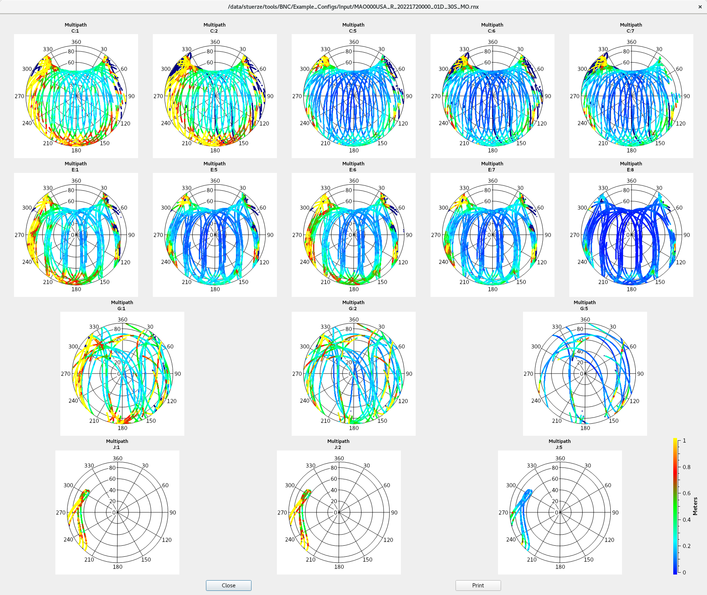
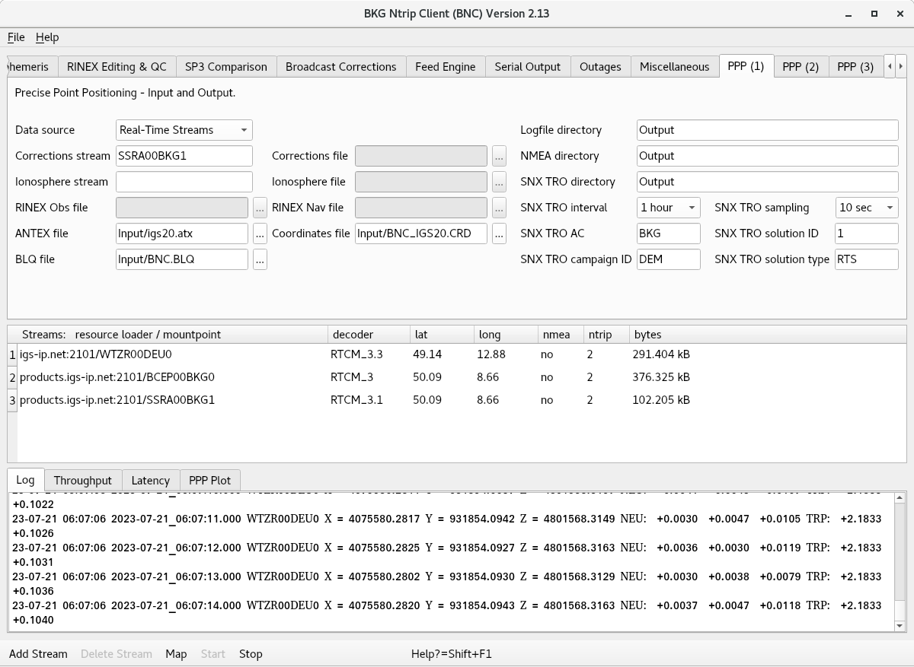
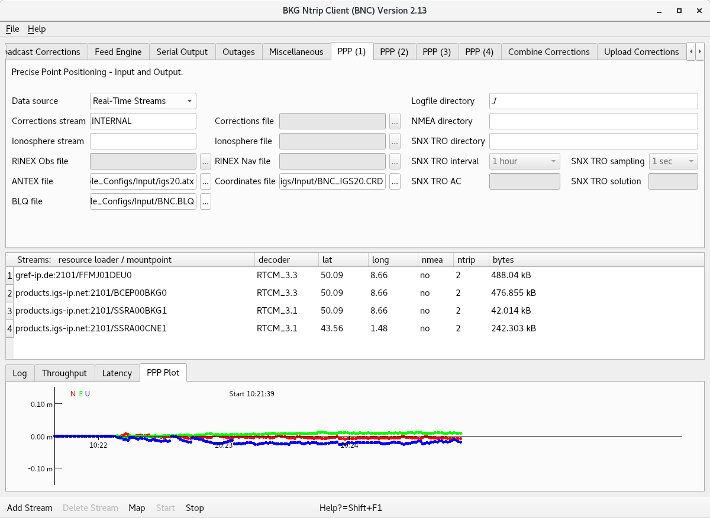

Georg Weber(1), Leoš Mervart(2), Andrea Stürze(1), Dirk Stöcker(3)
(1) Federal Agency for Cartography and Geodesy (BKG), Frankfurt, Germany
(2) Czech Technical University (CTU), Department of Geomatics, Prague, Czech Republic
(3) Alberding GmbH, Wildau, Germany
Feel free to send comments, suggestions or bug reports to:
Federal Agency for Cartography and Geodesy (BKG) Department of Geodesy, Section Satellite Navigation Richard-Strauss-Allee 11 60598 Frankfurt am Main, Germany email: igs-ip@bkg.bund.de
BNC has been written under GNU General Public License (GPL). Source code is available from Subversion software archive
https://software.rtcm-ntrip.org/svn/trunk/BNC.
Precompiled binaries of BNC are available for MS Windows, Linux, and Mac OS X systems. They can be downloaded from
https://igs.bkg.bund.de/ntrip/bnc.
Copyright © 2005-2023 Federal Agency for Cartography and Geodesy (BKG), Frankfurt, Germany
To help justify funding the development of BNC, we kindly ask users to include a citation when applying the software results in a publication. We suggest:
Weber, G., L. Mervart, A. Stürze, A. Rülke and D. Stöcker (2016):
BKG Ntrip Client, Version 2.12. Mitteilungen des Bundesamtes
für Kartographie und Geodäsie, Vol. 49, Frankfurt am Main, 2016.
1. General Information
1.1 Purpose
1.2 Supported GNSS
1.3 Data Flow
1.4 Handling
1.5 Installation
1.5.1 Compilation
1.6 Configuration
1.6.1 Examples
1.7 Limitations
1.8 Looking Back
2. Settings Details
2.1 Top Menu Bar
2.1.1 File
2.1.2 Help
2.2 Network
2.2.1 Proxy
2.2.2 SSL
2.3 General
2.3.1 Logfile
2.3.2 Append Files
2.3.3 Reread Configuration
2.3.4 Auto Start
2.3.5 Raw Output File
2.4 RINEX Observations
2.4.1 Filenames
2.4.2 Directory
2.4.3 File Interval
2.4.4 Sampling
2.4.5 Skeleton Extension
2.4.6 Skeleton Mandatory
2.4.7 Skeleton Directory
2.4.8 Script
2.4.9 Version 3 and 4
2.4.10 Version 2
2.5 RINEX Ephemeris
2.5.1 Directory
2.5.2 Interval
2.5.3 Port
2.5.4 Version
2.6 RINEX Editing & QC
2.6.1 Action
2.6.2 Input Files
2.6.3 Output Files
2.6.4 Logfiles
2.6.5 Plots for Signals
2.6.6 Directory for Plots
2.6.7 Set Edit Options
2.6.8 Command Line, No Window
2.7 SP3 Comparison
2.7.1 Input SP3 Files
2.7.2 Exclude Satellites
2.7.3 Logfile
2.8 Broadcast Corrections
2.8.1 Directory, ASCII
2.8.2 Interval
2.8.3 Port
2.8.4 Wait for Full Corr Epoch
2.9 Feed Engine
2.9.1 Port
2.9.2 Wait for Full Obs Epoch
2.9.3 Sampling
2.9.4 File
2.9.5 Port (unsynchronized)
2.10 Serial Output
2.10.1 Mountpoint
2.10.2 Port Name
2.10.3 Baud Rate
2.10.4 Flow Control
2.10.5 Parity
2.10.6 Data Bits
2.10.7 Stop Bits
2.10.8 NMEA
2.10.9 File
2.10.10 Height
2.10.11 Sampling
2.11 Outages
2.11.1. Observation Rate
2.11.2. Failure Threshold
2.11.3. Recovery Threshold
2.11.4. Script
2.12 Miscellaneous
2.12.1. Mountpoint
2.12.2. Log Latency
2.12.3. Scan RTCM
2.12.4. Port
2.13 PPP Client
2.13.1 PPP (1): Input and Output
2.13.1.1 Data Source
2.13.1.2 Corrections Stream
2.13.1.3 Corrections File
2.13.1.4 Ionosphere Stream
2.13.1.5 Ionosphere File
2.13.1.6 RINEX Observation File
2.13.1.7 RINEX Navigation File
2.13.1.8 ANTEX File
2.13.1.9 Coordinates File
2.13.1.10 BLQ File
2.13.1.11 Logfile Directory
2.13.1.12 NMEA Directory
2.13.1.13 SNX TRO Directory
2.13.1.13.1 Interval
2.13.1.13.2 Sampling
2.13.1.13.3 Analysis Center
2.13.1.13.4 Solution ID
2.13.2 PPP (2): Processing Options
2.13.2.1 GNSS Observations
2.13.2.2 Code Observations
2.13.2.3 Phase Observations
2.13.2.4 Elevation Dependent Weighting
2.13.2.5 Minimum Number of Observations
2.13.2.6 Minimum Elevation
2.13.2.7 Wait for Clock Corrections
2.13.2.8 Seeding
2.13.2.9 Constraints
2.13.2.10 GIM Pseudo Observations
2.13.3 PPP (3): Processed Stations
2.13.3.1 Station
2.13.3.2 Sigma North/East/Up
2.13.3.3 Noise North/East/Up
2.13.3.4 Tropo Sigma
2.13.3.5 Tropo Noise
2.13.3.6 NMEA Port
2.13.3.6 Signal Priorities
2.13.4 PPP (4): Plots
2.13.4.1 PPP Plot
2.13.4.2 Audio Response
2.13.4.3 Track Map
2.13.4.4 Dot-properties
2.13.4.4.1 Size
2.13.4.4.2 Color
2.13.4.5 Post Processing Speed
2.14 Combine Corrections
2.14.1 Combine Corrections Table
2.14.1.1 Add Row, Delete
2.14.1.2 Method
2.14.1.3 Maximal Clock Residuum
2.14.1.4 Maximal Orbit Displacement
2.14.1.5 Sampling
2.14.1.6 Satellite Systems
2.15 Upload Corrections
2.15.1 Add, Delete Row
2.15.2 Host, Port, Mountpoint, Ntrip Version, User and Password
2.15.3 System
2.15.4 Format
2.15.5 Center of Mass
2.15.6 SP3 File
2.15.7 RNX File
2.15.8 BSX File
2.15.9 PID, SID, IOD
2.15.10 Interval
2.15.11 Sampling
2.15.11.1 Orbits
2.15.11.2 SP3
2.15.11.3 RINEX
2.15.11.4 SINEX
2.15.12 Custom Trafo
2.15.13 ANTEX File
2.16 Upload Ephemeris
2.16.1 Host & Port
2.16.2 Mountpoint, Ntrip Version, User, Password
2.16.3 Satellite System
2.16.4 Sampling
2.17 Streams Canvas
2.17.1 Edit Streams
2.17.2 Delete Stream
2.17.3 Reconfigure Stream Selection On-the-fly
2.18 Logging Canvas
2.18.1 Log
2.18.2 Throughput
2.18.3 Latency
2.18.4 PPP Plot
2.19 Bottom Menu Bar
2.19.1 Add Stream
2.19.1.1 Add Stream - Coming from Caster
2.19.1.1.1 Caster Host and Port
2.19.1.1.2 Casters Table
2.19.1.1.3 User and Password
2.19.1.1.4 Get Table
2.19.1.1.5 Ntrip Version
2.19.1.1.6 Map
2.19.1.2 Add Stream - Coming from TCP/IP Port
2.19.1.3 Add Stream - Coming from UDP Port
2.19.1.4 Add Stream - Coming from Serial Port
2.19.2 Delete Stream
2.19.3 Map
2.19.4 Start
2.19.5 Stop
2.19.6 Help? = Shift+F1
2.20 Command Line Options
2.20.1 Version
2.20.2 Display
2.20.3 No Window Mode
2.20.4 File Mode
2.20.5 Configuration File
2.20.6 Configuration Options
3. Annex
3.1 RTCM Standards
3.1.1 Ntrip Version 1
3.1.2 Ntrip Version 2
3.1.3 RTCM Version 2
3.1.4 RTCM Version 3
3.2 Command Line Help
3.3 Further Reading
3.4 Abbreviations
List of Figures
| Fig. | Title | Chapter |
| 1 | Flowchart, BNC connected to a GNSS rover for Precise Point Positioning | 1.3 |
| 2 | Flowchart, BNC converting RTCM streams to RINEX batches | 1.3 |
| 3 | Flowchart, BNC feeding a real-time GNSS engine and uploading encoded Broadcast Corrections | 1.3 |
| 4 | Flowchart, BNC combining Broadcast Correction streams | 1.3 |
| 5 | Sections on BNC's main window | 1.4 |
| 6 | Management of configuration options in BNC | 1.6 |
| 7 | BNC's 'Network' panel configured to ignore eventually occurring SSL error messages | 2.2.2 |
| 8 | BNC translating incoming RTCM Version 3 Observation streams to 15 min RINEX Version 4 Observation files | 2.4 |
| 9 | Example for creating RINEX quality check analysis graphics output with BNC | 2.6.5 |
| 10 | Example for satellite availability, elevation and PDOP plots as a result of a RINEX quality check analysis with BNC | 2.6.5 |
| 11 | Sky plot examples for multipath, part of RINEX quality check analysis with BNC | 2.6.5 |
| 12 | Sky plot examples for signal-to-noise ratio, part of RINEX quality check analysis with BNC | 2.6.5 |
| 13 | Example for BNC's 'RINEX Editing Options' window | 2.6.7 |
| 14 | Example for RINEX file concatenation with BNC | 2.6.7 |
| 15 | Example for comparing two SP3 files with satellite orbit and clock data using BNC | 2.7 |
| 16 | Graphical results from an example comparison of two SP3 files with satellite orbit and clock data using BNC | 2.7.3 |
| 17 | Example for pulling, saving and output of Broadcast Corrections using BNC | 2.8.3 |
| 18 | Synchronized BNC output via IP port to feed a GNSS real-time engine | 2.9 |
| 19 | Flowcharts, BNC forwarding a stream to a serially connected receiver; sending NMEA sentences is mandatory for VRS streams | 2.10 |
| 20 | BNC pulling a RTCM Version 3 stream to feed a serial connected receiver with observations from a nearby reference station for conventional RTK | 2.10 |
| 21 | RTCM message numbers, latencies and observation types logged by BNC | 2.12 |
| 22 | Real-time Precise Point Positioning with BNC, PPP Panel 1 | 2.13.1 |
| 23 | Precise Point Positioning with BNC, PPP Panel 2 | 2.13.2 |
| 24 | Precise Point Positioning with BNC in 'Quick-Start' mode, PPP Panel 4 | 2.13.2.10 |
| 25 | Precise Point Positioning with BNC, PPP Panel 3 | 2.13.3 |
| 26 | Track of positions from BNC with OpenStreetMap in background | 2.13.4.3 |
| 27 | BNC combining Broadcast Correction streams | 2.14 |
| 28 | 'INTERNAL' PPP with BNC using a combination of Broadcast Corrections | 2.14 |
| 29 | BNC producing Broadcast Corrections from incoming precise orbits and clocks and uploading them to an Ntrip Broadcaster | 2.15 |
| 30 | Setting BNC's Custom Transformation Parameters window | 2.15.3 |
| 31 | BNC uploading a combined Broadcast Correction stream | 2.15.12 |
| 32 | BNC producing Broadcast Ephemeris streams from globally distributed RTCM streams; upload in RTCM format to an Ntrip Broadcaster | 2.16.3 |
| 33 | Bandwidth consumption of RTCM streams received by BNC | 2.18.2 |
| 34 | Latency of RTCM streams received by BNC | 2.18.3 |
| 35 | Example for time series plot of displacements produced by BNC | 2.18.4 |
| 36 | Steam input communication links accepted by BNC | 2.19 |
| 37 | BNC's 'Select Broadcaster' table | 2.19.1.1.2 |
| 38 | Broadcaster source-table shown by BNC | 2.19.1.1.4 |
| 39 | Stream distribution map shown by BNC as derived from Ntrip Broadcaster source-table | 2.19.1.1.6 |
| 40 | BNC configuration for pulling a stream via serial port | 2.19.1.4 |
List of Tables
| Tab. | Title | Chapter |
| 1 | Status of RTCM Version 3 message implementations in BNC supporting various GNSS systems | 1.2 |
| 2 | Contents and format of synchronized output of observations feeding a GNSS engine | 2.9 |
The BKG Ntrip Client (BNC) is a program for simultaneously retrieving, decoding, converting and processing or analyzing real-time GNSS data streams applying the 'Networked Transport of RTCM via Internet Protocol' (Ntrip) standard. It has been developed within the framework of the IAG sub-commission for Europe (EUREF) and the International GNSS Service (IGS). Although meant to be a real-time tool, it comes with some post processing functionality. It can be used for data coming from Ntrip Broadcasters like
or similar caster installation.
Documentation
BNC provides context-sensitive help (What's This) related to specific objects.
Furthermore, it comes with severl example configurations. The here presented documentation
is available as part of the software, as a PDF file and can be find as well as an online documentation:
http://software.rtcm-ntrip.org/export/HEAD/ntrip/trunk/BNC/src/bnchelp.html.
Note that some figures presented in this documentation may show screenshots from earlier versions of BNC. If so, there is either no relevant change compared to the current appearance of the program or no change at all.
Acknowledgements
Promoting Open RTCM Standards for streaming GNSS data over the Internet has been a major aspect in developing BNC as Open Source real-time software. Basically, the tool enables the test, validation and further evolution of new RTCM messages for precise satellite navigation. With high-level source code at hand, it also allows university education to catch up with comprehensive state-of-the-art positioning and potentially contributes fresh ideas which are free from any licensing.
BNC was designed to serve the following purposes:
BNC supports the following GNSS stream formats and message types:
BNC supports the following GNSS file formats:
Note that BNC allows to by-pass decoding and conversion algorithms for incoming streams, leaves whatever is received untouched to save it in files or output it through a local TCP/IP port.
BNC is permanently completed to finally support all existing GNSS systems throughout all features of the program. The table below shows in detail which GNSS systems are supported so far by particular applications when using the latest BNC version. Application areas named here are:
Table 1: Status of RTCM Version 3 message implementations in BNC supporting various GNSS systems
| Message Type # | Description | GNSS System | RTCM Proposal | Decoding | RINEX/ SP3 | Encoding | Upload | PPP | Combin. |
General | |||||||||
| 1005,1006 | Station | x | |||||||
| 1007,1008 | Antenna | x | |||||||
| 1033 | Receiver, Antenna | x | |||||||
| 1013 | System Parameters | x | |||||||
| 1300 | Service CRS | x | x | x | |||||
| 1301 | Helmert Trafo Parameters | x | (x) | ||||||
| 1302 | RTCM CRS | x | x | x | |||||
Navigation | |||||||||
| 1019 | Ephemeris | GPS | x | x | x | x | x | x | |
| 1020 | Ephemeris | GLONASS | x | x | x | x | x | x | |
| 1045 | Ephemeris | Galileo F/Nav | x | x | x | x | x | ||
| 1046 | Ephemeris | Galileo I/Nav | x | x | x | x | x | x | |
| 1043 | Ephemeris | SBAS | x | x | x | x | x | x | |
| 1044 | Ephemeris | QZSS | x | x | x | x | x | ||
| 1042 | Ephemeris | BDS | x | x | x | x | x | x | |
| 1041 | Ephemeris | NavIC | x | x | x | x | x | ||
Observation | |||||||||
| 1001-4 | Conventional Messages | GPS | x | x | x | ||||
| 1009-12 | Conventional Messages | GLONASS | x | x | x | ||||
Observation | |||||||||
| 1071-77 | Multiple Signal Message | GPS | x | x | x | ||||
| 1081-87 | Multiple Signal Message | GLONASS | x | x | x | ||||
| 1091-97 | Multiple Signal Message | Galileo | x | x | x | ||||
| 1101-07 | Multiple Signal Message | SBAS | x | x | |||||
| 1111-17 | Multiple Signal Message | QZSS | x | x | |||||
| 1121-27 | Multiple Signal Message | BDS | x | x | x | ||||
| 1131-37 | Multiple Signal Message | NavIC | x | x | |||||
RTCM SSR I | |||||||||
| 1057 | Orbit Corrections | GPS | x | x | x | x | x | x | |
| 1063 | Orbit Corrections | GLONASS | x | x | x | x | x | x | |
| 1240 | Orbit Corrections | Galileo | x | x | x | x | x | x | x |
| 1246 | Orbit Corrections | SBAS | x | x | x | x | x | x | |
| 1252 | Orbit Corrections | QZSS | x | x | x | x | x | x | |
| 1258 | Orbit Corrections | BDS | x | x | x | x | x | x | x |
| 1058 | Clock Corrections | GPS | x | x | x | x | x | x | |
| 1064 | Clock Corrections | GLONASS | x | x | x | x | x | x | |
| 1241 | Clock Corrections | Galileo | x | x | x | x | x | x | x |
| 1247 | Clock Corrections | SBAS | x | x | x | x | x | x | |
| 1253 | Clock Corrections | QZSS | x | x | x | x | x | x | |
| 1259 | Clock Corrections | BDS | x | x | x | x | x | x | x |
| 1059 | Code Biases | GPS | x | x | x | x | x | x | |
| 1065 | Code Biases | GLONASS | x | x | x | x | x | x | |
| 1242 | Code Biases | Galileo | x | x | x | x | x | x | x |
| 1248 | Code Biases | SBAS | x | x | x | x | x | x | |
| 1254 | Code Biases | QZSS | x | x | x | x | x | x | |
| 1260 | Code Biases | BDS | x | x | x | x | x | x | x |
| 1061, 1062 | User Range Accuracy, HR | GPS | x | ||||||
| 1067, 1068 | User Range Accuracy, HR | GLONASS | x | ||||||
| 1244, 1245 | User Range Accuracy, HR | Galileo | x | x | |||||
| 1250, 1251 | User Range Accuracy, HR | SBAS | x | x | |||||
| 1256, 1257 | User Range Accuracy, HR | QZSS | x | x | |||||
| 1262, 1263 | User Range Accuracy, HR | BDS | x | x | |||||
| 1060 | Comb. Orbits & Clocks | GPS | x | x | x | x | x | x | |
| 1066 | Comb. Orbits & Clocks | GLONASS | x | x | x | x | x | x | |
| 1243 | Comb. Orbits & Clocks | Galileo | x | x | x | x | x | x | x |
| 1249 | Comb. Orbits & Clocks | SBAS | x | x | x | x | x | x | |
| 1255 | Comb. Orbits & Clocks | QZSS | x | x | x | x | x | x | |
| 1261 | Comb. Orbits & Clocks | BDS | x | x | x | x | x | x | x |
RTCM SSR II | |||||||||
| 1264 | VTEC | GNSS | x | x | x | x | x | x | |
| 1265 | Phase Biases | GPS | x | x | x | x | x | x | |
| 1266 | Phase Biases | GLONASS | x | x | x | x | x | x | |
| 1267 | Phase Biases | Galileo | x | x | x | x | x | x | |
| 1268 | Phase Biases | SBAS | x | x | x | x | x | ||
| 1269 | Phase Biases | QZSS | x | x | x | x | x | ||
| 1270 | Phase Biases | BDS | x | x | x | x | x | x | |
IGS SSR | |||||||||
| 4076 | IGS SSR | GNSS | x | x | x | x | x | x |
BNC can be used in different contexts with varying data flows. Typical real-time communication follows the Ntrip protocol over TCP/IP (also via SSL), RTSP/RTP or UDP, plain TCP/IP protocol, or serial communication links. Stream content could be observations, ephemeris, SSR products or NMEA sentences.
The first of the following figures shows a flow chart of BNC connected to a GNSS receiver providing observations via serial or TCP communication link for the purpose of Precise Point Positioning.
Figure 1: Flowchart, BNC connected to a GNSS rover for Precise Point Positioning
The second figure shows the conversion of RTCM streams to RINEX files.
Figure 2: Flowchart, BNC converting RTCM streams to RINEX batches
The third figure shows a flow chart of BNC feeding a real-time GNSS engine, which estimates precise orbits and clocks. BNC is used in this scenario to encode SSR corrections to RTCM-SSR or IGS-SSR and upload them to an Ntrip Broadcaster.
Figure 3: Flowchart, BNC feeding a real-time GNSS engine and uploading encoded Broadcast Corrections
The fourth figure shows BNC combining several Broadcast SSR Correction streams to disseminate the combination product while saving results in SP3, Clock RINEX and SINEX Bias files.
Figure 4: Flowchart, BNC combining Broadcast Correction streams
Although BNC is mainly a real-time tool to be operated online, it can be run offline
Unless it runs offline, BNC
The main window of BNC shows a 'Top menu bar' section, a 'Settings' sections with panels to set processing options, a 'Streams' section, a section for 'Log' tabs, and a 'Bottom menu bar' section, see figure below.
Figure 5: Sections on BNC's main window
Running BNC in interactive mode requires graphics support. This is also required in batch mode when producing plots. Windows and Mac OS X systems always support graphics. However, when using BNC in batch mode on Linux systems for producing plots, you need to make sure that at least a virtual X-Server like 'Xvfb' is installed and the '-display' command line option is used. Alternatively, the command line option '--plattform' can be tried to use with the argument 'offscreen' and the '-display' command line option.
The usual handling of BNC is that you first select a number of streams ('Add Stream'). Any stream configured to BNC shows up on the 'Streams' canvas in the middle of BNC's main window. You then go through BNC's various configuration panels to set a combination of input, processing and output options before you start the program ('Start'). Most configuration panels are dedicated to a certain function of BNC. If the first option field on such a configuration panel is empty, the affected functionality is deactivated.
Records of BNC's activities are shown in the 'Log' tab which is part of the 'Log' canvas. The bandwidth consumption per stream, the latency of incoming observations, and a PPP time series for coordinate displacements are also part of that canvas and shown in the 'Throughput', 'Latency' and 'PPP Plot' tabs.
Configuration options are usually first set using BNC's Graphical User Interface (GUI), then saved in a configuration file. For routine operations in batch mode all of BNC's configuration options can be extracted from the configuration file and applied using the program's Command Line Interface (CLI).
Precompiled builds of BNC are available for Windows, Linux, and Mac OS X systems. They can be downloaded for installation from https://igs.bkg.bund.de/ntrip/bnc. Please ensure that you always use the latest version of the program.
Windows: A dynamically compiled shared library build for Mircrosoft Windows systems is provided as Microsoft Installer (MSI) file. MSI files are used for installation, storage, and removal of programs. The BNC files are contained in a MSI package, which is used with the program's client-side installer service, an .EXE file, to open and install the program. We used the MSVC 2019 compiler to create BNC for Windows. After installation your 'bnc.exe' file shows up e.g. under 'All Programs'.
Linux: Shared library builds for BNC are provided for a selection of Linux distributions. Download the ZIP archive for a version which fits to your Linux system, unzip the archive and run the included BNC binary.
Mac OS X Build: A shared library 'Disk iMaGe' (DMG) file is provided for BNC on OS X systems; it also comes in a ZIP archive. The DMG file format is used in the Mac for distributing software. Mac install packages appear as a virtual disk drive. After download, when the DMG file icon is double clicked, the virtual drive is 'mounted' on the desktop. Install BNC by dragging the 'bnc.app' icon to your '/Applications' folder. To start BNC, double click on '/Applications/bnc.app'. You could also start BNC via Command Line Interface (CLI) using command '/Applications/bnc.app/Contents/MacOS/bnc'.
BNC has been written as Open Source and published under GNU General Public License (GPL). The latest source code can be checked out from the Subversion repository at http://software.rtcm-ntrip.org/svn/trunk/BNC. A ZIP archive available from https://igs.bkg.bund.de/ntrip/bnc provides the source code.
The following describes how you can produce your own builds of BNC on Windows, Linux, and Mac systems. It is likely that BNC can also be compiled on other systems where a GNU compiler and Qt Version 5 or any later version is installed.
Static versus Shared Libraries
You can produce static or shared library builds of BNC. Static builds are sufficient in case you do not want
BNC to produce track maps on top of OpenStreetMap (OSM). The usage would require the
QtWebEngineWidges library which can only be part of BNC builds from shared Qt libraries. Hence, having a shared library
Qt installation available is a precondition for producing a shared library build of BNC.
MS Windows Systems, Shared Library
This section contains some hints how to build a shared Qt 15.5.8 library on MS Windows systems to then create your own shared build of BNC.
But it is highly recommended to use the dynamically compiled shared library build for Mircrosoft Windows systems which is provided as
Microsoft Installer (MSI) file.
.\configure -prefix C:\Qt\5.15.8\ -opensource -release -platform win32-msvc -icu -I C:\icu-windows\include -L C:\icu-windows\lib64 -qt-pcre -qt-zlib -qt-freetype -qt-harfbuzz -qt-libpng -qt-libjpeg -qt-sqlite -qt-tiff -qt-webp -mp -confirm-license -openssl-linked OPENSSL_PREFIX="C:\OpenSSL-Win64" -opengl dynamic -webengine-proprietary-codecs -recheck-all -nomake tests -nomake examples -no-sql-mysql -skip qtdoc -skip qtquickcontrols -skip qtscript -skip qtxmlpatterns -skip qtandroidextras -skip qtgamepad -skip qtmultimedia -skip qtpurchasing -skip qtwayland -skip qtspeech -skip qtlottie -skip qtscxml -skip qt3d -skip qtcharts -skip qtdatavis3d -skip qtgraphicaleffects -skip qtquickcontrols -skip qtquickcontrols2 -skip qtremoteobjects
jom or nmake
jom install or nmake install
set QTDIR=C:\Qt\5.15.8 set PATH=%PATH%C:\Qt\5.15.8\bin; set QMAKESPEC=C:\Qt\5.15.8\mkspecs\win32-msvcand exceute file QtEnv.bat
qmake bnc.pro
nmake
Linux Systems
Qt development tools have to be installed as well as some other libraries e.g. for openssl. They can be easily installed from
your system repositories. BNC 2.13 needs Qt5. See the docker files for the most used Linux systems.
To compile the BNC program, you first download the source code from the SVN repository http://software.rtcm-ntrip.org/svn/trunk/BNC. Go to directory BNC and run the following commands:
qmake bnc.pro
make
You will find a build of BNC in directory BNC.
Mac OS X Systems
As a default, configuration files for running BNC on Unix/Linux/Mac OS X systems are saved in directory '${HOME}/.config/BKG'. On Windows systems, they are typically saved in directory 'C:/Documents and Settings/Username/.config/BKG'. The default configuration filename is 'BNC.bnc'.
The default filename 'BNC.bnc' can be changed and the file content can easily be edited. On graphical user interfaces it is possible to Drag & Drop a configuration file icon to start BNC (not on Mac OS X systems). It is also possible to start and configure BNC via command line. Some configuration options can be changed on-the-fly. See annexed 'Command Line Help' for a complete set of configuration options.
BNC maintains configuration options at three different levels:
Figure 6: Management of configuration options in BNC:
| Left: | BNC in graphics mode; active configuration options are introduced through GUI input fields and finally saved on disk | |
| Middle: | BNC in 'no window' mode; active configuration options are read from disk | |
| Right: | BNC in 'no window' mode without configuration file; default configuration options can be overwritten via command line options |
Configuration options are usually specified using GUI input fields (1) after launching BNC. When hitting the 'Start' button, configuration options are transferred one level down to become BNC's active configuration (2), allowing the program to begin its operation. Pushing the 'Stop' button ends data processing so that the user can finally terminate BNC through 'File'->'Quit'->'Save Options' which saves processing options in a configuration file to disk (3). It is important to understand that:
BNC comes with a number of configuration examples which can be used on all operating systems. Copy the complete directory 'Example_Configs' which comes with the software to your disc. It includes sub-directories 'Input' and 'Output'. There are several ways to start BNC using one of the example configurations:
Although it's not a must, we suggest that you always create BNC configuration files with filename extension '.bnc'.
We furthermore suggest for convenience reasons that you configure your system to automatically start BNC when you double-click a file with the filename extension '.bnc'. The following describes what to do on MS Windows systems to associate the BNC program to such configuration files:
Some of the presented example configurations contain a user ID 'Example' with a password 'Configs' for accessing a few GNSS streams from public Ntrip Broadcasters. This free generic account is arranged for convenience reasons only. Please be so kind as to replace the generic account details as well as the place holder's 'User' and 'Pass' by the personal user ID and password you receive following an online registration through http://register.rtcm-ntrip.org.
Note that the account for an Ntrip Broadcaster is usually limited to pulling a specified maximum number of streams at the same time. As running some of the example configurations requires pulling several streams, it is suggested to make sure that you do not exceed your account's limits.
Make also sure that sub-directories 'Input' and 'Output' which are part of the example configurations exist on your system or adjust the affected example configuration options according to your needs.
Some BNC options require Antenna Phase Center variations as made available from IGS through so-called ANTEX files at https://files.igs.org/pub/station/general/igs20.atx. An example ANTEX file 'igs20.atx' is part of the BNC package for convenience.
The example configurations assume that no proxy protects your BNC host. Should a proxy be operated in front of BNC then you need to introduce its name or IP and port number in the 'Network' panel.
(A) Working with Configuration Files
You should be able to run all configuration file examples without changing contained options. However, configuration
'Upload.bnc' is an exception because it requires an input stream from a connected network engine.
A basic function of BNC is streaming GNSS data over the open Internet using the Ntrip transport protocol. Employing IP streaming for satellite positioning goes back to the beginning of our century. Wolfgang Rupprecht has been the first person who developed TCP/IP server software under the acronym of DGPS-IP (Rupprecht 2000) and published it under GNU General Public License (GPL). While connecting marine beacon receivers to PCs with permanent access to the Internet he transmitted DGPS corrections in an RTCM format to support Differential GPS positioning over North America. With approximately 200 bits/sec the bandwidth requirement for disseminating beacon data was comparatively small. Each stream was transmitted over a unique combination of IP address and port. Websites informed about existing streams and corresponding receiver positions.
To cope with an increasing number of transmitting GNSS reference stations, the Federal Agency for Cartography and Geodesy (BKG) together with the Informatik Centrum Dortmund (ICD) in Germany developed a streaming protocol for satellite navigation data called 'Networked Transport of RTCM via Internet Protocol' (Ntrip). The protocol was built on top of the HTTP standard and included the provision of meta data describing the stream content. Any stream could now be globally transmitted over just one IP port: HTTP port 80. Stream availability and content details became part of the transport protocol. The concept was first published in 2003 (Weber and Honkala 2004, Weber et al. 2005a) and was based on three software components, namely an NtripServer pushing data from a reference station to an NtripCaster and an NtripClient pulling data from the stream splitting caster to support a rover receiver. (Note that from a socket-programmers perspective NtripServer and NtripClient both act as clients; only the NtripCaster operates as socket-server.) Ntrip could essentially benefit from Internet Radio developments. It was the ICECAST multimedia server, which provided the bases for BKG's 'Professional Ntrip Broadcaster' with software published first in 2003 and of course again as Open Source under GPL.
For BKG as a governmental agency, making Ntrip an Open Industry Standard has been an objective from the very beginning. The 'Radio Technical Commission for Maritime Services' (RTCM) accepted 'Ntrip Version 1' in 2004 as 'RTCM Recommended Standard' (Weber et al. 2005b). Nowadays there is almost no geodetic GNSS receiver which does not come with integrated NtripClient and NtripServer functionality as part of the firmware. Hundreds of NtripCaster implementations are operated world-wide for highly accurate satellite navigation through RTK networks. Thousands of reference stations upload observations via NtripServer to central computing facilities for any kind of NtripClient application. In 2011 'Ntrip Version 2' was released (RTCM SC-104 2011) which cleared and fixed some design problems and HTTP protocol violations. It also supports TCP/IP via SSL and adds optional communication over RTSP/RTP and UDP.
With the advent of Ntrip as an open streaming standard, BKG's interest turned towards taking advantage from free real-time access to GNSS observations. International Associations such as the IAG Reference Frame Sub Commissions for Africa (AFREF), Asia & Pacific (APREF), Europe (EUREF), North America (NAREF) Latin America & Caribbean (SIRGAS), and the International GNSS Service (IGS) maintain continental or even global GNSS networks with the majority of modern receivers supporting Ntrip stream upload. Through operating BKG's NtripCaster software, these networks became extremely valuable sources of real-time GNSS information. In 2005, this was the starting point for developing the 'BKG Ntrip Client' (BNC) as a multi-stream Open Source NtripClient that allows pulling hundreds of streams simultaneously from any number of NtripCaster installations world-wide. Decoding incoming RTCM streams and output observations epoch by epoch via IP port to feed a real-time GNSS network engine became BNC's first and foremost ability (Weber and Mervart 2009). Converting decoded streams to short high-rate RINEX files to assist near real-time applications became a welcome by-product right from the start of this development.
Adding real-time Precise Point Positioning (PPP) support to BNC began in 2010 as an important completion in view of developing an Open RTCM Standard for that. According to the State Space Representation (SSR) model, new Version 3 messages are proposed to provide e.g. satellite orbit and clock corrections and ionospheric corrections as well as biases for code and phase data. The ultimate goal for SSR standardization is to reach centimeter level accuracy within seconds as an alternative to Network RTK methods such as VRS, FKP, and MAC. Because of interoperability aspects, an Open Standard in this area is of particular interest for clients. Regarding stand-alone PPP in BNC, it is worth mentioning that the program is not and can never be in competition with a receiver manufacturer's proprietary solution. Only software or services that are part of a receiver firmware could have the potential of becoming a thread for commercial interests. However, implementing or not implementing an Open PPP approach in a firmware is and will always remain a manufacturer's decision.
Implementing some post processing capability is essential for debugging real-time software in case of problems. So certain real-time options in BNC were complemented to work offline through reading data from files. Moreover, beginning in 2012, the software was extended to support Galileo, BeiDou, and QZSS besides GPS and GLONASS. With that, the Open Source tool BNC could be used for RINEX Version 3 file editing, concatenation and quality checks, a post processing functionality demanded by the IGS Multi-GNSS Experiment and not really covered at that time by UNAVCO's famous TEQC program with its limitation on GPS.
The well-established, mature codebase is mostly written in C++ language. Its publication under GNU GPL is thought to be well-suited for test, validation and demonstration of new approaches in precise real-time satellite navigation when IP streaming is involved. Commissioned by a German governmental agency, the overall intention has been to push the development of RTCM Recommended Standards to the benefit of IAG institutions and services such as IGS and the interested public in general.
The general documentation approach is to create a separate chapter for each processing option in a sequence which follows the layout of BNC's Graphical User Interface (GUI). The advantage is that searching for help by means of the document's Table of Contents (TOC) is quite convenient. A rather comprehensive number of TOC entries is the accepted downside of this approach.
The following chapters describe how to set BNC program options. They explain the 'Top Menu Bar', the 'Settings Canvas' with the processing options, the content of the 'Streams Canvas' and 'Logging Canvas', and the 'Bottom Menu Bar'.
The top menu bar allows selecting a font for the BNC windows, save configured options, or quit the program execution. It also provides access to the program's documentation.
The 'File' button lets you
The 'Help' button provides access to
You may need to specify a proxy when running BNC in a protected network. You may also like to use the Transport Layer Security (TLS) and its predecessor, Secure Sockets Layer (SSL) cryptographic protocols for secure Ntrip communication over the Internet.
If you are running BNC within a protected Local Area Network (LAN), you might need to use a proxy server to access the Internet. Enter your proxy server IP and port number in case one is operated in front of BNC. If you do not know the IP and port of your proxy server, check the proxy server settings in your Internet browser or ask your network administrator. Without any entry, BNC will try to use the system proxies.
Note that IP streaming is often not allowed in a LAN. In this case you need to ask your network administrator for an appropriate modification of the local security policy or for the installation of a TCP relay to the Ntrip Broadcaster you need to access. If this is not possible, you might need to run BNC outside your LAN on a host that has unobstructed connection to the Internet.
Communication with an Ntrip Broadcaster over Secure Sockets Layer (SSL) as well as the download of RINEX skeleton files when available from HTTPS websites requires the exchange of client and/or server certificates.
Specify the path to a directory where you save CA certificates on your system. BNC creates from *.crt and *.pem files a CA certificate database, which is used by the socket during the handshake phase to validate the peer's certificate.
SSL communication may involve queries coming from the Ntrip Broadcaster or from a HTTPS website hosting RINEX skeletons. Such a query could show up under BNC's 'Log' tab especially when self-signed SSL certificates are used. Example:
SSL Error Server Certificate Issued by: GNSS Data Center BKG (Bundesamt für Geodäsie und Kartographie) Cannot be verified The issuer certificate of a locally looked up certificate could not be found The root CA certificate is not trusted for this purpose No certificates could be verified
Queries should not be received by a client when a server uses official SSL certificates.
You may also just try communication via SSL to check out whether this is supported by the involved Ntrip Broadcaster. Note that SSL communication is usually done over port 443.
Two-sided communication with an Ntrip Broadcaster over SSL requires in addition the exchange of client certificates. Specify the full path to the client certificates on your system. The file naming convention for client certificates in BNC is as follows:
<hostname>.<port>.crt for the certificate and <hostname>.<port>.key for the private key, where <hostname> is without https://.
If available, the client or personal authentication certificate is presented to the peer during the SSL handshake process. Password protected key files are not supported. Don't try communication via two sided SSL if you are not sure whether this is supported by the involved Ntrip Broadcaster.
Tick 'Ignore SSL authorization errors' if you generally trust the server and do not want to be bothered with this.
Figure 7: BNC's 'Network' panel configured to ignore eventually occurring SSL error messages
The following defines general settings for BNC's logfile, file handling, reconfiguration on-the-fly, and auto-start.
Records of BNC's activities are shown in the 'Log' tab on the bottom of the main window. These logs can be saved into a file when a valid path is specified in the 'Logfile (full path)' field. The logfile name will automatically be extended by a string '_YYMMDD' for the current date. This leads to series of daily logfiles when running BNC continuously. Message logs cover the communication status between BNC and the Ntrip Broadcaster as well as problems that may occur in the communication link, stream availability, stream delay, stream conversion etc. The time stamps within the 'Log' tab are given in UTC. The time stamps within the logfile are given in GPS Time. The default value for 'Logfile (full path)' is an empty option field, meaning that BNC logs will not be saved into a file.
The following is an example for the content of a logfile written by BNC when operated in Precise Point Positioning (PPP) mode:
22-10-04 19:53:57 ========== Start BNC v2.13 (LINUX) ========== 22-10-04 19:53:57 Panel 'PPP' active 22-10-04 19:53:57 WTZR00DEU0: Get data in RTCM 3.x format 22-10-04 19:53:57 BCEP00BKG0: Get data in RTCM 3.x format 22-10-04 19:53:58 SSRA00BKG1: Get data in RTCM 3.x format 22-10-04 19:53:58 Configuration read: 08_PPP.bnc, 3 stream(s) 22-10-04 19:53:58 BCEP00BKG0: UNHEALTHY EPH G28 LNAV: 2022 10 04 20 00 00 22-10-04 19:54:13 2022-10-04_19:53:59.000 WTZR00DEU0 X = 4075580.5340 Y = 931854.3984 Z = 4801568.4250 NEU: -0.1623 +0.2450 +0.2991 TRP: +2.1833 +0.0002 22-10-04 19:54:13 2022-10-04_19:54:00.000 WTZR00DEU0 X = 4075580.5393 Y = 931854.4017 Z = 4801568.4126 NEU: -0.1748 +0.2471 +0.2936 TRP: +2.1833 +0.0002 22-10-04 19:54:14 2022-10-04_19:54:01.000 WTZR00DEU0 X = 4075580.4979 Y = 931854.4015 Z = 4801568.3441 NEU: -0.1891 +0.2560 +0.2153 TRP: +2.1833 +0.0004 22-10-04 19:54:14 2022-10-04_19:54:02.000 WTZR00DEU0 X = 4075580.4871 Y = 931854.4003 Z = 4801568.3157 NEU: -0.1995 +0.2573 +0.1868 TRP: +2.1833 +0.0007 22-10-04 19:54:14 2022-10-04_19:54:03.000 WTZR00DEU0 X = 4075580.4698 Y = 931854.3966 Z = 4801568.3005 NEU: -0.1961 +0.2575 +0.1637 TRP: +2.1833 +0.0009 22-10-04 19:54:14 2022-10-04_19:54:04.000 WTZR00DEU0 X = 4075580.4598 Y = 931854.3940 Z = 4801568.2881 NEU: -0.1964 +0.2573 +0.1476 TRP: +2.1833 +0.0010 22-10-04 19:54:18 2022-10-04_19:54:05.000 WTZR00DEU0 X = 4075580.4625 Y = 931854.3971 Z = 4801568.2917 NEU: -0.1966 +0.2597 +0.1525 TRP: +2.1833 +0.0012 22-10-04 19:54:18 2022-10-04_19:54:06.000 WTZR00DEU0 X = 4075580.4587 Y = 931854.3966 Z = 4801568.2912 NEU: -0.1940 +0.2600 +0.1496 TRP: +2.1833 +0.0014 22-10-04 19:54:18 2022-10-04_19:54:07.000 WTZR00DEU0 X = 4075580.4539 Y = 931854.3931 Z = 4801568.2818 NEU: -0.1960 +0.2577 +0.1389 TRP: +2.1833 +0.0018 22-10-04 19:54:18 2022-10-04_19:54:08.000 WTZR00DEU0 X = 4075580.4502 Y = 931854.3946 Z = 4801568.2757 NEU: -0.1975 +0.2599 +0.1321 TRP: +2.1833 +0.0021 22-10-04 19:54:18 2022-10-04_19:54:09.000 WTZR00DEU0 X = 4075580.4478 Y = 931854.3958 Z = 4801568.2737 NEU: -0.1973 +0.2617 +0.1293 TRP: +2.1833 +0.0023 ...
When BNC is started, new files are created by default and existing files with the same name will be overwritten. However, users might want to append existing files following a restart of BNC, a system crash or a BNC crash. Tick 'Append files' to continue with existing files and keep what has been recorded so far. Note that option 'Append files' affects all types of files created by BNC.
When operating BNC online in 'no window' mode (command line option -nw), some configuration options can nevertheless be changed on-the-fly without interrupting the running process. For that, you force the program to reread parts of its configuration in pre-defined intervals from disk. Select '1 min', '1 hour', or '1 day' to let BNC reread on-the-fly changeable configuration options every full minute, hour, or day. This lets in-between edited options become effective without interrupting uninvolved threads.
Note that following configuration options saved on disk can be changed/edited on-the-fly while BNC is already processing data:
You may like to auto-start BNC at startup time in window mode with pre-assigned configuration options. This may be required e.g. immediately after booting your system. Tick 'Auto start' to supersede the usage of the 'Start' button. Make sure that you maintain a link to BNC for that in your Autostart directory (Windows systems) or call BNC in a script below directory /etc/init.d (Unix/Linux/Mac OS X systems).
See BNC's command line option '-nw' for an auto-start of BNC in 'no window' mode.
BNC can save all data coming in through various streams in one daily file. The information is recorded in the specified 'Raw output file' in the received order and format. This feature allows a BNC user to run the PPP option offline with observations, Broadcast Corrections, and Broadcast Ephemeris being read from a previously saved file. It supports the offline repetition of a real-time situation for debugging purposes (Record & Replay functionality) and is not meant for post processing.
Data will be saved in blocks in the received format separated by ASCII time stamps like (example):
2022-10-04T20:07:31 WTZR00DEU0 RTCM_3.3 202
This example block header tells you that 202 bytes were saved in the data block following this time stamp. The information in this block is encoded in RTCM Version 3 format, comes from mountpoint WTZR00DEU0 and was received at 20:07:31 GPS Time on 2022-10-04. BNC adds its own time stamps in order to allow the reconstruction of a recorded real-time situation.
The default value for 'Raw output file' is an empty option field, meaning that BNC will not save all raw data into one single daily file.
Observations will be converted to RINEX if they come in either RTCM Version 2 or RTCM Version 3 format. Depending on the RINEX version and incoming RTCM message types, files generated by BNC may contain data from GPS, GLONASS, Galileo, BDS, SBAS, QZSS, and/or NavIC. In case an observation type is listed in the RINEX header but the corresponding observation is unavailable, its value is set to zero '0.000' or left blank. Note that the 'RINEX TYPE' field in the RINEX Version 3 Observation file header is always set to 'M(MIXED)' or 'Mixed' even if the file only contains data from one system.
It is important to understand that converting RTCM streams to RINEX files requires a priori information on observation types for specifying a complete RINEX header. Regarding the RINEX Version 2 file header, BNC simply introduces all observation types defined in the Version 2 standard and later reports "0.000" for observations which are not received. However, following this approach is not possible for RINEX Version 3 files from RTCM Version 3 MSM streams because of the huge number of observation types, which might in principle show up. The solution implemented in BNC is to start with RINEX Version 3 observation type records from skeleton files (see section 'Skeleton Extension' and 'Skeleton Mandatory') and switch to a default selection of observation types when such file is not available or does not contain the required information.
Please note that RTCM Version 3 messages 1084 (MSM4) for GLONASS observations do not contain the GLONASS channel numbers. These observation messages can only be converted to RINEX when you add messages which include the channel numbers, such as the GLONASS ephemeris messages 1020. The GLONASS channel number is available as extended information within MSM5/7 messages.
The screenshot below shows an example setup of BNC when converting streams to RINEX. Streams are coming from Ntrip Broadcaster http://igs-ip.net:2101. Specifying a decoder string 'ZERO2FILE' would mean to not convert the affected stream but save its content as received. On Wed Oct 5 2022 that would result for the Mountpoint 'FFMJ00DEU0' into a file named 'FFMJ00DEU0_221005'.
Figure 8: BNC translating incoming RTCM Version 3 Observation streams to 15 min RINEX Version 4 Observation files
The RINEX filenames generated by BNC depend on the chosen RINEX format. The following convention holds in case of RINEX Version 3 and RINEX Version 4 filenames:
| Filename Parameter | # Char. | Meaning |
| Name | 9 | Site, station and country code |
| S | 1 | Data source |
| Start Time | 11 | YYYYDDDHHMM |
| Period | 3 | File period |
| Obs. Freq. | 3 | Observation frequency |
| Content | 2 | Content type |
| Format | 3 | File format |
| Compression | 2-3 | Compression method (optional) |
Examples (Figure 8) for Mixed RINEX Version 4 GNSS observation filenames, files containing 15 minutes of data, one observation every second, 'MO' standing for 'Mixed Observations':
FFMJ00DEU_S_20222781400_15M_01S_MO.rnx CUT000AUS_S_20222781400_15M_01S_MO.rnx
Note that filename details are produced from the stream's mountpoint as well as corresponding BNC settings and meta data from the Ntrip Broadcaster source-table.
RINEX Version 2 filenames are derived from the first 4 characters of the corresponding stream's mountpoint (4-Char Station ID). For example, data from mountpoints FFMJ00DEU0 and CUT000AUS0 will have 15-minutes RINEX Observation files named
FFMJ278O00.22O CUT0278O00.22O
The RINEX version 2 filneme convention can be summrized as follows:
{4-Char-Station-ID}{ddd}{h}{mm}.{yy}O
where 'ddd' is the day of year, 'h' is a letter which corresponds to an hour long UTC time block,
'mm' is the starting minute within the hour. and 'yy' is the year.
Here you can specify the path to where the RINEX Observation files will be stored. If the specified directory does not exist, BNC will not create RINEX Observation files. Default value for 'Directory' is an empty option field, meaning that no RINEX Observation files will be written.
Select the length of the RINEX Observation file to be generated. The default value is 1 day.
Select the RINEX Observation sampling interval in seconds. A value of zero '0' tells BNC to store all received epochs into RINEX. This is the default value.
Whenever BNC starts to generate RINEX Observation files (and then once every day at midnight), it first tries to retrieve information needed for RINEX headers from so-called public RINEX header skeleton files which are derived from sitelogs. An HTTP or HTTPS link to a directory containing these skeleton files may be available through data field number 7 of the affected NET record in the source-table. See https://igs.bkg.bund.de/root_ftp/IGS/station/rnxskl/BRUX00BEL.skl for an example of a public RINEX header skeleton file for EPN station Brussels. Note that the download of RINEX skeleton files from HTTPS websites requires the exchange of client and/or server certificates. Clarify 'SSL' options offered through panel 'Network' for details.
Sometimes public RINEX header skeleton files are not available, their content is not up to date, or you need to put additional/optional records in the RINEX header. For that, BNC allows using personal skeleton files that contain the header records you would like to include. You can derive a personal RINEX header skeleton file from the information given in an up to date sitelog. A file in the RINEX Observations 'Directory' with a 'Skeleton extension' suffix is interpreted by BNC as a personal RINEX header skeleton file for the corresponding stream.
When producing RINEX Observation files from mountpoints like 'BRUX00BEL0', 'WTZR_RTCM3', and 'BRUX0', the following skeleton filenames would be accepted
BRUX00BEL.skl (9 char corresponding to RINEX version 3,4) WTZR_RTCM.skl (9 char corresponding to RINEX version 3,4) BRUX.skl (4 char corresponding to RINEX version 2)
if 'Skeleton extension' is set to 'skl'. As an alternative the basename is tried to use with lower cases as well.
Note the following regulations regarding personal RINEX header skeleton files: If such a file exists in the 'RINEX directory', the corresponding public RINEX header skeleton file is ignored. The RINEX header is generated solely from the content of the personal skeleton.
If neither a public nor a personal RINEX header skeleton file is available for BNC, a default header will be used.
The following is a skeleton example for a RINEX file:
OBSERVATION DATA M RINEX VERSION / TYPE PORTIONS OF THIS HEADER GENERATED BY BKG AT 05-Oct-22 04:51 COMMENT FROM SITELOG CUT000AUS_20201020.log COMMENT OBS TYPES from www.igs-ip.net/CUT000AUS0 COMMENT CUT000AUS MARKER NAME 59945M001 MARKER NUMBER CUT OBSERVER / AGENCY 5023K67889 TRIMBLE NETR9 5.45 REC # / TYPE / VERS 4928353386 TRM59800.00 SCIS ANT # / TYPE -2364337.2699 4870285.5624 -3360809.8398 APPROX POSITION XYZ 0.0000 0.0000 0.0000 ANTENNA: DELTA H/E/N G 13 C1C L1C D1C S1C C2W L2W S2W C2X L2X S2X C5X L5X S5X SYS / # / OBS TYPES R 13 C1C L1C D1C S1C C1P L1P S1P C2C L2C S2C C2P L2P S2P SYS / # / OBS TYPES E 13 C1X L1X D1X S1X C7X L7X S7X C8X L8X S8X C5X L5X S5X SYS / # / OBS TYPES J 10 C1C L1C D1C S1C C2X L2X S2X C5X L5X S5X SYS / # / OBS TYPES C 10 C2I L2I D2I S2I C6I L6I S6I C7I L7I S7I SYS / # / OBS TYPES 22 R01 1 R02 -4 R03 5 R04 6 R05 1 R06 -4 R07 5 R08 6 GLONASS SLOT / FRQ # R09 -2 R10 -7 R11 0 R12 -1 R13 -2 R14 -7 R15 0 R17 4 GLONASS SLOT / FRQ # R18 -3 R19 3 R20 2 R21 4 R23 3 R24 2 GLONASS SLOT / FRQ # END OF HEADER
Tick check box 'Skeleton mandatory' in case you want that RINEX files are only produced when skeleton files are available for BNC. If no skeleton file is available for a particular source, then no RINEX observation file will be produced from the affected stream.
Note that a skeleton file contains RINEX header information such as receiver and antenna types. In case of stream conversion to RINEX Version 3, a skeleton file should also contain information on potentially available observation types. A missing skeleton file will force BNC to only save a default set of RINEX 3 observation types.
Here you can specify the path, where local skeleton files are located. If no directory is specified, the path is assumed to where the RINEX Observation files will stored.
Whenever a RINEX Observation file is saved, you might want to compress, copy or upload it immediately via FTP. BNC allows you to execute a script/batch file to carry out these operations. To do that, specify the full path to such script/batch file. BNC will pass the RINEX Observation file path to the script as a command line parameter (%1 on Windows systems, $1 on Unix/Linux/Mac OS X systems).
The triggering event for calling the script or batch file is the end of a RINEX Observation file 'Interval'. If that is overridden by a stream outage, the triggering event is the stream reconnection.
As an alternative to initiating file uploads through BNC, you may like to call an upload script or batch file through your crontable or Task Scheduler (independent from BNC) once every one or two minutes after the end of each RINEX file 'Interval'.
Currently, the default format for RINEX Observation files is RINEX Version 3. RINEX version 4 can be chosen as well. The resulting observation files are backward compatible to RINEX version 3.
Note, that it is possible to force an RTCM Version 2 stream to be saved in RINEX Version 3 file format. However, this is not recommended, because such stream cannot be precisely mapped to RINEX Version 3 as the required information on tracking modes (observation attributes) is not part of RTCM Version 2.
GNSS observation data are generally hold available within BNC according to attributes as defined in RINEX Version 3 or 4. These attributes describe the tracking mode or channel when generating the observation signals. Capital letters specifying signal generation attributes are e.g. A, B, C, D, E, I, L, M, N, P, Q, S, W, X, Y, or Z, see RINEX Version 3 and 4 documentation. Nevertheless, there are two applications where the program can be setup to produce data files in RINEX Version 2.11 format:
Signal priorities can be specified as equal for all systems, as system specific or as system and frequency specific. For example:
The default 'Signal priority' list is defined as follows:
You may like to specify your own 'Signal priority' string(s) for producing RINEX Version 2 files.
Broadcast Ephemeris can be saved in RINEX Navigation files when received e.g. via RTCM Version 3 message types.
In RINEX version 4 the following navigation message types are defined but not all of them are currently supported in RTCM version 3 messages:
| Navigation | Description | Constellation | RTCM |
| Message Type | and Signal | Message Type | |
| LNAV | GPS Legacy navigation message | GPS L1 C/A | 1019 |
| QZSS Legacy navigation message | QZSS L1 C/A or L1 C/B | 1044 | |
| NavIC Legacy navigation message | NavIC L5/S SPS | 1041 | |
| FDMA | GLONASS Legacy FDMA navigation message | GLO L1 C/A | 1020 |
| FNAV | Galileo Free navigation message | GAL E5a | 1045 |
| INAV | Galileo Integrity navigation message | GAL E1, E5b | 1046 |
| D1 | BeiDou-2/3 MEO/IGSO navigation message | BDS B1I, B2I, B3I | 1042 |
| D2 | BeiDou-2/3 GEO navigation message | BDS B1I, B2I, B3I | 1042 |
| SBAS | SBAS navigation message | SBAS L1 | 1043 |
| CNAV | GPS CNAV navigation message | GPS L2C, L5 | |
| QZSS CNAV navigation message | QZSS L2C, L5 | ||
| CNV1 | BeiDou-3 CNAV-1 navigation message | BDS-3 B1C | |
| CNV2 | GPS CNAV-2 navigation message | GPS L1C | |
| QZSS CNAV-2 navigation message | QZSS L1C | ||
| BeiDou-3 CNAV-2 navigation message | BDS-3 B2a | ||
| CNV3 | BeiDou-3 CNAV-3 navigation message | BDS-3 B2b | |
| L1NV | NavIC L1 navigation messages | NavIC L1 | |
| L1OC | GLONASS L1 CDMA navigation message | GLO L1 OC | |
| L3OC | GLONASS L3 CDMA navigation message | GLO L3 OC |
The filename convention follows the details given in section 'RINEX Filenames' except that the first four characters are 'BRDC'.
Regarding RINEX Version 3/4 you will find all ephemeris data for GPS, GLONASS, Galileo, SBAS, QZSS, BDS, and NavIC gathered in one Navigation file.
The following is an example for a RINEX Version 3/4 Navigation filename. The file contains one hour's data. 'MN' stands for 'Multi Constellation Navigation' data.
BRDC00WRD_S_20222791000_01H_MN.rnx
For RINEX Version 2 Navigation files the last character is 'N' or 'G' for GPS or GLONASS ephemeris in two separate files.
Note further that BNC will ignore incorrect or outdated Broadcast Ephemeris data, leaving a note 'WRONG EPHEMERIS' or 'OUTDATED EPHEMERIS' in the logfile.
Specify a path for saving Broadcast Ephemeris data in RINEX Navigation files. If the specified directory does not exist, BNC will not create RINEX Navigation files. Default value for Ephemeris 'Directory' is an empty option field, meaning that no RINEX Navigation files will be created.
Select the length of RINEX Navigation files. The default value is '1 day'.
BNC can output Broadcast Ephemeris in RINEX Version 3 format on your local host (IP 127.0.0.1) through an IP 'Port'. Specify an IP port number to activate this function. The default is an empty option field, meaning that no ASCII ephemeris output via IP port is generated.
The source code for BNC comes with an example Perl script 'test_tcpip_client.pl' that allows you to read BNC's ephemeris ASCII output from the IP port.
Default format for RINEX Navigation files containing Broadcast Ephemeris is RINEX Version 3, saving the ephemeris data in RINEX Version 3.05. Select 'Version 2' if you want to save the ephemeris data in RINEX Version 2.11 format. Select 'Version 4' if you want to save the ephemeris data in RINEX Version 4.x format.
Note that the here choosen Version concerns the Broadcast Ephemeris output through IP port as well.
Besides stream conversion from RTCM to RINEX, BNC allows editing RINEX files or concatenate their content. RINEX Observation and Navigation files can be handled. BNC can also carry out a RINEX file Quality Check. In summary and besides Stream Translation, this functionality in BNC covers
Select an action. Options are 'Edit/Concatenate' and 'Analyze'.
Specify full path to input RINEX Observation file(s), and
specify full path to input RINEX Navigation file(s).
In case of a Quality Check the following type of Broadcast navigation messages is used per individulal GNSS:
| Navigation | Description | Constellation | RTCM |
| Message Type | and Signal | Message Type | |
| LNAV | GPS Legacy navigation message | GPS L1 C/A | 1019 |
| QZSS Legacy navigation message | QZSS L1 C/A or L1 C/B | 1044 | |
| NavIC Legacy navigation message | NavIC L5/S SPS | 1041 | |
| FDMA | GLONASS Legacy FDMA navigation message | GLO L1 C/A | 1020 |
| from M-satellites | |||
| INAV | Galileo Integrity navigation message | GAL E1, E5b | 1046 |
| D1 | BeiDou-2/3 MEO/IGSO navigation message | BDS B1I, B2I, B3I | 1042 |
| D2 | BeiDou-2/3 GEO navigation message | BDS B1I, B2I, B3I | 1042 |
| SBAS | SBAS navigation message | SBAS L1 | 1043 |
When specifying several input files, BNC will concatenate their contents. In case of RINEX Observation input files with different observation type header records, BNC will output only one set of adjusted observation type records in the RINEX header which fits to the whole file content.
If 'Edit/Concatenate' is selected, specifying the full path to output RINEX Observation file(s) and specifying the full path to output RINEX Navigation file(s) is optional. Default are empty option fields, meaning that no RINEX files will be saved on disk.
Specify the name of a logfile to save information on RINEX file Editing/Concatenation or Analysis. Default is an empty option field, meaning that no logfile will be saved.
Note that logfiles from analyzing RINEX files may become quite large. Hence, BNC provides an option 'Summary only' to limit logfile content to some essential information in case 'Action' is set to 'Analyze'. The following is an example for a RINEX quality check analysis logfile:
QC Format Version : 1.1 Navigation File(s) : MAO000USA_R_20221720000_01D_MN.rnx Ephemeris : 1776 OK 3617 UNHEALTHY 116 WRONG MAO000USA_R_20221720000_01D_MN.rnx : WRONG EPH G09 LNAV: 2022 06 21 04 00 00 MAO000USA_R_20221720000_01D_MN.rnx : WRONG EPH G09 LNAV: 2022 06 21 06 00 00 MAO000USA_R_20221720000_01D_MN.rnx : WRONG EPH G09 LNAV: 2022 06 21 08 00 00 MAO000USA_R_20221720000_01D_MN.rnx : WRONG EPH J07 LNAV: 2022 06 21 07 00 00 MAO000USA_R_20221720000_01D_MN.rnx : WRONG EPH J07 LNAV: 2022 06 21 08 00 00 MAO000USA_R_20221720000_01D_MN.rnx : WRONG EPH G09 LNAV: 2022 06 21 10 00 00 .. MAO000USA_R_20221720000_01D_MN.rnx : WRONG EPH C35 D1 : 2022 06 21 23 00 14 MAO000USA_R_20221720000_01D_MN.rnx : WRONG EPH C26 D1 : 2022 06 21 23 00 14 MAO000USA_R_20221720000_01D_MN.rnx : WRONG EPH C44 D1 : 2022 06 21 23 00 14 MAO000USA_R_20221720000_01D_MN.rnx : WRONG EPH C24 D1 : 2022 06 21 23 00 14 MAO000USA_R_20221720000_01D_MN.rnx : WRONG EPH C21 D1 : 2022 06 21 23 00 14 MAO000USA_R_20221720000_01D_MN.rnx : WRONG EPH C12 D1 : 2022 06 21 23 00 14 MAO000USA_R_20221720000_01D_MN.rnx : WRONG EPH C40 D1 : 2022 06 21 23 00 14 MAO000USA_R_20221720000_01D_MN.rnx : WRONG EPH E11 FNAV: 2022 06 21 22 50 00 MAO000USA_R_20221720000_01D_MN.rnx : WRONG EPH G08 LNAV: 2022 06 21 23 59 44 MAO000USA_R_20221720000_01D_MN.rnx : WRONG EPH E11 FNAV: 2022 06 21 23 00 00 MAO000USA_R_20221720000_01D_MN.rnx : WRONG EPH E11 FNAV: 2022 06 21 23 10 00 MAO000USA_R_20221720000_01D_MN.rnx : WRONG EPH E11 FNAV: 2022 06 21 23 20 00 MAO000USA_R_20221720000_01D_MN.rnx : WRONG EPH E11 FNAV: 2022 06 21 23 30 00 MAO000USA_R_20221720000_01D_MN.rnx : WRONG EPH E25 FNAV: 2022 06 21 23 30 00 MAO000USA_R_20221720000_01D_MN.rnx : WRONG EPH E11 FNAV: 2022 06 21 23 40 00 MAO000USA_R_20221720000_01D_MN.rnx : WRONG EPH E25 FNAV: 2022 06 21 23 40 00 Observation File : MAO000USA_R_20221720000_01D_30S_MO.rnx RINEX Version : 4.00 Marker Name : MAO0 Marker Number : 40445M005 Receiver : SEPT POLARX5 Antenna : LEIAR25.R3 LEIT Position XYZ : -5466067.2677 -2404332.8007 2242123.7442 Antenna dH/dE/dN : 0.0000 0.0000 0.0000 Start Time : 2022-06-21 00.00.00.0 End Time : 2022-06-21 23.59.30.0 Interval : 30 sec Observation Types C: C1P L1P D1P S1P C5P L5P D5P S5P C2I L2I D2I S2I C7I L7I D7I S7I C6I L6I D6I S6I C7D L7D D7D S7D Observation Types E: C1C L1C D1C S1C C6C L6C D6C S6C C5Q L5Q D5Q S5Q C7Q L7Q D7Q S7Q C8Q L8Q D8Q S8Q Observation Types G: C1C L1C D1C S1C C1W S1W C2W L2W D2W S2W C2L L2L D2L S2L C5Q L5Q D5Q S5Q C1L L1L D1L S1L Observation Types I: C5A L5A D5A S5A Observation Types J: C1C L1C D1C S1C C2L L2L D2L S2L C5Q L5Q D5Q S5Q C1L L1L D1L S1L C1Z L1Z D1Z S1Z C5P L5P D5P S5P Observation Types R: C1C L1C D1C S1C C1P L1P D1P S1P C2P L2P D2P S2P C2C L2C D2C S2C Observation Types S: C1C L1C D1C S1C C5I L5I D5I S5I Analysed GNSS : 4 C E G J C: Satellites: 42 C: Signals : 6 1P 2I 5P 6I 7D 7I C: 1P: Observations : 28217 C: 1P: Slips (file+found): 60 + 22 C: 1P: Gaps : 147 C: 1P: Mean SNR : 43.9 C: 1P: Mean Multipath : 0.60 C: 2I: Observations : 43725 C: 2I: Slips (file+found): 124 + 32 C: 2I: Gaps : 209 C: 2I: Mean SNR : 44.8 C: 2I: Mean Multipath : 0.66 C: 5P: Observations : 28373 C: 5P: Slips (file+found): 52 + 7 C: 5P: Gaps : 100 C: 5P: Mean SNR : 43.5 C: 5P: Mean Multipath : 0.26 C: 6I: Observations : 43887 C: 6I: Slips (file+found): 95 + 15 C: 6I: Gaps : 156 C: 6I: Mean SNR : 44.6 C: 6I: Mean Multipath : 0.29 C: 7D: Observations : 30073 C: 7D: Slips (file+found): 45 + 10 C: 7D: Gaps : 28 C: 7D: Mean SNR : 44.1 C: 7D: Mean Multipath : 0.28 C: 7I: Observations : 11450 C: 7I: Slips (file+found): 23 + 0 C: 7I: Gaps : 16 C: 7I: Mean SNR : 43.0 C: 7I: Mean Multipath : 0.00 E: Satellites: 27 E: Signals : 5 1C 5Q 6C 7Q 8Q E: 1C: Observations : 28931 E: 1C: Slips (file+found): 49 + 6 E: 1C: Gaps : 83 E: 1C: Mean SNR : 42.7 E: 1C: Mean Multipath : 0.43 E: 5Q: Observations : 27473 E: 5Q: Slips (file+found): 34 + 6 E: 5Q: Gaps : 62 E: 5Q: Mean SNR : 43.5 E: 5Q: Mean Multipath : 0.22 E: 6C: Observations : 27564 E: 6C: Slips (file+found): 40 + 9 E: 6C: Gaps : 77 E: 6C: Mean SNR : 45.5 E: 6C: Mean Multipath : 0.39 E: 7Q: Observations : 27504 E: 7Q: Slips (file+found): 35 + 7 E: 7Q: Gaps : 55 E: 7Q: Mean SNR : 44.2 E: 7Q: Mean Multipath : 0.25 E: 8Q: Observations : 27099 E: 8Q: Slips (file+found): 48 + 9 E: 8Q: Gaps : 35 E: 8Q: Mean SNR : 47.1 E: 8Q: Mean Multipath : 0.08 G: Satellites: 32 G: Signals : 6 1C 1L 1W 2L 2W 5Q G: 1C: Observations : 33608 ( 35429) 94.86 % G: 1C: Slips (file+found): 120 + 40 G: 1C: Gaps : 159 G: 1C: Mean SNR : 43.8 G: 1C: Mean Multipath : 0.56 G: 1L: Observations : 4975 ( 35429) 14.04 % G: 1L: Slips (file+found): 17 + 5 G: 1L: Gaps : 17 G: 1L: Mean SNR : 44.0 G: 1L: Mean Multipath : 0.54 G: 1W: Observations : 32785 ( 35429) 92.54 % G: 1W: Slips (file+found): 0 + 41 G: 1W: Gaps : 83 G: 1W: Mean SNR : 33.5 G: 1W: Mean Multipath : 0.55 G: 2L: Observations : 24939 ( 35429) 70.39 % G: 2L: Slips (file+found): 81 + 26 G: 2L: Gaps : 95 G: 2L: Mean SNR : 41.4 G: 2L: Mean Multipath : 0.49 G: 2W: Observations : 32785 ( 35429) 92.54 % G: 2W: Slips (file+found): 110 + 44 G: 2W: Gaps : 83 G: 2W: Mean SNR : 33.5 G: 2W: Mean Multipath : 0.32 G: 5Q: Observations : 17026 ( 35429) 48.06 % G: 5Q: Slips (file+found): 41 + 8 G: 5Q: Gaps : 47 G: 5Q: Mean SNR : 46.2 G: 5Q: Mean Multipath : 0.26 J: Satellites: 4 J: Signals : 6 1C 1L 1Z 2L 5P 5Q J: 1C: Observations : 9433 ( 9493) 99.37 % J: 1C: Slips (file+found): 64 + 7 J: 1C: Gaps : 14 J: 1C: Mean SNR : 38.0 J: 1C: Mean Multipath : 0.71 J: 1L: Observations : 9438 ( 9493) 99.42 % J: 1L: Slips (file+found): 14 + 10 J: 1L: Gaps : 10 J: 1L: Mean SNR : 38.9 J: 1L: Mean Multipath : 0.58 J: 1Z: Observations : 9428 ( 9493) 99.32 % J: 1Z: Slips (file+found): 20 + 7 J: 1Z: Gaps : 16 J: 1Z: Mean SNR : 40.6 J: 1Z: Mean Multipath : 0.61 J: 2L: Observations : 9435 ( 9493) 99.39 % J: 2L: Slips (file+found): 12 + 9 J: 2L: Gaps : 10 J: 2L: Mean SNR : 38.9 J: 2L: Mean Multipath : 0.58 J: 5P: Observations : 9443 ( 9493) 99.47 % J: 5P: Slips (file+found): 12 + 11 J: 5P: Gaps : 8 J: 5P: Mean SNR : 36.4 J: 5P: Mean Multipath : 0.18 J: 5Q: Observations : 9457 ( 9493) 99.62 % J: 5Q: Slips (file+found): 12 + 11 J: 5Q: Gaps : 7 J: 5Q: Mean SNR : 41.4 J: 5Q: Mean Multipath : 0.13 > 2022 06 21 00 00 0.0000000 41 0.6 G08 0.00 0.00 9 L1C .. 44.1 C1C . 0.58 C1W . 0.59 L2W .. 40.6 C2W . 0.77 L2L .. 37.3 C2L . 0.74 L5Q .. 45.3 C5Q . 0.33 G10 32.29 79.31 9 L1C .. 49.6 C1C . 0.16 C1W . 0.16 L2W .. 44.0 C2W . 0.09 L2L .. 48.2 C2L . 0.11 L5Q .. 51.6 C5Q . 0.09 G16 54.18 -127.22 5 L1C .. 47.1 C1C . 0.21 C1W . 0.21 L2W .. 39.4 C2W . 0.10 G21 15.13 -68.49 5 L1C .. 41.8 C1C . 0.53 C1W . 0.53 L2W .. 25.6 C2W . 0.27 G22 26.49 158.25 5 L1C .. 44.6 C1C . 0.27 C1W . 0.27 L2W .. 30.1 C2W . 0.29 G23 0.00 0.00 11 L1C .. 45.3 C1C . 0.33 C1W . 0.33 L2W .. 33.9 C2W . 0.17 L2L .. 42.5 C2L . 0.24 L5Q .. 46.3 C5Q . 0.25 L1L .. 45.7 C1L . 0.27 G26 0.00 0.00 9 L1C .. 46.7 C1C . 0.28 C1W . 0.29 L2W .. 36.8 C2W . 0.09 L2L .. 43.7 C2L . 0.21 L5Q .. 48.6 C5Q . 0.10 G27 0.00 0.00 9 L1C .. 48.8 C1C . 0.23 C1W . 0.23 L2W .. 43.4 C2W . 0.17 L2L .. 48.2 C2L . 0.15 L5Q .. 51.9 C5Q . 0.10 G31 0.00 0.00 7 L1C .. 35.7 C1C . 4.35 C1W . 4.31 L2W .. 18.4 C2W . 4.31 L2L s. 31.1 C2L . 0.00 G32 0.00 0.00 9 L1C .. 49.2 C1C . 0.32 C1W . 0.32 L2W .. 39.9 C2W . 0.15 L2L .. 44.6 C2L . 0.16 L5Q .. 48.0 C5Q . 0.09 E02 43.91 -107.45 10 L1C .. 47.6 C1C . 0.27 L6C .. 50.3 C6C . 0.23 L5Q .. 48.5 C5Q . 0.11 L7Q .. 48.8 C7Q . 0.14 L8Q .. 51.7 C8Q . 0.02 E03 2.45 -161.42 10 L1C .. 37.7 C1C . 0.74 L6C .. 37.4 C6C . 0.48 L5Q .. 36.9 C5Q . 0.14 L7Q .. 37.6 C7Q . 0.18 L8Q .. 40.3 C8Q . 0.16 E04 8.83 44.72 7 C1C . 0.00 C6C . 0.00 L5Q .. 28.5 C5Q . 0.00 C7Q . 0.00 L8Q .. 31.2 C8Q . 0.00 E05 37.64 160.08 10 L1C .. 46.5 C1C . 0.13 L6C .. 49.7 C6C . 0.12 L5Q .. 47.0 C5Q . 0.12 L7Q .. 47.5 C7Q . 0.10 L8Q .. 50.3 C8Q . 0.03 E09 42.44 89.19 10 L1C .. 47.7 C1C . 0.20 L6C .. 50.7 C6C . 0.13 L5Q .. 48.1 C5Q . 0.09 L7Q .. 48.9 C7Q . 0.19 L8Q .. 51.5 C8Q . 0.04 E11 20.61 64.05 10 L1C .. 41.7 C1C . 0.14 L6C .. 42.8 C6C . 0.14 L5Q .. 39.0 C5Q . 0.14 L7Q .. 39.2 C7Q . 0.12 L8Q .. 42.1 C8Q . 0.03 E25 29.05 -169.12 10 L1C .. 44.2 C1C . 0.36 L6C .. 47.6 C6C . 0.26 L5Q .. 45.0 C5Q . 0.13 L7Q .. 46.0 C7Q . 0.20 L8Q .. 48.5 C8Q . 0.07 E30 18.32 -53.65 10 L1C .. 42.8 C1C . 0.34 L6C .. 46.1 C6C . 0.37 L5Q .. 42.7 C5Q . 0.26 L7Q .. 43.5 C7Q . 0.32 L8Q .. 46.1 C8Q . 0.03 E34 26.84 -52.94 10 L1C .. 45.5 C1C . 0.36 L6C .. 46.7 C6C . 0.59 L5Q .. 44.1 C5Q . 0.22 L7Q .. 44.6 C7Q . 0.21 L8Q .. 47.4 C8Q . 0.05 E36 44.38 10.32 10 L1C .. 47.1 C1C . 0.23 L6C .. 50.4 C6C . 0.14 L5Q .. 48.4 C5Q . 0.18 L7Q .. 49.1 C7Q . 0.13 L8Q .. 51.7 C8Q . 0.04 J02 25.68 -71.42 12 L1C .. 43.6 C1C . 0.60 L2L .. 40.0 C2L . 0.83 L5Q .. 44.4 C5Q . 0.06 L1L .. 43.6 C1L . 0.71 L1Z .. 43.4 C1Z . 0.64 L5P .. 40.8 C5P . 0.09 J03 18.88 -66.71 12 L1C .. 41.0 C1C . 0.45 L2L .. 40.3 C2L . 0.58 L5Q .. 42.9 C5Q . 0.17 L1L .. 41.7 C1L . 0.49 L1Z .. 41.4 C1Z . 0.47 L5P .. 39.4 C5P . 0.17 J04 6.08 -127.48 12 L1C .. 39.3 C1C . 1.18 L2L .. 38.2 C2L . 1.45 L5Q .. 39.2 C5Q . 0.59 L1L .. 38.7 C1L . 1.31 L1Z .. 40.4 C1Z . 1.21 L5P .. 35.0 C5P . 0.60 J07 3.70 -94.81 11 C1C . 0.51 L2L .. 37.0 C2L . 0.20 L5Q .. 39.5 C5Q . 0.09 L1L .. 32.7 C1L . 0.21 L1Z .. 38.9 C1Z . 0.25 L5P .. 30.9 C5P . 0.16 C01 20.30 -102.21 6 L2I .. 41.8 C2I . 0.00 L7I .. 42.6 C7I . 0.00 L6I .. 40.1 C6I . 0.00 C04 35.59 -109.87 6 L2I .. 44.5 C2I . 0.00 L7I .. 45.4 C7I . 0.00 L6I .. 44.6 C6I . 0.00 C11 18.91 -42.10 6 L2I .. 39.0 C2I . 0.00 L7I .. 46.1 C7I . 0.00 L6I .. 44.6 C6I . 0.00 C12 51.55 8.60 6 L2I .. 48.5 C2I . 0.00 L7I .. 51.5 C7I . 0.00 L6I .. 50.9 C6I . 0.00 C14 7.32 -150.82 6 L2I .. 37.8 C2I . 0.00 L7I .. 40.9 C7I . 0.00 L6I .. 41.4 C6I . 0.00 C21 75.79 138.30 10 L1P .. 49.0 C1P . 0.14 L5P .. 51.9 C5P . 0.06 L2I .. 50.8 C2I . 0.25 L6I .. 52.5 C6I . 0.08 L7D .. 51.0 C7D . 0.07 C22 36.50 44.63 10 L1P .. 47.4 C1P . 0.30 L5P .. 47.4 C5P . 0.16 L2I .. 49.6 C2I . 0.26 L6I .. 49.9 C6I . 0.25 L7D .. 47.3 C7D . 0.21 C24 16.27 -139.62 10 L1P .. 43.9 C1P . 0.74 L5P .. 42.8 C5P . 0.12 L2I .. 44.7 C2I . 0.71 L6I .. 43.5 C6I . 0.16 L7D .. 42.6 C7D . 0.19 C25 8.87 -85.45 10 L1P .. 38.0 C1P . 1.84 L5P .. 40.3 C5P . 0.29 L2I .. 41.7 C2I . 1.50 L6I .. 41.5 C6I . 0.37 L7D .. 39.8 C7D . 0.35 C26 4.25 177.77 10 L1P .. 40.0 C1P . 0.75 L5P .. 37.8 C5P . 0.28 L2I .. 41.7 C2I . 0.66 L6I .. 40.5 C6I . 0.22 L7D .. 37.7 C7D . 0.28 C34 36.24 -28.48 10 L1P .. 46.7 C1P . 0.36 L5P .. 42.5 C5P . 0.23 L2I .. 48.9 C2I . 0.44 L6I .. 48.1 C6I . 0.21 L7D .. 42.3 C7D . 0.38 C35 16.68 103.11 10 L1P .. 41.8 C1P . 0.44 L5P .. 41.5 C5P . 0.20 L2I .. 43.3 C2I . 0.34 L6I .. 43.0 C6I . 0.19 L7D .. 40.9 C7D . 0.21 C40 10.26 -34.76 10 L1P .. 42.4 C1P . 0.36 L5P .. 37.4 C5P . 0.32 L2I .. 43.1 C2I . 0.45 L6I .. 39.4 C6I . 0.54 L7D .. 38.4 C7D . 0.31 C42 30.61 -156.42 10 L1P .. 46.0 C1P . 0.34 L5P .. 46.6 C5P . 0.17 L2I .. 47.7 C2I . 0.33 L6I .. 48.1 C6I . 0.08 L7D .. 46.1 C7D . 0.14 C44 53.90 52.53 10 L1P .. 48.1 C1P . 0.18 L5P .. 49.4 C5P . 0.11 L2I .. 50.9 C2I . 0.34 L6I .. 50.9 C6I . 0.15 L7D .. 48.9 C7D . 0.10 C57 0.00 0.00 4 L2I .. 48.1 C2I . 0.00 L6I .. 48.2 C6I . 0.00 C59 15.79 -100.68 6 L2I .. 43.8 C2I . 0.00 L6I .. 41.7 C6I . 0.00 L7D .. 41.5 C7D . 0.00 > 2022 06 21 00 00 30.0000000 41 0.6 ...
The epoch-specific output
Each 'Epoch Record' contains 9 parameters. Example:
> 2022 06 21 00 00 30.0000000 49 0.5
Their meaning is as follows:
Each of the 'Satellite Records' in such an epoch block carries information for one specific satellite. Example:
E05 37.64 160.08 10 L1C .. 46.5 C1C . 0.13 L6C .. 49.7 C6C . 0.00 L5Q .. 47.0 C5Q . 0.12 L7Q .. 47.5 C7Q . 0.10 L8Q .. 50.3 C8Q . 0.00
A satellite-specific line starts with:
An observation type block, for example
L1C .. 46.5
or
C1C . 0.13
contains the RINEX Version 3/4 observation code and
With respect to the summary note, that in addition to cycle slips recorded in the RINEX 'file', cycle slips identified by BNC are reported as 'found'.
BNC can produce plots for multipath, signal-to-noise ratio, satellite availability, satellite elevation, and PDOP values. The 'Plots for signals' option lets you exactly specify the observation signals to be used for that and also enables the plot production. You can specify
Specifications for each navigation system must be separated by blank character ' '.
Default is 'G:1&2&5 R:1&2&3 E:1&7 C:2&6 J:1&2 I:5&9 S:1&5'. Specifying an empty option string would be overruled by this default.
Examples for the 'Plots for signals' option:An example configuration with plot results can be seen below.
Figure 9: Example for creating RINEX quality check analysis graphics output with BNC
Figure 10: Example for satellite availability, elevation and PDOP plots as a result of a RINEX quality check analysis with BNC

Figure 11: Sky plot examples for multipath, part of RINEX quality check analysis with BNC
Figure 12: Sky plot examples for signal-to-noise ratio, part of RINEX quality check analysis with BNC
If 'Analyze' is selected, specifying the path to a directory where plot files will be saved is optional. Filenames will be composed from the RINEX input filename(s) plus suffix 'png' to indicate the plot file format in use. Default is an empty option field, meaning that plots will not be saved on disk.
Once the 'Edit/Concatenate' action is selected, you have to 'Set Edit Options'. BNC lets you specify the RINEX version, a signal priority list when mapping RINEX Version 3/4 to Version 2, the sampling interval, begin and end of file, operator, observation types, comment lines, and marker, antenna, receiver details. Note that some of the specifications for editing and concatenation are only meaningful for RINEX Observation files but not for RINEX Navigation files.
A note on converting RINEX Version 3 to RINEX Version 2 and vice versa:
Optionally you may specify a 'RUN BY' string to be included in the emerging new RINEX file header. Default is an empty option field, meaning the operator's ID is automatically used as 'RUN BY' string.
You can specify a list of observation codes in field 'Use Obs. Types' to limit the output file content to specific observation codes. GNSS system characters in that list are followed by a colon and a 2- or 3-Character observation code. A 2-Character observation code would mean that all available tracking modes of the affected observation type and frequency will be accepted as part of the RINEX output file. Observation codes are separated by a blank character. Default is an empty option field, meaning that any input observation code will become part of the RINEX output file.
Specifying comment line text to be added to the emerging new RINEX file header is another option. Any introduction of a newline through '\n' in this enforces the beginning of a further comment line. Comment lines will be added to the header immediately after the 'PGM / RUN BY / DATE' record. Default is an empty option field, meaning that no additional comment line will be added to the RINEX header.
If you specify a 'New' but no 'Old' marker/antenna/receiver name, the corresponding data field in the emerging new RINEX Observation file will be filled accordingly. If you in addition specify an 'Old' marker/antenna/receiver name, the corresponding data field in the emerging new RINEX Observation file will only be filled accordingly where 'Old' specifications match existing file content.
Figure 13: Example for BNC's 'RINEX Editing Options' window
Figure 14: Example for RINEX file concatenation with BNC
BNC applies options from the configuration file but allows updating every one of them on the command line while the content of the configuration file remains unchanged, see section on 'Command Line Options'. Note the following syntax for Command Line Interface (CLI) options:
--key <keyName> <keyValue>
Parameter <keyName> stands for the name of an option contained in the configuration file and <keyValue> stands for the value you want to assign to it. This functionality may be helpful in the 'RINEX Editing & QC' context when running BNC on a routine basis for maintaining a RINEX file archive.
You may use asterisk '*' and/or question mark '?' wildcard characters as shown with the following globbing command line option to specify a selection of files in the working directory:
--key reqcObsFile "Input/BRUX00BEL_S_2021125*_15M_01S_MO.rnx"
or:
--key reqcObsFile Input/BRUX00BEL_S_2021125\*_15M_01S_MO.rnx
The following example for a Linux platform calls BNC in 'no window' mode with a local configuration file 'rnx.conf' for concatenating four 15min RINEX files from station BRUX00BEL residing in the 'Input' directory to produce an hourly RINEX Version 3 file with 30 seconds sampling interval:
/home/user/bnc --nw --conf rnx.conf \ --key reqcAction Edit/Concatenate \ --key reqcObsFile Input/BRUX00BEL_S_2021125\*_15M_01S_MO.rnx \ --key reqcOutLogFile Output/RinexConcat.log \ --key reqcRnxVersion 3 \ --key reqcSampling 30 \ --key reqcOutLogFile Output/RinexConcat.log \ --key reqcOutObsFile Output/BRUX00BEL_S_20211251100_01H_01S_MO.rnx
The following Linux command line produces RINEX QC plots (see Estey and Meertens 1999) offline in 'no window' mode and saves them in directory '/home/user'. Introducing a dummy configuration file /dev/null makes sure that no configuration options previously saved on disc are used:
/home/user/bnc --nw --conf /dev/null -display :1 --platform offscreen \ --key reqcAction Analyze \ --key reqcObsFile Input/MAO000USA_R_20221720000_01D_30S_MO.rnx \ --key reqcNavFile Input/MAO000USA_R_20221720000_01D_MN.rnx \ --key reqcSkyPlotSignals "G:1&2&5 R:1&2 E:1&5&7 C:2&6 J:1&2" \ --key reqcOutLogFile Output/RinexQc.log \ --key reqcPlotDir Output 2>/dev/null
The following Linux command line produces the same RINEX QC plots in interactive autoStart mode:
/home/user/bnc --conf /dev/null \ --key reqcAction Analyze \ --key reqcObsFile Input/MAO000USA_R_20221720000_01D_30S_MO.rnx \ --key reqcNavFile Input/MAO000USA_R_20221720000_01D_MN.rnx \ --key reqcSkyPlotSignals "G:1&2&5 R:1&2 E:1&5&7 C:2&6 J:1&2" \ --key reqcOutLogFile Output/RinexQc.log \ --key startTab 4 --key autoStart 2
The following is a list of available key names for 'RINEX Editing & QC' (short: REQC, pronounced 'rek') options and their meaning, cf. section 'Configuration Examples':
| Keyname | Meaning | |
| reqcAction | RINEX Editing & QC action | |
| reqcObsFile | RINEX Observation input file(s) | |
| reqcNavFile | RINEX Navigation input files(s) | |
| reqcOutObsFile | RINEX Observation output file | |
| reqcOutNavFile | RINEX Navigation output file | |
| reqcOutLogFile | Logfile | |
| reqcLogSummaryOnly | Summary of Logfile | |
| reqcSkyPlotSignals | Plots for signals | |
| reqcPlotDir | RINEX QC plot directory | |
| reqcRnxVersion | RINEX version of emerging new file | |
| reqcSampling | Sampling interval of emerging new RINEX file | |
| reqcV2Priority | Version 2 Signal Priority | |
| reqcStartDateTime | Begin of emerging new RINEX file | |
| reqcEndDateTime | End of emerging new RINEX file | |
| reqcRunBy | Operator name | |
| reqcUseObsTypes | GNSS systems and observation types | |
| reqcComment | Additional comment lines | |
| reqcOldMarkerName | Old marker name | |
| reqcNewMarkerName | New marker name | |
| reqcOldAntennaName | Old antenna name | |
| reqcNewAntennaName | New antenna name | |
| reqcOldAntennaNumber | Old antenna number | |
| reqcNewAntennaNumber | New antenna number | |
| reqcOldAntennadN | Old component of north eccentricity | |
| reqcOldAntennadE | Old component of east eccentricity | |
| reqcOldAntennadU | Old component of up eccentricity | |
| reqcNewAntennadN | New component of north eccentricity | |
| reqcNewAntennadE | New component of east eccentricity | |
| reqcNewAntennadU | New component of up eccentricity | |
| reqcOldReceiverName | Old receiver name | |
| reqcNewReceiverName | New receiver name | |
| reqcOldReceiverNumber | Old receiver number | |
| reqcNewReceiverNumber | New receiver number |
BNC allows to compare the contents of two files with GNSS orbit and clock data in SP3 format. SP3 ASCII files basically contain a list of records over a certain period of time. Each record carries a time tag, the XYZ position of the satellite's Center of Mass at that time and the corresponding satellite clock value. Both SP3 files may contain some records for different epochs. If so, then BNC only compares records for identical epochs. BNC accepts that a specific GNSS system or a specific satellite is only available from one of the SP3 files. Note that BNC does not interpolate orbits when comparing SP3 files.
To compare satellite clocks provided by the two files, BNC first converts coordinate differences dX,dY,dZ into along track, out-of-plane, and radial components. It then corrects the clock differences for the radial components of coordinate differences. RMS values of clock differences are finally calculated after introducing at first one offset 'per epoch for all satellites' and secondly one offset 'per satellite for all epochs'.
Figure 15: Example for comparing two SP3 files with satellite orbit and clock data using BNC
Specify the full paths of two SP3 files, separate them by comma.
You may want to exclude one or more satellites in your SP3 files from the comparison. Or you may like to exclude all satellites of a specific GNSS system from the comparison. The following are example strings to be entered for excluding satellites from the comparison.
Default is an empty option field, meaning that no satellite will be excluded from the comparison.
Specify a logfile name to save results of the SP3 file comparison. BNC provides an option 'Summary only' to limit logfile content to 'Summary' information only.
The following is an example for a SP3 Comparison logfile:
! SP3 File 1: Input/CNE1MGXRTS_20222410000_01D_05S_ORB.SP3 ! SP3 File 2: Input/BKG1MGXRTS_20222410000_01D_05S_ORB.SP3 ! ! Clock residuals and orbit differences in [m] ! ---------------------------------------------------------------------------- ! ! Epoch PRN radial along out clk clkRed iPRN ! ---------------------------------------------------------------------------- .. 2022-08-29_08:01:30.000 E02 -0.0023 0.1159 -0.0047 0.0187 0.0210 60 2022-08-29_08:01:30.000 E03 -0.0567 -0.0411 0.0146 -0.0093 0.0474 61 2022-08-29_08:01:30.000 E04 0.0695 -0.0406 0.0880 -0.0219 -0.0914 62 2022-08-29_08:01:30.000 E05 -0.1042 0.1161 -0.0503 -0.0101 0.0942 63 2022-08-29_08:01:30.000 E07 0.0354 0.0384 -0.0346 0.0134 -0.0219 65 2022-08-29_08:01:30.000 E08 -0.0312 0.0312 -0.0481 0.0130 0.0442 66 2022-08-29_08:01:30.000 E09 -0.0548 0.1941 0.0263 -0.0113 0.0436 67 2022-08-29_08:01:30.000 E12 0.0402 -0.0023 0.0012 -0.0051 -0.0454 70 2022-08-29_08:01:30.000 E13 0.0420 -0.0608 -0.0525 -0.0006 -0.0427 71 2022-08-29_08:01:30.000 E15 0.0478 0.0348 -0.0353 -0.0122 -0.0600 73 2022-08-29_08:01:30.000 E21 0.0639 0.0033 0.0292 -0.0167 -0.0806 79 2022-08-29_08:01:30.000 E24 0.0900 -0.1113 -0.0385 0.0047 -0.0853 82 2022-08-29_08:01:30.000 E25 0.0106 0.0340 -0.0564 0.0023 -0.0083 83 2022-08-29_08:01:30.000 E26 0.0598 0.0506 -0.0983 -0.0011 -0.0609 84 2022-08-29_08:01:30.000 E27 0.0763 -0.0972 -0.0480 0.0041 -0.0722 85 2022-08-29_08:01:30.000 E30 0.0385 0.0266 0.0028 0.0092 -0.0293 88 2022-08-29_08:01:30.000 E31 0.1017 -0.1834 -0.0211 0.0021 -0.0997 89 2022-08-29_08:01:30.000 E33 0.0827 0.0385 -0.0741 -0.0060 -0.0887 91 2022-08-29_08:01:30.000 E36 0.0099 -0.0769 0.0384 0.0269 0.0170 94 .. ! ! Summary ! ----------------------------------------------------------------------------------------------------------------- ! ! PRN radialRMS alongRMS outRMS 3DRMS nOrb clkRMS clkRedRMS clkRedSig nClk Offset ! [mm] [mm] [mm] [mm] [-] [ns] [ns] [ns] [-] [ns] ! ----------------------------------------------------------------------------------------------------------------- .. ! E02 7.2 116.0 26.7 119.2 165 0.04 0.05 0.05 165 -0.12 ! E03 61.0 38.7 15.1 73.8 165 0.03 0.21 0.03 165 -0.13 ! E04 83.0 61.9 81.9 132.0 165 0.04 0.28 0.02 165 0.22 ! E05 96.6 119.3 41.8 159.1 165 0.02 0.32 0.01 165 -0.02 ! E07 29.6 30.9 38.9 57.8 165 0.03 0.10 0.02 165 -0.30 ! E08 37.1 19.3 42.4 59.5 165 0.03 0.12 0.02 165 -0.34 ! E09 43.6 174.4 42.2 184.6 165 0.01 0.14 0.01 165 -0.10 ! E12 49.0 3.3 10.7 50.2 165 0.01 0.16 0.01 165 -0.39 ! E13 33.6 39.3 66.1 83.9 165 0.02 0.11 0.03 165 -0.23 ! E15 54.8 27.3 37.5 71.8 165 0.02 0.18 0.01 165 0.18 ! E21 66.7 11.6 30.1 74.2 165 0.03 0.22 0.02 165 -0.13 ! E24 91.3 110.1 33.2 146.9 165 0.02 0.30 0.02 165 0.32 ! E25 9.9 41.2 62.8 75.8 165 0.01 0.03 0.01 165 0.27 ! E26 62.1 51.6 94.6 124.4 165 0.01 0.21 0.01 165 0.10 ! E27 73.4 84.1 52.2 123.2 165 0.02 0.24 0.01 165 0.34 ! E30 38.2 38.0 7.2 54.4 165 0.02 0.13 0.01 165 0.23 ! E31 93.7 170.0 23.4 195.5 165 0.03 0.31 0.04 165 0.37 ! E33 92.6 34.0 65.4 118.4 165 0.01 0.31 0.01 165 0.00 ! E36 5.9 63.0 45.6 78.0 165 0.03 0.02 0.02 165 -0.26 .. ! ! Mean ! ----------------------------------------------------------------------------------------------------------------- ! ! GNSS radialRMS alongRMS outRMS 3DRMS nOrb clkRMS clkRedRMS clkRedSig nClk ! [mm] [mm] [mm] [mm] [-] [ns] [ns] [ns] [-] ! ----------------------------------------------------------------------------------------------------------------- ! E 61.4 81.5 48.6 113.1 3135 0.02 0.21 0.18 3135 ! G 37.6 60.0 40.9 81.8 4620 0.02 0.13 0.13 4620 ! R 71.0 127.0 114.0 184.8 2640 0.04 0.24 0.24 2640
The first part of this output following string 'following string' uses the following abbreviations:
| 'Epoch' | Epoch Date and Time |
| 'PRN' | Satellite specification |
| 'radial' | Radial component of orbit coordinate difference [m] |
| 'along' | Along track component of orbit coordinate difference [m] |
| 'out' | Out-of-plane component of orbit coordinate difference [m] |
| 'clk' | Clock difference [m] |
| 'clkRed' | Clock difference reduced by radial component of orbit coordinate difference [m] |
| 'iPRN' | BNC internal sequence number |
The second part following string 'Summary' provides a summary of the comparison using the following
abbreviations:
| 'PRN' | Satellite specification |
| 'radialRMS' | RMS of the radial component of orbit coordinate differences [mm] |
| 'alongRMS' | RMS of the along track component of orbit coordinate differences [mm] |
| 'outRMS' | RMS of the out-of-plane component of orbit coordinate differences [mm] |
| '3DRMS' | 3D RMS of the orbit coordinate differences [mm] |
| 'nOrb' | Number of epochs used in in orbit comparison |
| 'clkRMS' | RMS of clock differences [ns] |
| 'clkRedRMS' | RMS of the clock differences after reduction of radial orbit differences [ns] |
| 'clkRedSig' | Sigma of the clock differences after reduction of radial orbit differences [ns] |
| 'nClk' | Number of epochs use in clock comparisons |
| 'Offset' | Clock offset [ns] |
Figure 16: Graphical results from an example comparison of two SP3 files with satellite orbit and clock data using BNC
Differential GNSS and RTK operation using RTCM streams is currently based on corrections and/or raw measurements from single or multiple reference stations. This approach to differential positioning uses 'observation space' information. The representation with the RTCM standard can be called 'Observation Space Representation' (OSR).
An alternative to the observation space approach is the so-called 'state space' approach. The principle here is to provide information on individual error sources. It can be called 'State Space Representation' (SSR). For a rover position, state space information concerning precise satellite clocks, orbits, ionosphere, troposphere et cetera can be converted into observation space and used to correct the rover observables for more accurate positioning. Alternatively, the state information can be used directly in the rover's processing or adjustment model.
RTCM is currently developing Version 3 messages to transport SSR corrections in real-time. They may refer to satellite Antenna Phase Center (APC) or Center of Mass (CoM). Because the development was stagnating in RTCM over years, IGS has developed similar SSR messages in parallel. Available and unter development are:
SSR streams carrying these messages may be used e.g. to support real-time Precise Point Positioning (PPP) applications.
Orbit corrections are provided in along-track, out-of-plane and radial components. These components are defined in the Earth-Centered, Earth-Fixed reference frame of the Broadcast Ephemeris. For an observer in this frame, the along-track component is aligned in both direction and sign with the velocity vector, the out-of-plane component is perpendicular to the plane defined by the satellite position and velocity vectors, and the radial direction is perpendicular to the along track and out-of-plane ones. The three components form a right-handed orthogonal system.
After applying corrections, the satellite position and clock is referred to the 'ionospheric free' phase center of the antenna which is compatible with the broadcast orbit reference.
The orbit and clock corrections do not include local effects like Ocean Loading, Solid Earth Tides or tropospheric delays. However, accurate single frequency applications can be corrected for global ionospheric effects using so-call VTEC messages for global ionospheric state parameters.
While we have a plain ASCII standard for saving Broadcast Ephemeris in RINEX Navigation files, we do not have an equivalent standard for corrections to Broadcast Ephemeris. Hence, BNC saves Broadcast Correction files following its own format definition.
The filename convention for Broadcast Correction files follows in general the convention for RINEX Version 3/4 files except for the two characters of the data type as well as for the characters of the filename suffix, which is set to 'ssr': The files below contains one day's data. 'MC' stands for 'Multi Constellation Clock' data and 'ION' stands for 'Ionosphere' data.
SSRA00CNE1_S_20222750000_01D_MC.ssr IONO00IGS1_S_20222740000_01D_ION.ssrBNC's Broadcast Correction files contain blocks of records in plain ASCII format. Each block covers information about one specific topic and starts with an 'Epoch Record'.
The 'Epoch Record' of a Broadcast Correction block
The leading 'Epoch Record' of each block in a Broadcast Correction file contains 11 parameters. Example:
Their meaning is as follows:> ORBIT 2022 10 01 23 59 45.0 2 110 SSRA00CNE1
Example for block 'ORBIT' carrying orbit corrections
Records in this block provide the following satellite specific information:> ORBIT 2022 10 01 23 59 45.0 2 110 SSRA00CNE1 G01 93 -0.1588 -0.8664 -0.0600 0.2210 -0.1200 -0.0400 G02 33 0.0491 -1.7468 0.5608 0.1820 0.0040 0.0200 G03 72 -0.1495 -0.5408 0.2372 0.1190 -0.1640 0.1200 G04 183 0.1435 -0.1232 0.5380 0.0090 -0.1400 0.1080 G06 94 -0.2037 -2.1956 -0.1688 0.2540 -0.1280 0.0480 .. R01 11 -0.7444 2.7684 -2.6576 -1.7740 -0.0480 -1.6440 R02 11 -0.0127 0.9224 -0.5828 -0.0830 0.4400 -0.2480 R03 11 1.1832 0.5412 1.0988 0.6670 0.8160 0.7280 R04 11 0.3613 -1.5672 1.3608 0.1840 -0.4520 0.9440 .. E01 110 -0.0509 -0.1328 -0.1212 0.0010 -0.0960 0.0000 E02 110 -0.1341 -0.3820 0.3552 -0.0040 -0.1200 0.0120 E03 110 0.0744 -0.2620 -0.3392 0.0160 -0.1280 -0.0120 E04 110 -0.0925 0.1708 -0.0212 0.0200 -0.0520 0.0120 .. C01 115 2.3749 0.8224 -3.0080 0.0360 -0.0440 -0.0320 C02 115 4.4831 0.7836 -3.3052 0.0070 -0.0120 0.4240
Example for block 'CLOCK' carrying clock corrections
> CLOCK 2022 10 01 23 59 45.0 2 110 SSRA00CNE1 G01 93 0.1498 0.0000 0.0000 G02 33 -0.3686 0.0000 0.0000 G03 72 0.2208 0.0000 0.0000 G04 183 -0.9087 0.0000 0.0000 .. R01 11 3.2911 0.0000 0.0000 R02 11 2.7534 0.0000 0.0000 R03 11 -3.0149 0.0000 0.0000 R04 11 -4.2644 0.0000 0.0000 .. E01 110 -0.1014 0.0000 0.0000 E02 110 0.3910 0.0000 0.0000 E03 110 -0.2841 0.0000 0.0000 E04 110 0.0697 0.0000 0.0000 .. C01 115 0.0000 0.0000 0.0000 C02 115 -7.1950 0.0000 0.0000
Records in this block provide the following satellite specific information:
Example for block 'CODE_BIAS' carrying code biases
> CODE_BIAS 2022 10 01 23 59 45.0 2 110 SSRA00CNE1 G01 7 1C -2.6900 1P -2.8300 1W -3.1000 2L -3.8000 2S -3.8000 2W -5.1000 5Q -0.6300 G02 4 1C 3.1700 1P 3.1400 1W 3.6600 2W 6.0300 G03 7 1C -2.0500 1P -1.8800 1W -2.2600 2L -3.0300 2S -2.9800 2W -3.7200 5Q -0.6400 G04 7 1C 0.6300 1P 0.7000 1W 0.4800 2L 1.9200 2S 1.9100 2W 0.8000 5Q 0.5200 .. R01 4 1C -2.6700 1P -2.5800 2C -3.6100 2P -4.2500 R02 4 1C -0.2300 1P -0.2700 2C -0.4400 2P -0.4400 R03 4 1C 1.3200 1P 1.2700 2C 2.0100 2P 2.0900 R04 4 1C 1.7100 1P 1.5700 2C 2.5700 2P 2.5800 .. E01 4 1C -0.1500 5Q -0.2700 6C -1.0300 7Q -0.2300 E02 4 1C 0.3000 5Q 0.5300 6C -0.3000 7Q 0.6800 E03 4 1C -0.9000 5Q -1.6100 6C -0.6600 7Q -1.5700 E04 4 1C 0.9400 5Q 1.6900 6C 0.9500 7Q 1.6500 .. C01 3 2I 0.5900 6I 0.8900 7I -5.2500 C02 3 2I 4.4700 6I 6.7600 7I 1.9700
Records in this block provide the following satellite specific information:
Example for block 'PHASE_BIAS' carrying phase biases
> PHASE_BIAS 2022 10 01 23 59 45.0 2 110 SSRA00CNE1 0 1 G01 157.50000000 0.00000000 3 1C -0.6023 1 2 7 2W -0.8679 1 2 7 5I -0.8614 1 2 7 G02 13.35937500 0.00000000 2 1C 0.7878 1 2 4 2W 1.1236 1 2 4 G03 114.60937500 0.00000000 3 1C 0.5267 1 2 5 2W 0.6362 1 2 5 5I 0.5909 1 2 5 G04 142.73437500 0.00000000 3 1C -0.2596 1 2 4 2W -0.3408 1 2 4 5I -0.3128 1 2 4 .. R01 61.87500000 0.00000000 0 R02 63.28125000 0.00000000 0 R03 81.56250000 0.00000000 0 R04 104.76562500 0.00000000 0 .. E01 311.48437500 0.00000000 4 1C -0.3417 1 2 7 5Q -0.4521 1 2 7 7Q -3.1509 1 2 7 6C -3.4182 1 2 7 E02 228.51562500 0.00000000 4 1C -0.2393 1 2 5 5Q -0.5462 1 2 5 7Q -2.9695 1 2 5 6C -3.3839 1 2 5 E03 137.10937500 0.00000000 4 1C -0.1708 1 2 4 5Q -0.1185 1 2 4 7Q -2.6085 1 2 4 6C -3.0863 1 2 4 E04 42.89062500 0.00000000 4 1C 0.5145 1 2 11 5Q 0.6448 1 2 11 7Q -2.0412 1 2 11 6C -2.5102 1 2 11 .. C01 0.00000000 0.00000000 3 2I -0.2411 0 2 6 7I 2.9125 0 2 6 6I -0.3651 0 2 6 C02 0.00000000 0.00000000 3 2I 0.5378 0 2 15 7I 4.1515 0 2 15 6I 0.7121 0 2 15
The second record in this block provides the following consistency information:
Example for block 'VTEC' carrying ionospheric corrections
VTEC 2022 10 02 00 00 00.0 6 1 SSRA00CNE1 1 12 12 450000.0 22.6900 0.0000 0.0000 0.0000 0.0000 0.0000 0.0000 0.0000 0.0000 0.0000 0.0000 0.0000 0.0000 0.2000 11.6050 0.0000 0.0000 0.0000 0.0000 0.0000 0.0000 0.0000 0.0000 0.0000 0.0000 0.0000 -8.7500 -0.0200 2.0250 0.0000 0.0000 0.0000 0.0000 0.0000 0.0000 0.0000 0.0000 0.0000 0.0000 -0.2900 -1.5900 0.3700 -0.1750 0.0000 0.0000 0.0000 0.0000 0.0000 0.0000 0.0000 0.0000 0.0000 3.1850 -0.1150 -0.2350 0.0050 0.0300 0.0000 0.0000 0.0000 0.0000 0.0000 0.0000 0.0000 0.0000 -0.1050 1.3550 -0.4000 -0.3400 -0.0150 -0.2550 0.0000 0.0000 0.0000 0.0000 0.0000 0.0000 0.0000 -1.1200 0.0800 0.1100 -0.1350 0.0650 -0.0050 0.0400 0.0000 0.0000 0.0000 0.0000 0.0000 0.0000 0.1600 -0.3650 0.4200 0.0750 -0.0400 -0.0350 0.0950 0.3000 0.0000 0.0000 0.0000 0.0000 0.0000 0.6950 -0.0750 0.0500 0.0450 -0.0800 0.0600 -0.0500 0.0200 -0.0100 0.0000 0.0000 0.0000 0.0000 0.0200 0.0150 -0.0800 -0.0500 0.0600 0.0200 -0.0900 -0.1000 0.0400 -0.1050 0.0000 0.0000 0.0000 -0.2600 -0.2800 -0.0550 -0.0100 0.1200 -0.0150 -0.0200 -0.0050 -0.0250 -0.0750 0.0200 0.0000 0.0000 0.1850 -0.0400 0.1250 0.0100 0.0000 -0.0250 0.0600 0.0700 0.0000 0.0050 -0.0250 -0.0050 0.0000 -0.0500 -0.0200 0.0850 0.0700 -0.0850 0.0350 -0.0350 0.0350 -0.0250 0.0200 0.0200 0.0300 0.0250 0.0000 0.0000 0.0000 0.0000 0.0000 0.0000 0.0000 0.0000 0.0000 0.0000 0.0000 0.0000 0.0000 0.0000 1.5350 0.0000 0.0000 0.0000 0.0000 0.0000 0.0000 0.0000 0.0000 0.0000 0.0000 0.0000 0.0000 0.1150 -1.3850 0.0000 0.0000 0.0000 0.0000 0.0000 0.0000 0.0000 0.0000 0.0000 0.0000 0.0000 -2.0150 0.2500 0.9750 0.0000 0.0000 0.0000 0.0000 0.0000 0.0000 0.0000 0.0000 0.0000 0.0000 0.0450 0.3200 0.1500 0.2200 0.0000 0.0000 0.0000 0.0000 0.0000 0.0000 0.0000 0.0000 0.0000 1.0400 -0.0950 -0.0600 0.1100 -0.2750 0.0000 0.0000 0.0000 0.0000 0.0000 0.0000 0.0000 0.0000 -0.1150 -0.5000 -0.0650 -0.1800 -0.0300 0.0100 0.0000 0.0000 0.0000 0.0000 0.0000 0.0000 0.0000 -0.5200 -0.0100 -0.0150 -0.0300 -0.1350 0.0100 0.0050 0.0000 0.0000 0.0000 0.0000 0.0000 0.0000 0.0900 0.1400 0.0550 0.0450 0.0300 0.1300 0.0250 0.0650 0.0000 0.0000 0.0000 0.0000 0.0000 0.0800 0.0350 0.0600 0.0150 -0.0700 -0.0100 -0.0100 0.0100 0.1000 0.0000 0.0000 0.0000 0.0000 -0.1550 -0.1400 0.0250 -0.0100 -0.0450 -0.0250 0.0200 -0.0800 0.0150 -0.1000 0.0000 0.0000 0.0000 0.0550 -0.0100 -0.0300 0.0050 0.1250 -0.0450 -0.0150 -0.0100 0.0250 -0.0200 -0.0600 0.0000 0.0000 0.0750 -0.1400 0.0850 -0.0200 -0.0150 0.0750 0.0000 0.0050 0.0200 0.0250 0.0100 0.0450
The second record in this block provides four parameters:
Specify a directory for saving Broadcast Corrections in files. If the specified directory does not exist, BNC will not create Broadcast Correction files. Default value for Broadcast Correction 'Directory' is an empty option field, meaning that no Broadcast Correction files will be created.
Select the length of the Broadcast Correction files. The default value is '1 day'.
BNC can output epoch by epoch synchronized Broadcast Corrections in ASCII format on your local host (IP 127.0.0.1) through an IP 'Port'. Specify an IP port number to activate this function. The default is an empty option field, meaning that no Broadcast Correction output via IP port is generated.
The output format is the same to the format used for saving Broadcast Corrections in a file.
The source code for BNC comes with an example Perl script 'test_tcpip_client.pl' that allows to read BNC's Broadcast Corrections from the IP port for verification.
Figure 17: Example for pulling, saving and output of Broadcast Corrections using BNC
BNC can produce synchronized or unsynchronized observations epoch by epoch from all stations and satellites to feed a real-time GNSS network engine. Observations can be streamed out through an IP port and/or saved in a local file. The output is always in the same plain ASCII format and sorted per incoming stream.
Each epoch in the synchronized output begins with a line containing the GPS Week Number and the seconds within the GPS Week. Following lines begin with the mountpoint string of the stream which provides the observations followed by a satellite number. Specifications for satellite number, code, phase, doppler and signal strength data follow definitions presented in the RINEX Version 3 documentation. In case of phase observations, a 'Slip Counter' is added. The end of an epoch is indicated by an empty line.
A valid 'Slip Counter' is only presented for observations from RTCM Version 2 streams (Cummulative Loss of Lock Indicator). In RTCM Version 3 streams a 'Lock Time Indicator' is available instead. This parameter indicates a measure of the amount of time that has elapsed during which the receiver has maintained continuous lock on that satellite signal. If a cycle slip occurs during the previous measurement cycle, the 'Lock Time Indicator' will be reset to zero. But, this 'Lock Time Indicator' ist defined with different resolution for different RTCM version 3 observation types (MSMi, legacy messages).
From the RTCM version 3 'Lock Time Indicator' a valid 'Lock Time' can be computed with the respective calculation rule. This parameter provides a measure of the amount of time that has elapsed during which the receiver has maintained continuous lock on that satellite signal in seconds. If a cycle slip occurs during the previous measurement cycle, the 'Lock Time' will decrease. This information will be used, to provide a 'Slip Counter' for RTCM Version 3 observations as well. With it, we have an output format that is independent from the RTCM version of the observations. The 'Lock Time' output can be activated optional.
The following table describes the format of BNC's synchronized output of GNSS observations which consists of 'Epoch Records' and 'Observation Records'. Each Epoch Record is followed by one or more Observation Records. The Observation Record is repeated for each satellite having been observed in the current epoch. The length of an Observation Record is given by the number of observation types for this satellite.
Table 2: Contents and format of synchronized output of observations feeding a GNSS engine
| Example | Format | |
| Epoch Record | ||
| Record Identifier | > | A1 |
| GPS Week Number | 1850 | 1X,I4 |
| GPS Seconds of Week | 120556.0000000 | 1X,F14.7 |
| Observation Record | ||
| Mountpoint | WTZR00DEU0 | A |
| Satellite Number | G01 | 1X,A3 |
| Pseudo-Range Data | ||
| Observation Code | C1C | 1X,A3 |
| Pseudo-Range Observation | 25394034.112 | 1X,F14.3 |
| Carrier Phase Data | ||
| Observation Code | L1C | 1X,A3 |
| Carrier Phase Observation | 133446552.870 | 1X,F14.3 |
| Slip Counter | 11 | 1X,I4 |
| Doppler Data | ||
| Observation Code | D1C | 1X,A3 |
| Doppler Observation | -87.977 | 1X,F14.3 |
| Signal Strength | ||
| Observation Code | S2W | 1X,A3 |
| Observed Signal Strength | 34.750 | 1X,F8.3 |
| Lock Time (optional) | ||
| Observation Code | T2W | 1X,A3 |
| Computed Lock Time | 937.000 | 1X,F8.3 |
> 2235 161041.0000000 CUT000AUS0 G05 C1C 22397546.124 L1C 117700392.329 0 D1C -1640.054 S1C 43.812 C2W 22397552.729 L2W 91714594.476 0 S2W 40.500 C2X 22397553.316 L2X 91714226.480 0 S2X 42.312 CUT000AUS0 G07 C1C 25034166.757 L1C 131554935.204 0 D1C -2648.320 S1C 35.875 C2W 25034175.115 L2W 102510355.979 0 S2W 16.312 C2X 25034174.119 L2X 102511007.981 0 S2X 33.188 CUT000AUS0 G13 C1C 20632879.971 L1C 108426200.511 0 D1C 1654.761 S1C 49.188 C2W 20632886.032 L2W 84487953.991 0 S2W 39.625 CUT000AUS0 G14 C1C 20965039.130 L1C 110171908.246 0 D1C -1943.579 S1C 47.125 C2W 20965046.213 L2W 85848259.985 0 S2W 38.312 C2X 20965046.165 L2X 85847926.992 0 S2X 49.688 C5X 20965051.615 L5X 82271015.564 0 S5X 53.375 CUT000AUS0 G15 C1C 22787067.176 L1C 119746749.144 0 D1C 2849.917 S1C 44.125 C2W 22787072.695 L2W 93309160.157 0 S2W 41.688 C2X 22787072.244 L2X 93309423.169 0 S2X 41.375 CUT000AUS0 G17 C1C 22121616.350 L1C 116249765.638 0 D1C 2427.573 S1C 45.875 C2W 22121622.093 L2W 90584239.708 0 S2W 43.000 C2X 22121621.190 L2X 90584535.701 0 S2X 41.812 CUT000AUS0 G19 C1C 23142771.219 L1C 121616393.429 0 D1C 3092.017 S1C 40.000 C2W 23142777.011 L2W 94766026.444 0 S2W 25.500 CUT000AUS0 G20 C1C 23782796.965 L1C 124978693.104 0 D1C -2903.804 S1C 37.188 C2W 23782803.282 L2W 97386261.663 0 S2W 19.312 CUT000AUS0 G24 C1C 25377344.828 L1C 133359519.706 0 D1C 2260.874 S1C 32.625 C2W 25377355.059 L2W 103916508.791 0 S2W 23.188 C2X 25377354.491 L2X 103915493.811 0 S2X 36.125 C5X 25377356.208 L5X 99585948.817 0 S5X 39.375 CUT000AUS0 G30 C1C 22338975.386 L1C 117392908.228 0 D1C -1822.832 S1C 44.688 C2W 22338984.492 L2W 91475025.743 0 S2W 33.125 C2X 22338984.476 L2X 91474721.733 0 S2X 45.375 C5X 22338985.207 L5X 87662740.132 0 S5X 48.812 CUT000AUS0 R04 C1C 23881837.357 L1C 127885658.422 0 D1C -4453.798 S1C 40.812 C1P 23881835.733 L1P 127885658.404 0 S1P 38.625 C2C 23881844.628 L2C 99466667.235 0 S2C 38.375 C2P 23881844.445 L2P 99467375.252 0 S2P 36.688 CUT000AUS0 R05 C1C 19993055.353 L1C 106874582.378 0 D1C -2706.814 S1C 53.500 C1P 19993054.520 L1P 106874858.394 0 S1P 52.125 C2C 19993059.406 L2C 83123912.722 0 S2C 48.188 C2P 19993059.047 L2P 83124682.719 0 S2P 47.875 CUT000AUS0 R06 C1C 20263132.945 L1C 108127358.039 0 D1C 2084.428 S1C 43.312 C1P 20263130.042 L1P 108128324.023 0 S1P 41.812 CUT000AUS0 R07 C1C 24129676.299 L1C 129167523.333 0 D1C 4208.592 S1C 40.625 C1P 24129674.854 L1P 129168613.333 0 S1P 39.625 C2C 24129680.090 L2C 100463556.008 0 S2C 34.812 C2P 24129680.907 L2P 100463507.006 0 S2P 34.375 CUT000AUS0 R09 C1C 22647210.193 L1C 120935222.748 0 D1C 2451.996 S1C 44.312 C1P 22647208.752 L1P 120934301.732 0 S1P 42.625 C2C 22647213.052 L2C 94060688.797 0 S2C 40.875 C2P 22647212.494 L2P 94060910.813 0 S2P 39.625 CUT000AUS0 R15 C1C 21378136.341 L1C 114238110.662 0 D1C -2695.283 S1C 50.875 C1P 21378136.614 L1P 114238720.680 0 S1P 49.188 C2C 21378140.999 L2C 88852381.654 0 S2C 46.000 C2P 21378141.210 L2P 88852004.661 0 S2P 45.125 CUT000AUS0 R17 C1C 23445042.586 L1C 125459843.828 0 D1C 2139.073 S1C 42.188 C1P 23445040.392 L1P 125458606.837 0 S1P 40.625 C2C 23445044.755 L2C 97579282.106 0 S2C 38.375 C2P 23445045.002 L2P 97579658.104 0 S2P 37.312 CUT000AUS0 R18 C1C 24487212.824 L1C 130713967.425 0 D1C 3289.885 S1C 38.688 C1P 24487211.697 L1P 130714476.414 0 S1P 37.312 C2C 24487222.117 L2C 101666522.038 0 S2C 36.625 C2P 24487222.877 L2P 101667012.053 0 S2P 37.000 CUT000AUS0 R24 C1C 24406995.868 L1C 130515122.174 0 D1C -363.589 S1C 37.625 C1P 24406994.508 L1P 130514566.195 0 S1P 36.500 C2C 24407001.743 L2C 101511238.922 0 S2C 35.375 C2P 24407001.646 L2P 101511808.907 0 S2P 33.875 CUT000AUS0 E07 C1X 24981018.132 L1X 131275662.874 0 D1X -2005.073 S1X 47.312 C7X 24981022.166 L7X 100587870.838 0 S7X 48.500 C8X 24981023.032 L8X 99309728.272 0 S8X 50.375 C5X 24981024.925 L5X 98030555.501 0 S5X 48.312 CUT000AUS0 E19 C1X 26936516.560 L1X 141552478.497 0 D1X 2328.999 S1X 40.688 C7X 26936519.247 L7X 108462290.707 0 S7X 41.875 C8X 26936519.723 L8X 107083533.258 0 S8X 44.375 C5X 26936521.948 L5X 105704775.587 0 S5X 41.375 CUT000AUS0 E21 C1X 24762234.566 L1X 130126590.523 0 D1X 1574.204 S1X 49.500 C7X 24762237.934 L7X 99707410.202 0 S7X 48.812 C8X 24762238.719 L8X 98439944.211 0 S8X 50.500 C5X 24762240.762 L5X 97172479.002 0 S5X 48.000 CUT000AUS0 E27 C1X 23576704.592 L1X 123895989.025 0 D1X -851.299 S1X 52.625 C7X 23576706.467 L7X 94933319.817 0 S7X 51.375 C8X 23576707.753 L8X 93726498.714 0 S8X 53.375 C5X 23576709.755 L5X 92519764.395 0 S5X 51.812 CUT000AUS0 E30 C1X 27140817.882 L1X 142626806.094 0 D1X -2516.660 S1X 41.812 C7X 27140820.356 L7X 109284744.583 0 S7X 42.125 C8X 27140821.870 L8X 107896108.822 0 S8X 45.312 C5X 27140823.870 L5X 106506823.863 0 S5X 42.688 CUT000AUS0 J02 C1C 33315686.894 L1C 175075542.860 0 D1C 843.828 S1C 49.125 C2X 33315691.154 L2X 136421853.584 0 S2X 52.312 C5X 33315695.902 L5X 130737887.374 0 S5X 54.688 CUT000AUS0 J03 C1C 42286566.136 L1C 222216744.902 0 D1C 1795.498 S1C 36.500 C2X 42286572.066 L2X 173156649.003 0 S2X 38.312 C5X 42286579.133 L5X 165941790.603 0 S5X 42.188 CUT000AUS0 J07 C1C 37020705.829 L1C 194545830.880 0 D1C 3.584 S1C 39.625 C2X 37020708.694 L2X 151593502.133 0 S2X 47.812 C5X 37020714.323 L5X 145277106.855 0 S5X 51.500 CUT000AUS0 C01 C2I 37452945.154 L2I 195027050.043 0 D2I -4.219 S2I 41.875 C6I 37452936.772 L6I 158475266.419 0 S6I 42.875 C7I 37452941.707 L7I 150807351.407 0 S7I 42.625 CUT000AUS0 C02 C2I 37629590.702 L2I 195946381.957 0 D2I -65.684 S2I 37.625 C6I 37629580.568 L6I 159222468.315 0 S6I 41.688 C7I 37629584.237 L7I 151518158.493 0 S7I 42.500 CUT000AUS0 C03 C2I 37043583.946 L2I 192895689.591 0 D2I -42.959 S2I 42.000 C6I 37043573.338 L6I 156743260.534 0 S6I 45.000 C7I 37043578.637 L7I 149159229.293 0 S7I 44.500 CUT000AUS0 C04 C2I 38728082.770 L2I 201667622.637 0 D2I 16.230 S2I 36.812 C6I 38728071.971 L6I 163871475.478 0 S6I 40.312 C7I 38728076.953 L7I 155942209.993 0 S7I 39.375 CUT000AUS0 C05 C2I 39585341.980 L2I 206131634.311 0 D2I -45.948 S2I 34.812 C6I 39585332.316 L6I 167498725.372 0 S6I 36.375 C7I 39585337.333 L7I 159393949.120 0 S7I 37.125 CUT000AUS0 C06 C2I 36205815.127 L2I 188533341.895 0 D2I 293.803 S2I 47.625 C6I 36205801.585 L6I 153198815.977 0 S6I 47.000 C7I 36205808.771 L7I 145785979.158 0 S7I 46.812 CUT000AUS0 C07 C2I 36955824.337 L2I 192438747.274 0 D2I 1083.432 S2I 43.688 C6I 36955809.966 L6I 156372256.627 0 S6I 44.625 C7I 36955818.699 L7I 148805860.823 0 S7I 45.500 CUT000AUS0 C09 C2I 36538611.526 L2I 190266647.981 0 D2I 320.453 S2I 46.312 C6I 36538598.798 L6I 154607263.246 0 S6I 46.000 C7I 36538607.103 L7I 147126274.839 0 S7I 45.500 CUT000AUS0 C10 C2I 37839575.262 L2I 197041085.539 0 D2I 1304.384 S2I 41.688 C6I 37839563.189 L6I 160112029.382 0 S6I 41.500 C7I 37839572.127 L7I 152364675.110 0 S7I 41.875 CUT000AUS0 C11 C2I 26805755.942 L2I 139584609.535 0 D2I -416.109 S2I 32.312 C6I 26805745.652 L6I 113423929.526 0 S6I 35.312 C7I 26805755.187 L7I 107935674.616 0 S7I 36.125 CUT000AUS0 C13 C2I 41051458.729 L2I 213765992.637 0 D2I -1850.508 S2I 34.000 C6I 41051455.342 L6I 173702372.800 0 S6I 32.875 C7I 41051464.924 L7I 165297417.662 0 S7I 34.000 CUT000AUS0 C16 C2I 36059609.070 L2I 187772602.648 0 D2I 211.928 S2I 48.625 C6I 36059599.120 L6I 152579828.103 0 S6I 45.812 C7I 36059607.906 L7I 145196944.884 0 S7I 45.688 CUT000AUS0 C19 C2I 25734075.834 L2I 134004287.472 0 D2I 2607.207 S2I 39.375 C6I 25734062.383 L6I 108889463.904 0 S6I 41.125 CUT000AUS0 C20 C2I 22171840.147 L2I 115454153.788 0 D2I 259.834 S2I 50.688 C6I 22171825.517 L6I 93815970.330 0 S6I 50.000 CUT000AUS0 C23 C2I 24439012.163 L2I 127260830.033 0 D2I -2096.363 S2I 44.688 C6I 24438995.765 L6I 103409879.739 0 S6I 44.875 CUT000AUS0 C28 C2I 25427888.185 L2I 132409857.631 0 D2I 2314.521 S2I 38.625 C6I 25427881.814 L6I 107593860.548 0 S6I 38.688 > 2235 161042.0000000 ..
The source code for BNC comes with a Perl script named 'test_tcpip_client.pl' that allows to read BNC's (synchronized or unsynchronized) ASCII observation output from the IP port and print it on standard output for verification.
Note that any socket connection of an application to BNC's synchronized or unsynchronized observation ports is recorded in the 'Log' tab on the bottom of the main window together with a connection counter, resulting in log records like 'New client connection on sync/usync port: # 1'.
The following figure shows the screenshot of a BNC configuration where a number of streams is pulled from different Ntrip Broadcasters to feed a GNSS engine via IP port output.
Figure 18: Synchronized BNC output via IP port to feed a GNSS real-time engine
BNC can produce synchronized observations in ASCII format on your local host (IP 127.0.0.1) through an IP 'Port'. Synchronized means that BNC collects all observation data for a specific epoch, which become available within a certain number of seconds (see 'Wait for Full Obs Epoch' option). It then - epoch by epoch - outputs whatever has been received. The output comes block-wise per stream following the format specified in Table 2. Enter an IP port number here to activate this function. The default is an empty option field, meaning that no synchronized output is generated.
When feeding a real-time GNSS network engine waiting for synchronized observations epoch by epoch, BNC drops whatever is received later than 'Wait for full obs epoch' seconds. A value of 3 to 5 seconds could be an appropriate choice for that, depending on the latency of the incoming streams and the delay acceptable for your real-time GNSS product. Default value for 'Wait for full obs epoch' is 5 seconds. Note that 'Wait for full obs epoch' does not affect the RINEX Observation file content. Observations received later than 'Wait for full obs epoch' seconds will still be included in the RINEX Observation files.
Select a synchronized observation output sampling interval in seconds.
Specify the full path to a 'File' where synchronized observations are saved in plain ASCII format. The default value is an empty option field, meaning that no ASCII output file is created. Beware that the size of this file can rapidly increase depending on the number of incoming streams. To prevent it from becoming too large, the name of the file can be changed on-the-fly. This option is primarily meant for test and evaluation.
BNC can produce unsynchronized observations from all configured streams in ASCII format on your local host (IP 127.0.0.1) through an IP 'Port'. Unsynchronized means that BNC immediately forwards any received observation to the port. Nevertheless, the output is produced block-wise per stream. Specify an IP port number here to activate this function. The default is an empty option field, meaning that no unsynchronized output is generated.
The following is an example for unsynchronized IP port output which presents observations from GPS, GLONASS, Galileo, BDS (BeiDou) as collected through stream WTZR00DEU0. The format for synchronized and unsynchronized output of observations is very much the same. However, unsynchronized output does not have 'Epoch Records' and 'Observation Records'. Instead each record contains the 'GPS Week Number' and 'GPS Second of Week' time tag between the mountpoint string and the satellite number, see Table 2 for format details.
WTZR00DEU0 2235 163641.0000000 C45 C2I 21792728.974 L2I 113480606.233 0 D2I -840.222 S2I 49.000 C6I 21792718.056 L6I 92212301.720 0 D6I -682.735 S6I 53.000 C5P 21792722.630 L5P 85519518.841 0 D5P -633.150 S5P 55.000 C1P 21792728.867 L1P 114521718.308 0 D1P -847.940 S1P 49.000 WTZR00DEU0 2235 163641.0000000 C57 C2I 35241541.940 L2I 183511967.699 0 D2I 3312.134 S2I 38.000 WTZR00DEU0 2235 163641.0000000 C60 C2I 40835714.048 L2I 212642400.538 0 D2I 3.107 S2I 42.000 C6I 40835695.000 L6I 172789282.775 0 D6I 2.563 S6I 38.000 WTZR00DEU0 2235 163642.0000000 G02 C1C 21379575.238 L1C 112350466.503 0 D1C 1170.040 S1C 50.000 C2W 21379571.878 L2W 87545832.377 0 D2W 911.720 S2W 48.000 WTZR00DEU0 2235 163642.0000000 G04 C1C 25299844.801 L1C 132951592.093 0 D1C 1200.923 S1C 39.000 C2W 25299844.872 L2W 103598643.930 0 D2W 935.786 S2W 37.000 C2S 25299845.337 L2S 103598633.949 0 D2S 935.788 S2S 39.000 C5Q 25299848.214 L5Q 99282039.251 0 D5Q 896.700 S5Q 41.000 .. WTZR00DEU0 2235 163642.0000000 R02 C1C 24526502.578 L1C 130878135.690 0 D1C -3106.188 S1C 46.000 C2C 24526504.954 L2C 101794134.136 0 D2C -2415.923 S2C 38.000 C2P 24526504.597 L2P 101794114.124 0 D2P -2415.924 S2P 38.000 WTZR00DEU0 2235 163642.0000000 R03 C1C 23652572.765 L1C 126614077.711 0 D1C -630.104 S1C 46.000 C2C 23652573.301 L2C 98477638.096 0 D2C -490.081 S2C 37.000 C2P 23652572.533 L2P 98477618.066 0 D2P -490.085 S2P 37.000 .. WTZR00DEU0 2235 163642.0000000 E01 C1C 26930045.201 L1C 141518526.177 0 D1C -2534.602 S1C 49.000 C6C 26930047.720 L6C 114869006.985 0 D6C -2057.304 S6C 50.000 C7Q 26930046.237 L7Q 108436367.651 0 D7Q -1942.054 S7Q 45.000 C8Q 26930048.024 L8Q 107057942.802 0 D8Q -1917.406 S8Q 50.000 C5Q 26930049.615 L5Q 105679526.128 0 D5Q -1892.741 S5Q 48.000 WTZR00DEU0 2235 163642.0000000 E03 C1C 28229782.305 L1C 148348501.362 0 D1C 39.942 S1C 44.000 C6C 28229782.234 L6C 120412744.902 0 D6C 32.553 S6C 43.000 C7Q 28229784.789 L7Q 113669639.982 0 D7Q 30.900 S7Q 42.000 C8Q 28229784.985 L8Q 112224686.556 0 D8Q 30.503 S8Q 44.000 C5Q 28229786.004 L5Q 110779744.311 0 D5Q 30.132 S5Q 40.000 WTZR00DEU0 2235 163642.0000000 E05 C1C 27821824.684 L1C 146204675.792 0 D1C -2023.955 S1C 45.000 C6C 27821825.542 L6C 118672628.805 0 D6C -1642.884 S6C 44.000 C7Q 27821828.187 L7Q 112026972.544 0 D7Q -1550.945 S7Q 44.000 C8Q 27821828.937 L8Q 110602896.522 0 D8Q -1531.222 S8Q 46.000 C5Q 27821830.688 L5Q 109178838.676 0 D5Q -1511.462 S5Q 43.000 WTZR00DEU0 2235 163642.0000000 E10 C1C 27845624.132 L1C 146329752.236 0 D1C 3297.279 S1C 45.000 C6C 27845627.045 L6C 118774160.378 0 D6C 2676.374 S6C 45.000 C7Q 27845628.224 L7Q 112122811.041 0 D7Q 2526.467 S7Q 43.000 C8Q 27845628.510 L8Q 110697518.817 0 D8Q 2494.409 S8Q 46.000 C5Q 27845629.171 L5Q 109272236.786 0 D5Q 2462.268 S5Q 44.000 WTZR00DEU0 2235 163642.0000000 E12 C1C 25724560.188 L1C 135183502.970 0 D1C 2910.137 S1C 46.000 C6C 25724557.561 L6C 109726872.278 0 D6C 2362.124 S6C 47.000 C7Q 25724559.313 L7Q 103582176.389 0 D7Q 2229.792 S7Q 46.000 C8Q 25724560.152 L8Q 102265454.924 0 D8Q 2201.438 S8Q 49.000 C5Q 25724561.117 L5Q 100948736.643 0 D5Q 2173.094 S5Q 46.000 WTZR00DEU0 2235 163642.0000000 E24 C1C 24759911.740 L1C 130114254.885 0 D1C 1790.491 S1C 51.000 C6C 24759911.615 L6C 105612232.912 0 D6C 1453.295 S6C 54.000 C7Q 24759910.847 L7Q 99697952.062 0 D7Q 1371.869 S7Q 53.000 C8Q 24759912.151 L8Q 98430607.507 0 D8Q 1354.441 S8Q 55.000 C5Q 24759913.206 L5Q 97163270.129 0 D5Q 1337.013 S5Q 52.000 WTZR00DEU0 2235 163642.0000000 E26 C1C 26508097.314 L1C 139301027.368 0 D1C -2155.856 S1C 48.000 C6C 26508097.725 L6C 113069021.925 0 D6C -1749.953 S6C 50.000 C7Q 26508097.279 L7Q 106737162.256 0 D7Q -1651.940 S7Q 49.000 C8Q 26508097.904 L8Q 105380335.094 0 D8Q -1630.981 S8Q 51.000 C5Q 26508099.012 L5Q 104023515.114 0 D5Q -1610.036 S5Q 48.000 .. WTZR00DEU0 2235 163642.0000000 C26 C2I 23510858.851 L2I 122427226.293 0 D2I 2283.809 S2I 49.000 C6I 23510855.528 L6I 99482138.474 0 D6I 1855.875 S6I 49.000 C5P 23510859.888 L5P 92261680.179 0 D5P 1721.110 S5P 50.000 C1P 23510858.387 L1P 123550408.663 0 D1P 2304.891 S1P 48.000 WTZR00DEU0 2235 163642.0000000 C29 C2I 21580712.838 L2I 112376488.453 0 D2I 208.852 S2I 49.000 C6I 21580707.799 L6I 91315102.976 0 D6I 169.736 S6I 52.000 C5P 21580712.266 L5P 84687416.320 0 D5P 157.427 S5P 54.000 C1P 21580712.373 L1P 113407458.870 0 D1P 210.745 S1P 48.000 WTZR00DEU0 2235 163642.0000000 C30 C2I 23959205.575 L2I 124761931.366 0 D2I -2657.024 S2I 49.000 C6I 23959203.305 L6I 101379299.287 0 D6I -2159.002 S6I 48.000 C5P 23959207.880 L5P 94021152.637 0 D5P -2002.326 S5P 49.000 C1P 23959204.699 L1P 125906536.640 0 D1P -2681.458 S1P 49.000 .. WTZR00DEU0 2235 163642.0000000 C60 C2I 40835713.423 L2I 212642397.246 0 D2I 3.174 S2I 42.000 C6I 40835694.374 L6I 172789280.110 0 D6I 2.705 S6I 38.000 WTZR00DEU0 2235 163643.0000000 G02 C1C 21379352.625 L1C 112349296.717 0 D1C 1169.503 S1C 50.000 C2W 21379349.266 L2W 87544920.854 0 D2W 911.301 S2W 49.000 WTZR00DEU0 2235 163643.0000000 G04 C1C 25299616.345 L1C 132950391.648 0 D1C 1200.111 S1C 38.000 C2W 25299616.506 L2W 103597708.514 0 D2W 935.153 S2W 37.000 C2S 25299616.935 L2S 103597698.549 0 D2S 935.156 S2S 39.000 C5Q 25299619.758 L5Q 99281142.802 0 D5Q 896.365 S5Q 41.000 ...
You may use BNC to feed a serially connected device like a GNSS receiver. For that, an incoming stream can be forwarded to a serial port. Depending on the stream content, the receiver may use it for Differential GNSS, Precise Point Positioning or any other purpose supported by its firmware.
Note that receiving a VRS stream requires the receiver sending NMEA sentences (option 'NMEA' set to 'Manual' or 'Auto') to the Ntrip Broadcaster. The following figure shows the data flow when pulling a VRS stream or a physical (non-VRS) stream.
Figure 19: Flowcharts, BNC forwarding a stream to a serially connected receiver; sending NMEA sentences is mandatory for VRS streams
The following figure shows the screenshot of an example situation where BNC pulls a VRS stream from an Ntrip Broadcaster to feed a serially connected RTK rover.
Figure 20: BNC pulling a RTCM Version 3 stream to feed a serial connected receiver with observations from a nearby reference station for conventional RTK
Enter a 'Mountpoint' to forward its corresponding stream to a serially connected GNSS receiver.
When selecting one of the serial communication options listed below, make sure that you pick those configured to the serially connected receiver.
Enter the serial 'Port name' selected on your host for communication with the serially connected receiver. Valid port names are
| Windows: | COM1, COM2 |
| Linux: | /dev/ttyS0, /dev/ttyS1 |
| FreeBSD: | /dev/ttyd0, /dev/ttyd1 |
| Digital Unix: | /dev/tty01, /dev/tty02 |
| HP-UX: | /dev/tty1p0, /dev/tty2p0 |
| SGI/IRIX: | /dev/ttyf1, /dev/ttyf2 |
| SunOS/Solaris: | /dev/ttya, /dev/ttyb |
Note that you must plug a serial cable in the port defined here before you start BNC.
Select a 'Baud rate' for the serial output link. Note that using a high baud rate is recommended.
Select a 'Flow control' for the serial output link. Note that your selection must equal the flow control configured to the serially connected device. Select 'OFF' if you do not know better.
Select the 'Parity' for the serial output link. Note that parity is often set to 'NONE'.
Select the number of 'Data bits' for the serial output link. Note that often '8' data bits are used.
Select the number of 'Stop bits' for the serial output link. Note that often '1' stop bit is used.
The 'NMEA' option supports the so-called 'Virtual Reference Station' (VRS) concept which requires the receiver to send approximate position information to the Ntrip Broadcaster. Select 'no' if you do not want BNC to forward or upload any NMEA sentence to the Ntrip broadcaster in support of VRS.
Select 'Auto' to automatically forward NMEA sentences of type GGA from your serially connected receiver to the Ntrip broadcaster and/or save them in a file.
Select 'Manual GPGGA' or 'Manual GNGGA' if you want BNC to produce and upload GPGGA or GNGGA NMEA sentences to the Ntrip broadcaster because your serially connected receiver does not generate them. A Talker ID 'GP' proceeding the GGA string stands for GPS solutions while a Talker ID 'GN' stands for multi-constellation solutions.
Note that selecting 'Auto' or 'Manual' works only for VRS streams which show up under the 'Streams' canvas on BNC's main window with 'nmea' stream attribute set to 'yes'. This attribute is either extracted from the Ntrip broadcaster's source-table or introduced by the user through editing the BNC configuration file.
Specify the full path to a file where NMEA sentences coming from your serially connected receiver are saved. Default is an empty option field, meaning that no NMEA sentences will be saved on disk.
Specify an approximate 'Height' above mean sea level in meters for the reference station introduced through 'Mountpoint'. Together with the latitude and longitude from the Ntrip broadcaster source-table, the height information is used to build GGA sentences to be sent to the Ntrip broadcaster.
For adjusting latitude and longitude values of a VRS stream given in the 'Streams' canvas, you can double click the latitude/longitude data fields, specify appropriate values and then hit Enter.
This option is only relevant when option 'NMEA' is set to 'Manual GPGGA' or 'Manual GNGGA' respectively.
Select a sampling interval in seconds for manual generation and upload of NMEA GGA sentences.
A sampling rate of '0' means that a GGA sentence will be sent only once to initialize the requested VRS stream. Note that some VRS systems need GGA sentences at regular intervals.
At any time an incoming stream might become unavailable or corrupted. In such cases, it is important that the BNC operator and/or the stream providers become aware of the situation so that measures can be taken to restore the stream. Furthermore, continuous attempts to decode a corrupted stream can generate unnecessary workload for BNC. Outages and corruptions are handled by BNC as follows:
Stream outages: BNC considers a connection to be broken when there are no incoming data detected for more than 20 seconds. When this occurs, BNC will try to reconnect at a decreasing rate. It will first try to reconnect with 1 second delay and again in 2 seconds if the previous attempt failed. If the attempt is still unsuccessful, it will try to reconnect within 4 seconds after the previous attempt and so on. The waiting time doubles each time with a maximum of 256 seconds.
Stream corruption: Not all chunks of bits transferred to BNC's internal decoder may return valid observations. Sometimes several chunks might be needed before the next observation can be properly decoded. BNC buffers all outputs (both valid and invalid) from the decoder for a short time span (size derived from the expected 'Observation rate') to then determine whether a stream is valid or corrupted.
Outage and corruption events are reported in the 'Log' tab. They can also be passed on as parameters to a shell script or batch file to generate an advisory note to BNC's operator or affected stream providers. This functionality lets users utilize BNC as a real-time performance monitor and alarm system for a network of GNSS reference stations.
BNC can collect all returns (success or failure) coming from a decoder within a certain short time span to then decide whether a stream has an outage or its content is corrupted. This procedure needs a rough a priori estimate of the expected observation rate of the incoming streams.
An empty option field (default) means that you do not want explicit information from BNC about stream outages and incoming streams that cannot be decoded.
Event 'Begin_Failure' will be reported if no data is received continuously for longer than the 'Failure threshold' time. Similarly, event 'Begin_Corrupted' will be reported when corrupted data is detected by the decoder continuously for longer than this 'Failure threshold' time. The default value is set to 15 minutes and is recommended as to not inundate users with too many event reports.
Note that specifying a value of zero '0' for the 'Failure threshold' will force BNC to report any stream failure immediately. Note also that for using this function you need to specify the 'Observation rate'.
Once a 'Begin_Failure' or 'Begin_Corrupted' event has been reported, BNC will check when the stream again becomes available or uncorrupted. Event 'End_Failure' or 'End_Corrupted' will be reported as soon as valid observations are detected continuously throughout the 'Recovery threshold' time span. The default value is set to 5 minutes and is recommended as to not inundate users with too many event reports.
Note that specifying a value of zero '0' for the 'Recovery threshold' will force BNC to report any stream recovery immediately. Note also that for using this function you need to specify the 'Observation rate'.
As mentioned before, BNC can trigger a shell script or a batch file to be executed when one of the described events is reported. This script can be used to email an advisory note to network operator or stream providers. To enable this feature, specify the full path to the script or batch file in the 'Script' field. The affected stream's mountpoint and type of event reported ('Begin_Outage', 'End_Outage', 'Begin_Corrupted' or 'End_Corrupted') will then be passed on to the script as command line parameters (%1 and %2 on Windows systems or $1 and $2 on Unix/Linux/Mac OS X systems) together with date and time information.
Leave the 'Script' field empty if you do not wish to use this option. An invalid path will also disable this option.
Examples for command line parameter strings passed on to the advisory 'Script' are:
FFMJ00DEU0 Begin_Outage 22-02-21 09:25:59 FFMJ00DEU0 End_Outage 22-02-21 11:36:02 Begin was 22-02-21 09:25:59
Sample script for Unix/Linux/Mac OS X systems:
#!/bin/bash sleep $((60*RANDOM/32767)) cat > mail.txt <<EOF Advisory Note to BNC User, Please note the following advisory received from BNC. Stream: $* Regards, BNC EOF mail -s "NABU: $1" email@address < mail.txt
Note the sleep command in this script, which causes the system to wait for a random period of up to 60 seconds before sending the email. This should avoid overloading your mail server in case of a simultaneous failure of many streams.
This section describes several miscellaneous options which can be applied to a single stream (mountpoint) or to all configured streams.
The following figure shows RTCM message numbers and observation types contained in stream 'CUT000AUS0' and the message latencies recorded every 2 seconds.
Figure 21: RTCM message numbers, latencies and observation types logged by BNC
Specify a mountpoint to apply one or several of the 'Miscellaneous' options to the corresponding stream. Enter 'ALL' if you want to apply these options to all configured streams. An empty option field (default) means that you do not want BNC to apply any of these options.
BNC can average latencies per stream over a certain period of GPS time, the 'Log latency' interval. Mean latencies are calculated from the individual latencies of one (first incoming) observation or Broadcast Correction per second. The mean latencies are then saved in BNC's logfile. Note that computing correct latencies requires the clock of the host computer to be properly synchronized. Note further that visualized latencies from the 'Latency' tab on the bottom of the main window represent individual latencies and not the mean latencies for the logfile.
Latency: Latency is defined in BNC by the following equation:
UTC time provided by BNC's host (QDateTime::currentDateTime().toUTC())
- GPS time of currently processed epoch
+ Leap seconds between UTC and GPS time
--------------
= Latency
Statistics: BNC counts the number of GPS seconds covered by at least one observation. It also estimates an observation rate (independent from the a priori specified 'Observation rate') from all observations received throughout the first full 'Log latency' interval. Based on this rate, BNC estimates the number of data gaps when appearing in subsequent intervals.
Latencies of observations or corrections to Broadcast Ephemeris and statistical information can be recorded in the 'Log' tab at the end of each 'Log latency' interval. A typical output from a 1 hour 'Log latency' interval would be:
22-11-09 11:59:42 CUT000AUS0 Observations: Mean latency 0.48 sec, min 0.25, max 0.97, rms 0.50, 3600 epochs, 0 gaps
Select a 'Log latency' interval to activate this function or select the empty option field if you do not want BNC to log latencies and statistical information.
When configuring a GNSS receiver for RTCM stream generation, the firmware's setup interface may not provide details about RTCM message types and observation types. As reliable information concerning stream content should be available e.g. for Ntrip Broadcaster operators to maintain the broadcaster's source-table, BNC allows to scan RTCM streams for incoming message types and printout some of the contained meta-data. Contained observation types are also printed because such information is required a priori for the conversion of RTCM Version 3 MSM streams to RINEX Version 3 files.
Tick 'Scan RTCM' to scan RTCM Version 2 or 3 streams and log all contained
Note that in RTCM Version 2 message types 18 and 19 carry only the observables of one frequency. Hence it needs two type 18 and 19 messages per epoch to transport observations from dual frequency receivers.
Please note further that RTCM Version 3 message types 1084 for GLONASS do not contain GLONASS channel numbers. The same is true for most of the GLONASS MSM messages, expect for MSM5 and MSM7, where the GLONASS channel number is available as extended information. Such observations can only be decoded when you include 1020 GLONASS ephemeris messages to your stream, which contain the channels. You could also add another stream carrying 1087 GLONASS observation messages or 1020 GLONASS ephemeris messages to get the GLONASS channel numbers.
Logged time stamps refer to message reception time and allow understanding repetition rates. Enter 'ALL' if you want to log this information from all configured streams. Beware that the size of the logfile can rapidly increase depending on the number of incoming RTCM streams.
This option is primarily meant for test and evaluation. Use it to figure out what exactly is produced by a specific GNSS receiver's configuration. An empty option field (default) means that you do not want BNC to print message type numbers and antenna information carried in RTCM streams.
BNC can output streams related to the above specified 'Mountpoint' through a TCP/IP port of your local host. Enter a port number to activate this function. The stream content remains untouched. BNC does not decode or reformat the data for this output. If the decoder string is not an accepted one ('RTCM_2.x', 'RTCM_3.x' and 'RTNET'), please change the decoder string to
An empty option field (default) means that you do not want BNC to apply the TCP/IP port output option.
BNC can derive coordinates for rover positions following different Precise Point Positioning (PPP) methods:
Rotational deformation due to polar motion (Polar Tides) is not corrected because this is a small effect usually less than 2 centimeters.
The provider of an orbit/clock correction stream may switch with his service at any time from a duty to a backup server installation. This shall be noted in the SSR stream through a change of the Issue Of Data (IOD SSR) parameter. The PPP option in BNC will immediately reset all ambiguities in such a situation.
PPP options are specified in BNC through the following four panels.
This panel provides options for specifying the input and output streams and files required by BNC for real-time or post processing PPP.

Figure 22: Real-time Precise Point Positioning with BNC, PPP Panel 1
Choose between input from 'Real-time Streams' or 'RINEX Files' for PPP with BNC in real-time or post processing mode.
Real-time Streams: When choosing 'Real-time Streams' BNC will do PPP solutions in real-time. This requires pulling GNSS observation streams, Broadcast Ephemeris messages and a stream containing corrections to Broadcast Ephemerides. Streams with observation and navigation data have to be in RTCM Version 3 format. Correction streams have to be in RTCM-SSR or IGS-SSR format. If you do not pull Broadcast Corrections, BNC will switch with its solution to 'Single Point Positioning' (SPP) mode.
RINEX Files: This input mode allows to specify RINEX Observation, RINEX Navigation and Broadcast Correction files. BNC accepts RINEX Version 2 as well as RINEX Version 3 Observation or Navigation file formats. Files carrying Broadcast Corrections must have the format produced by BNC through the 'Broadcast Corrections' panel. Specifying only a RINEX Observation and a RINEX Navigation file and no Broadcast Correction file leads BNC to a 'Single Point Positioning' (SPP) solution.
The following type of Broadcast navigation messages is used per individulal GNSS:
| Navigation | Description | Constellation | RTCM |
| Message Type | and Signal | Message Type | |
| LNAV | GPS Legacy navigation message | GPS L1 C/A | 1019 |
| FDMA | GLONASS Legacy FDMA navigation message | GLO L1 C/A | 1020 |
| from M-satellites | |||
| INAV | Galileo Integrity navigation message | GAL E1, E5b | 1046 |
| D1 | BeiDou-2/3 MEO/IGSO navigation message | BDS B1I, B2I, B3I | 1042 |
| D2 | BeiDou-2/3 GEO navigation message | BDS B1I, B2I, B3I | 1042 |
Note that for debugging purposes, BNC's real-time PPP functionality can also be used offline. Apply the 'File Mode' 'Command Line' option for that to read a file containing synchronized observations, orbit and clock correctors, and Broadcast Ephemeris. Example:
Windows: bnc.exe --conf c:\temp\PPP.bnc --file c:\temp\RAWSuch a file (here: 'RAW') must be saved beforehand using BNC's 'Raw output file' option.
Specify a Broadcast 'Corrections stream' from the list of selected 'Streams' you are pulling if you want BNC to correct your satellite ephemeris and observations accordingly. Note that the stream's orbit and clock corrections must refer to the satellite Antenna Phase Center (APC). Streams providing such corrections are made available e.g. through the International GNSS Service (IGS) and can for example be be pulled from https://products.igs-ip.net The stream format must be RTCM-SSR or IGS-SSR containing so-called SSR messages. Streams 'SSRA03IGS1' and 'SSRA00BKG1' are examples using the IGS-SSR format. If you do not specify a 'Corrections stream', BNC will fall back from a PPP solution to a Single Point Positioning (SPP) solution.
Specify a Broadcast 'Corrections file' as saved beforehand using BNC. The file content is basically the ASCII representation of a RTCM-SSR or a IGS-SSR Broadcast Correction stream. If you do not specify a 'Correction file', BNC will fall back from a PPP solution to a Single Point Positioning (SPP) solution.
Specify a 'Ionosphere stream' which provides VTEC informations in SSR format from the list of selected 'Streams' you are pulling if you want BNC to correct your observations accordingly. Streams providing such VTEC informations are made available e.g. through the International GNSS Service (IGS) and can for example be be pulled from https://products.igs-ip.net The stream format must be RTCM-SSR or IGS-SSR containing so-called SSR messages. Streams 'IONO00IGS1' and 'IONO00UPC1' are examples using the IGS-SSR format. If you do not specify a 'Ionosphere stream' via this option, BNC will use VTEC informations from the Corrections stream 'mountpoint', if available.
Specify a 'Ionosphere file' as saved beforehand using BNC. The file content is basically the ASCII representation of a RTCM-SSR or a IGS-SSR Ionosphere stream.
Specify a RINEX Observation file. The file format can be RINEX Version 2, RINEX Version 3 or RINEX Version 4.
Specify a RINEX Navigation file.The file format can be RINEX Version 2, RINEX Version 3 or RINEX Version 4.
IGS provides a file containing absolute phase center corrections for GNSS satellite and receiver antennas in ANTEX format Version 1.4 (at https://kb.igs.org/hc/en-us/articles/216104678-ANTEX-format-description/). Such so-called ANTEX files are available from IGS through at https://files.igs.org/pub/station/general/. An example ANTEX file 'igs20.atx' is part of the BNC package for convenience.
Entering the full path to such an ANTEX file is required for correcting observations in PPP for Antenna Phase Center offsets and variations. Note that for applying such corrections you need to specify the receiver's antenna name and radome in BNC's 'Coordinates file'.
Default value for 'ANTEX file' is an empty option field, meaning that you do not want to correct observations for Antenna Phase Center offsets and variations.
Enter the full path to an ASCII file which specifies all observation streams or files from stationary or mobile receivers you possibly may want to process.
Specifying a 'Coordinates file' is optional. If it exists, it should contain one record per stream or file with the following parameters separated by blank characters:
Observations will be corrected for the receiver Antenna Phase Center (APC) offsets and variations.'JPSREGANT_SD_E ' (no radome) 'LEIAT504 NONE' (no radome) 'LEIAR25.R3 LEIT' (radome is LEIT)
Records in the 'Coordinates' file with exclamation mark '!' in the first column or blank records will be understood as comment lines and ignored.
The following is the content of an example 'Coordinates file'. Here each record describes the mountpoint of a stream available from the global IGS real-time reference station network. A priori coordinates are followed by North/East/Up eccentricity components of the ARP, followed by the antenna name and radome in use, and followed by the receiver name.
In this file! --------------------------------------------------------------------------------------------------------------------------------! ! Apriori coordinates with eccentricities, antenna and receiver, Reference System IGS20 ! --------------------------------------------------------------------------------------------------------------------------------! ! Station X[m] Y[m] Z[m] North[m] EAST[m] UP[m] Antenna_______Radom Receiver ! --------------------------------------------------------------------------------------------------------------------------------! ! REAL-TIME ! FFMJ00DEU0 4053455.62808 617729.94590 4869395.88436 0.0000 0.0000 0.0450 LEIAR25.R4 LEIT JAVAD TRE_G3TH DELTA FFMJ01DEU0 4053455.62808 617729.94590 4869395.88436 0.0000 0.0000 0.0450 LEIAR25.R4 LEIT LEICA GR50 WTZR00DEU0 4075580.27823 931854.08861 4801568.30495 0.0000 0.0000 0.0710 LEIAR25.R3 LEIT LEICA GR25 ! RINEX ! FFMJ00DEU 4053455.62808 617729.94590 4869395.88436 0.0000 0.0000 0.0450 LEIAR25.R4 LEIT JAVAD TRE_G3TH DELTA FFMJ01DEU 4053455.62808 617729.94590 4869395.88436 0.0000 0.0000 0.0450 LEIAR25.R4 LEIT LEICA GR50 WTZR00DEU 4075580.27823 931854.08861 4801568.30495 0.0000 0.0000 0.0710 LEIAR25.R3 LEIT LEICA GR25 VM01 0.0 0.0 0.0 0.0000 0.0000 0.0000 ! REAL-TIME TEST ! TRDS00NOR0 2820170.56469 513486.25161 5678936.13675 5.5460 0.0070 0.0180 TRM55971.00 NONE TRIMBLE NETR9
Note again that the only mandatory parameters in this file are the 'Station' parameters in the first column, each standing for an observation stream's mountpoint or the 9/4-character station ID of a RINEX filename.
Specify a 'BLQ file' containing the ocean loading coefficients for all stations you want to process. These coefficients can be obtained from the ocean loading service under request trough the web site http://holt.oso.chalmers.se/loading/ . BNC computes time series of tidal displacements for the respective stations using that input file.
Essential PPP results are shown in the 'Log' tab on the bottom of BNC's main window. Depending on the processing options, the following values are presented about once per second (example):
... 25-03-20 13:51:56 2025-03-20_13:51:45.000 WTZR00DEU0 X = 4075580.3168 Y = 931854.1084 Z = 4801568.3484 NEU: -0.0033 +0.0107 +0.0603 TRP: +2.1833 +0.0636 25-03-20 13:51:56 2025-03-20_13:51:46.000 WTZR00DEU0 X = 4075580.3147 Y = 931854.1071 Z = 4801568.3468 NEU: -0.0026 +0.0099 +0.0576 TRP: +2.1833 +0.0635 25-03-20 13:51:56 2025-03-20_13:51:47.000 WTZR00DEU0 X = 4075580.3149 Y = 931854.1070 Z = 4801568.3489 NEU: -0.0014 +0.0097 +0.0593 TRP: +2.1833 +0.0633 25-03-20 13:51:56 2025-03-20_13:51:48.000 WTZR00DEU0 X = 4075580.3149 Y = 931854.1072 Z = 4801568.3500 NEU: -0.0007 +0.0099 +0.0602 TRP: +2.1833 +0.0633 25-03-20 13:51:56 2025-03-20_13:51:49.000 WTZR00DEU0 X = 4075580.3129 Y = 931854.1054 Z = 4801568.3486 NEU: +0.0002 +0.0087 +0.0576 TRP: +2.1833 +0.0633 25-03-20 13:51:56 2025-03-20_13:51:50.000 WTZR00DEU0 X = 4075580.3133 Y = 931854.1075 Z = 4801568.3483 NEU: -0.0007 +0.0106 +0.0579 TRP: +2.1833 +0.0633 25-03-20 13:51:56 2025-03-20_13:51:51.000 WTZR00DEU0 X = 4075580.3147 Y = 931854.1072 Z = 4801568.3479 NEU: -0.0019 +0.0100 +0.0585 TRP: +2.1833 +0.0633 25-03-20 13:51:56 2025-03-20_13:51:52.000 WTZR00DEU0 X = 4075580.3161 Y = 931854.1068 Z = 4801568.3461 NEU: -0.0041 +0.0093 +0.0580 TRP: +2.1833 +0.0633 25-03-20 13:51:56 2025-03-20_13:51:53.000 WTZR00DEU0 X = 4075580.3181 Y = 931854.1079 Z = 4801568.3469 NEU: -0.0052 +0.0099 +0.0600 TRP: +2.1833 +0.0634 25-03-20 13:51:56 2025-03-20_13:51:54.000 WTZR00DEU0 X = 4075580.3179 Y = 931854.1074 Z = 4801568.3472 NEU: -0.0048 +0.0095 +0.0600 TRP: +2.1833 +0.0635 25-03-20 13:51:56 2025-03-20_13:51:55.000 WTZR00DEU0 X = 4075580.3184 Y = 931854.1087 Z = 4801568.3509 NEU: -0.0029 +0.0107 +0.0633 TRP: +2.1833 +0.0636 25-03-20 13:51:56 2025-03-20_13:51:56.000 WTZR00DEU0 X = 4075580.3195 Y = 931854.1075 Z = 4801568.3528 NEU: -0.0023 +0.0092 +0.0653 TRP: +2.1833 +0.0637 ...
Each row reports the PPP result of one epoch. It begins with a UTC time stamp (yy-mm-dd hh:mm:ss) which tells us when the result was produced. A second time stamp (yyyy-mm-dd_hh:mm:ss) describes the PPP's epoch in 'GPS Time'. It is followed by the derived XYZ position in [m], its North, East and Up displacement compared to an introduced a priori coordinate, and the estimated tropospheric delay [m] (model plus correction).
If you require more information, you can specify a 'Logfile directory' to save daily logfiles per station (filename suffix 'ppp') with additional processing details on disk.
.. PPP of Epoch 2025-03-20_13:51:56.000 --------------------------------------------------------------- 2025-03-20_13:51:56.000 BANCROFT: 4075585.321 931852.141 4801567.688 40.008 2025-03-20_13:51:56.000 SATNUM G 9 2025-03-20_13:51:56.000 RES c1 G07 -0.0922 2025-03-20_13:51:56.000 RES c1 G08 -0.0346 2025-03-20_13:51:56.000 RES c1 G10 0.3659 2025-03-20_13:51:56.000 RES c1 G15 0.2600 2025-03-20_13:51:56.000 RES c1 G16 0.1029 2025-03-20_13:51:56.000 RES c1 G18 -0.1552 2025-03-20_13:51:56.000 RES c1 G23 0.1330 2025-03-20_13:51:56.000 RES c1 G26 -0.1957 2025-03-20_13:51:56.000 RES c1 G27 -0.2936 2025-03-20_13:51:56.000 RES c2 G07 -0.0470 2025-03-20_13:51:56.000 RES c2 G08 0.5082 2025-03-20_13:51:56.000 RES c2 G10 -0.2206 2025-03-20_13:51:56.000 RES c2 G15 -0.2434 2025-03-20_13:51:56.000 RES c2 G16 0.1044 2025-03-20_13:51:56.000 RES c2 G18 0.0225 2025-03-20_13:51:56.000 RES c2 G23 0.0560 2025-03-20_13:51:56.000 RES c2 G26 0.1160 2025-03-20_13:51:56.000 RES c2 G27 -0.1883 2025-03-20_13:51:56.000 RES l1 G07 -0.0008 2025-03-20_13:51:56.000 RES l1 G08 -0.0000 2025-03-20_13:51:56.000 RES l1 G10 0.0002 2025-03-20_13:51:56.000 RES l1 G15 0.0016 2025-03-20_13:51:56.000 RES l1 G16 0.0034 2025-03-20_13:51:56.000 RES l1 G18 0.0003 2025-03-20_13:51:56.000 RES l1 G23 -0.0030 2025-03-20_13:51:56.000 RES l1 G26 -0.0007 2025-03-20_13:51:56.000 RES l1 G27 -0.0010 2025-03-20_13:51:56.000 RES l2 G07 0.0005 2025-03-20_13:51:56.000 RES l2 G08 0.0000 2025-03-20_13:51:56.000 RES l2 G10 -0.0001 2025-03-20_13:51:56.000 RES l2 G15 -0.0010 2025-03-20_13:51:56.000 RES l2 G16 -0.0021 2025-03-20_13:51:56.000 RES l2 G18 -0.0002 2025-03-20_13:51:56.000 RES l2 G23 0.0019 2025-03-20_13:51:56.000 RES l2 G26 0.0004 2025-03-20_13:51:56.000 RES l2 G27 0.0006 2025-03-20_13:51:56.000 SATNUM R 7 2025-03-20_13:51:56.000 RES c1 R01 2.1070 2025-03-20_13:51:56.000 RES c1 R08 0.5894 2025-03-20_13:51:56.000 RES c1 R14 -1.9495 2025-03-20_13:51:56.000 RES c1 R15 0.4845 2025-03-20_13:51:56.000 RES c1 R16 0.2108 2025-03-20_13:51:56.000 RES c1 R17 1.9376 2025-03-20_13:51:56.000 RES c1 R24 -1.2791 2025-03-20_13:51:56.000 RES c2 R01 -0.9446 2025-03-20_13:51:56.000 RES c2 R08 -0.3545 2025-03-20_13:51:56.000 RES c2 R14 1.1628 2025-03-20_13:51:56.000 RES c2 R15 -0.0060 2025-03-20_13:51:56.000 RES c2 R16 0.1488 2025-03-20_13:51:56.000 RES c2 R17 -0.8344 2025-03-20_13:51:56.000 RES c2 R24 0.7618 2025-03-20_13:51:56.000 RES l1 R01 -0.0011 2025-03-20_13:51:56.000 RES l1 R08 0.0015 2025-03-20_13:51:56.000 RES l1 R14 -0.0017 2025-03-20_13:51:56.000 RES l1 R15 0.0031 2025-03-20_13:51:56.000 RES l1 R16 -0.0064 2025-03-20_13:51:56.000 RES l1 R17 0.0022 2025-03-20_13:51:56.000 RES l1 R24 0.0022 2025-03-20_13:51:56.000 RES l2 R01 0.0006 2025-03-20_13:51:56.000 RES l2 R08 -0.0009 2025-03-20_13:51:56.000 RES l2 R14 0.0010 2025-03-20_13:51:56.000 RES l2 R15 -0.0019 2025-03-20_13:51:56.000 RES l2 R16 0.0039 2025-03-20_13:51:56.000 RES l2 R17 -0.0013 2025-03-20_13:51:56.000 RES l2 R24 -0.0013 2025-03-20_13:51:56.000 SATNUM E 7 2025-03-20_13:51:56.000 RES c1 E02 -0.0610 2025-03-20_13:51:56.000 RES c1 E10 0.2312 2025-03-20_13:51:56.000 RES c1 E16 -0.1572 2025-03-20_13:51:56.000 RES c1 E25 -0.0375 2025-03-20_13:51:56.000 RES c1 E30 -0.1610 2025-03-20_13:51:56.000 RES c1 E34 -0.4160 2025-03-20_13:51:56.000 RES c1 E36 0.1600 2025-03-20_13:51:56.000 RES c2 E02 0.0911 2025-03-20_13:51:56.000 RES c2 E10 0.0264 2025-03-20_13:51:56.000 RES c2 E16 -0.2213 2025-03-20_13:51:56.000 RES c2 E25 0.0214 2025-03-20_13:51:56.000 RES c2 E30 -0.1190 2025-03-20_13:51:56.000 RES c2 E34 0.0332 2025-03-20_13:51:56.000 RES c2 E36 -0.1765 2025-03-20_13:51:56.000 RES l1 E02 -0.0012 2025-03-20_13:51:56.000 RES l1 E10 -0.0005 2025-03-20_13:51:56.000 RES l1 E16 0.0024 2025-03-20_13:51:56.000 RES l1 E25 0.0007 2025-03-20_13:51:56.000 RES l1 E30 0.0002 2025-03-20_13:51:56.000 RES l1 E34 -0.0010 2025-03-20_13:51:56.000 RES l1 E36 -0.0004 2025-03-20_13:51:56.000 RES l2 E02 0.0007 2025-03-20_13:51:56.000 RES l2 E10 0.0003 2025-03-20_13:51:56.000 RES l2 E16 -0.0013 2025-03-20_13:51:56.000 RES l2 E25 -0.0004 2025-03-20_13:51:56.000 RES l2 E30 -0.0001 2025-03-20_13:51:56.000 RES l2 E34 0.0006 2025-03-20_13:51:56.000 RES l2 E36 0.0002 2025-03-20_13:51:56.000 SATNUM C 13 2025-03-20_13:51:56.000 RES c1 C11 1.7103 2025-03-20_13:51:56.000 RES c1 C12 0.7755 2025-03-20_13:51:56.000 RES c1 C13 -0.5312 2025-03-20_13:51:56.000 RES c1 C21 -0.5210 2025-03-20_13:51:56.000 RES c1 C22 -0.2512 2025-03-20_13:51:56.000 RES c1 C23 -0.5913 2025-03-20_13:51:56.000 RES c1 C25 -0.8551 2025-03-20_13:51:56.000 RES c1 C34 -0.6865 2025-03-20_13:51:56.000 RES c1 C37 0.1286 2025-03-20_13:51:56.000 RES c1 C38 -0.5545 2025-03-20_13:51:56.000 RES c1 C42 -0.1736 2025-03-20_13:51:56.000 RES c1 C43 -0.4556 2025-03-20_13:51:56.000 RES c1 C44 -0.6540 2025-03-20_13:51:56.000 RES c2 C11 -1.1204 2025-03-20_13:51:56.000 RES c2 C12 -0.5260 2025-03-20_13:51:56.000 RES c2 C13 0.2702 2025-03-20_13:51:56.000 RES c2 C21 0.6068 2025-03-20_13:51:56.000 RES c2 C22 0.4857 2025-03-20_13:51:56.000 RES c2 C23 0.1703 2025-03-20_13:51:56.000 RES c2 C25 0.1651 2025-03-20_13:51:56.000 RES c2 C34 0.4305 2025-03-20_13:51:56.000 RES c2 C37 0.2398 2025-03-20_13:51:56.000 RES c2 C38 0.6690 2025-03-20_13:51:56.000 RES c2 C42 0.6065 2025-03-20_13:51:56.000 RES c2 C43 0.2229 2025-03-20_13:51:56.000 RES c2 C44 0.3162 2025-03-20_13:51:56.000 RES l1 C11 -0.0008 2025-03-20_13:51:56.000 RES l1 C12 -0.0030 2025-03-20_13:51:56.000 RES l1 C13 -0.0009 2025-03-20_13:51:56.000 RES l1 C21 -0.0023 2025-03-20_13:51:56.000 RES l1 C22 0.0020 2025-03-20_13:51:56.000 RES l1 C23 0.0025 2025-03-20_13:51:56.000 RES l1 C25 -0.0030 2025-03-20_13:51:56.000 RES l1 C34 -0.0016 2025-03-20_13:51:56.000 RES l1 C37 0.0026 2025-03-20_13:51:56.000 RES l1 C38 0.0020 2025-03-20_13:51:56.000 RES l1 C42 0.0047 2025-03-20_13:51:56.000 RES l1 C43 -0.0014 2025-03-20_13:51:56.000 RES l1 C44 -0.0007 2025-03-20_13:51:56.000 RES l2 C11 0.0005 2025-03-20_13:51:56.000 RES l2 C12 0.0020 2025-03-20_13:51:56.000 RES l2 C13 0.0006 2025-03-20_13:51:56.000 RES l2 C21 0.0015 2025-03-20_13:51:56.000 RES l2 C22 -0.0013 2025-03-20_13:51:56.000 RES l2 C23 -0.0016 2025-03-20_13:51:56.000 RES l2 C25 0.0020 2025-03-20_13:51:56.000 RES l2 C34 0.0010 2025-03-20_13:51:56.000 RES l2 C37 -0.0017 2025-03-20_13:51:56.000 RES l2 C38 -0.0013 2025-03-20_13:51:56.000 RES l2 C42 -0.0031 2025-03-20_13:51:56.000 RES l2 C43 0.0009 2025-03-20_13:51:56.000 RES l2 C44 0.0005 2025-03-20_13:51:56.000 REC_CLK G 0.0000 -4.5362 +- 0.1110 2025-03-20_13:51:56.000 REC_CLK R 0.0000 -3.4737 +- 0.5979 2025-03-20_13:51:56.000 REC_CLK E 0.0000 -14.0807 +- 0.1131 2025-03-20_13:51:56.000 REC_CLK C 0.0000 +7.3660 +- 0.1165 2025-03-20_13:51:56.000 TRP 2.1833 +0.0637 +- 0.0058 2025-03-20_13:51:56.000 ION G07 0.0000 +8.1342 +- 0.1386 2025-03-20_13:51:56.000 ION G08 0.0000 +8.3626 +- 0.1267 2025-03-20_13:51:56.000 ION G10 0.0000 +5.6349 +- 0.1025 2025-03-20_13:51:56.000 ION G15 0.0000 +9.8491 +- 0.1337 2025-03-20_13:51:56.000 ION G16 0.0000 -2.2958 +- 0.0843 2025-03-20_13:51:56.000 ION G18 0.0000 -0.3032 +- 0.0882 2025-03-20_13:51:56.000 ION G23 0.0000 -0.4144 +- 0.0876 2025-03-20_13:51:56.000 ION G26 0.0000 +1.2265 +- 0.0893 2025-03-20_13:51:56.000 ION G27 0.0000 -0.4665 +- 0.0880 2025-03-20_13:51:56.000 ION G29 0.0000 +14.1656 +- 3000000.0000 2025-03-20_13:51:56.000 ION R01 0.0000 +7.1538 +- 0.6173 2025-03-20_13:51:56.000 ION R08 0.0000 +5.5793 +- 0.6024 2025-03-20_13:51:56.000 ION R14 0.0000 +13.2946 +- 0.5491 2025-03-20_13:51:56.000 ION R15 0.0000 +2.1235 +- 0.4919 2025-03-20_13:51:56.000 ION R16 0.0000 +9.7162 +- 0.6252 2025-03-20_13:51:56.000 ION R17 0.0000 +0.4685 +- 0.4982 2025-03-20_13:51:56.000 ION R24 0.0000 +4.3912 +- 0.4884 2025-03-20_13:51:56.000 ION E02 0.0000 +1.8402 +- 0.0791 2025-03-20_13:51:56.000 ION E10 0.0000 +10.5361 +- 0.1115 2025-03-20_13:51:56.000 ION E16 0.0000 +20.1685 +- 0.1242 2025-03-20_13:51:56.000 ION E25 0.0000 +8.8352 +- 0.0922 2025-03-20_13:51:56.000 ION E30 0.0000 +7.7689 +- 0.0976 2025-03-20_13:51:56.000 ION E34 0.0000 +11.1109 +- 0.1015 2025-03-20_13:51:56.000 ION E36 0.0000 +0.7533 +- 0.0787 2025-03-20_13:51:56.000 ION C11 0.0000 -15.6461 +- 0.0920 2025-03-20_13:51:56.000 ION C12 0.0000 -9.2910 +- 0.1012 2025-03-20_13:51:56.000 ION C13 0.0000 -7.9118 +- 0.0998 2025-03-20_13:51:56.000 ION C21 0.0000 -2.3864 +- 0.1144 2025-03-20_13:51:56.000 ION C22 0.0000 -2.4224 +- 0.1219 2025-03-20_13:51:56.000 ION C23 0.0000 -5.8888 +- 0.1021 2025-03-20_13:51:56.000 ION C25 0.0000 +0.5833 +- 0.1141 2025-03-20_13:51:56.000 ION C34 0.0000 -9.4741 +- 0.0922 2025-03-20_13:51:56.000 ION C37 0.0000 -1.0250 +- 0.1357 2025-03-20_13:51:56.000 ION C38 0.0000 -1.4378 +- 0.1260 2025-03-20_13:51:56.000 ION C42 0.0000 +13.7314 +- 0.1753 2025-03-20_13:51:56.000 ION C43 0.0000 -7.9368 +- 0.0950 2025-03-20_13:51:56.000 ION C44 0.0000 +1.2088 +- 0.1308 2025-03-20_13:51:56.000 AMB l1 G07 -6.0000 +63.0891 +- 1.1603 el = 9.84 epo = 198 2025-03-20_13:51:56.000 AMB l1 G08 177.0000 +69.4782 +- 1.1050 el = 15.30 epo = 198 2025-03-20_13:51:56.000 AMB l1 G10 259.0000 +65.4400 +- 1.0127 el = 30.49 epo = 198 2025-03-20_13:51:56.000 AMB l1 G15 107.0000 +75.3675 +- 1.1324 el = 11.75 epo = 198 2025-03-20_13:51:56.000 AMB l1 G16 34.0000 +31.8539 +- 0.9593 el = 66.80 epo = 198 2025-03-20_13:51:56.000 AMB l1 G18 170.0000 +36.5456 +- 0.9710 el = 49.55 epo = 198 2025-03-20_13:51:56.000 AMB l1 G23 277.0000 +38.3549 +- 0.9679 el = 52.17 epo = 198 2025-03-20_13:51:56.000 AMB l1 G26 140.0000 +44.6294 +- 0.9719 el = 46.45 epo = 198 2025-03-20_13:51:56.000 AMB l1 G27 208.0000 +38.0513 +- 0.9704 el = 51.53 epo = 198 2025-03-20_13:51:56.000 AMB l1 G29 26.0000 +93.8654 +- 1.1914 el = 7.00 epo = 189 2025-03-20_13:51:56.000 AMB l1 R01 173.0000 +61.2840 +- 5.9025 el = 22.26 epo = 198 2025-03-20_13:51:56.000 AMB l1 R08 139.0000 +49.7614 +- 5.8649 el = 23.95 epo = 198 2025-03-20_13:51:56.000 AMB l1 R14 83.0000 +94.5490 +- 5.7098 el = 31.63 epo = 198 2025-03-20_13:51:56.000 AMB l1 R15 89.0000 +45.0587 +- 5.5744 el = 54.97 epo = 198 2025-03-20_13:51:56.000 AMB l1 R16 100.0000 +71.2710 +- 5.9221 el = 21.14 epo = 198 2025-03-20_13:51:56.000 AMB l1 R17 161.0000 +36.6810 +- 5.5940 el = 52.19 epo = 198 2025-03-20_13:51:56.000 AMB l1 R24 212.0000 +56.9595 +- 5.5688 el = 58.21 epo = 198 2025-03-20_13:51:56.000 AMB l1 E02 -4.0000 +104.6767 +- 0.9406 el = 68.43 epo = 198 2025-03-20_13:51:56.000 AMB l1 E10 93.0000 +128.1456 +- 1.0544 el = 18.60 epo = 198 2025-03-20_13:51:56.000 AMB l1 E16 -114.0000 +178.9680 +- 1.0937 el = 11.46 epo = 198 2025-03-20_13:51:56.000 AMB l1 E25 -35.0000 +129.4671 +- 0.9803 el = 33.49 epo = 198 2025-03-20_13:51:56.000 AMB l1 E30 18.0000 +121.4207 +- 1.0011 el = 29.56 epo = 198 2025-03-20_13:51:56.000 AMB l1 E34 144.0000 +141.3792 +- 1.0081 el = 25.91 epo = 198 2025-03-20_13:51:56.000 AMB l1 E36 158.0000 +100.6163 +- 0.9405 el = 79.87 epo = 198 2025-03-20_13:51:56.000 AMB l1 C11 131.0000 -99.1301 +- 1.0332 el = 78.84 epo = 198 2025-03-20_13:51:56.000 AMB l1 C12 114.0000 -77.6293 +- 1.0585 el = 39.72 epo = 198 2025-03-20_13:51:56.000 AMB l1 C13 198.0000 -68.3251 +- 1.0535 el = 42.35 epo = 198 2025-03-20_13:51:56.000 AMB l1 C21 245.0000 -43.9750 +- 1.1028 el = 27.22 epo = 198 2025-03-20_13:51:56.000 AMB l1 C22 181.0000 -49.5256 +- 1.1278 el = 21.43 epo = 198 2025-03-20_13:51:56.000 AMB l1 C23 6.0000 -58.9395 +- 1.0645 el = 39.39 epo = 198 2025-03-20_13:51:56.000 AMB l1 C25 163.0000 -29.5156 +- 1.1048 el = 26.68 epo = 198 2025-03-20_13:51:56.000 AMB l1 C34 -48.0000 -67.7125 +- 1.0328 el = 69.58 epo = 198 2025-03-20_13:51:56.000 AMB l1 C37 33.0000 -44.4341 +- 1.1825 el = 14.82 epo = 198 2025-03-20_13:51:56.000 AMB l1 C38 197.0000 -46.5344 +- 1.1432 el = 18.88 epo = 198 2025-03-20_13:51:56.000 AMB l1 C42 561.0000 +36.3476 +- 1.3407 el = 7.81 epo = 136 2025-03-20_13:51:56.000 AMB l1 C43 433.0000 -62.7475 +- 1.0423 el = 55.00 epo = 198 2025-03-20_13:51:56.000 AMB l1 C44 336.0000 -33.2484 +- 1.1608 el = 16.04 epo = 198 2025-03-20_13:51:56.000 AMB l2 G07 -10.0000 +77.6718 +- 1.2466 el = 9.84 epo = 198 2025-03-20_13:51:56.000 AMB l2 G08 210.0000 +85.2230 +- 1.1742 el = 15.30 epo = 198 2025-03-20_13:51:56.000 AMB l2 G10 297.0000 +80.4211 +- 1.0448 el = 30.49 epo = 198 2025-03-20_13:51:56.000 AMB l2 G15 135.0000 +92.9644 +- 1.2128 el = 11.75 epo = 198 2025-03-20_13:51:56.000 AMB l2 G16 60.0000 +36.3597 +- 0.9632 el = 66.80 epo = 198 2025-03-20_13:51:56.000 AMB l2 G18 209.0000 +41.8503 +- 0.9806 el = 49.55 epo = 198 2025-03-20_13:51:56.000 AMB l2 G23 363.0000 +44.7476 +- 0.9767 el = 52.17 epo = 198 2025-03-20_13:51:56.000 AMB l2 G26 167.0000 +53.1393 +- 0.9835 el = 46.45 epo = 198 2025-03-20_13:51:56.000 AMB l2 G27 245.0000 +43.6817 +- 0.9797 el = 51.53 epo = 198 2025-03-20_13:51:56.000 AMB l2 G29 20.0000 +116.1368 +- 1.2903 el = 7.00 epo = 189 2025-03-20_13:51:56.000 AMB l2 R01 195.0000 +77.8396 +- 6.1199 el = 22.26 epo = 198 2025-03-20_13:51:56.000 AMB l2 R08 174.0000 +62.1264 +- 6.0548 el = 23.95 epo = 198 2025-03-20_13:51:56.000 AMB l2 R14 59.0000 +120.0203 +- 5.8211 el = 31.63 epo = 198 2025-03-20_13:51:56.000 AMB l2 R15 120.0000 +56.5804 +- 5.5925 el = 54.97 epo = 198 2025-03-20_13:51:56.000 AMB l2 R16 86.0000 +90.2417 +- 6.1542 el = 21.14 epo = 198 2025-03-20_13:51:56.000 AMB l2 R17 233.0000 +45.5180 +- 5.6197 el = 52.19 epo = 198 2025-03-20_13:51:56.000 AMB l2 R24 247.0000 +71.9737 +- 5.5804 el = 58.21 epo = 198 2025-03-20_13:51:56.000 AMB l2 E02 39.0000 +105.3368 +- 0.9403 el = 68.43 epo = 198 2025-03-20_13:51:56.000 AMB l2 E10 149.0000 +137.6881 +- 1.1112 el = 18.60 epo = 198 2025-03-20_13:51:56.000 AMB l2 E16 -120.0000 +205.0177 +- 1.1769 el = 11.46 epo = 198 2025-03-20_13:51:56.000 AMB l2 E25 -12.0000 +137.8560 +- 1.0035 el = 33.49 epo = 198 2025-03-20_13:51:56.000 AMB l2 E30 55.0000 +128.1024 +- 1.0332 el = 29.56 epo = 198 2025-03-20_13:51:56.000 AMB l2 E34 187.0000 +155.1319 +- 1.0488 el = 25.91 epo = 198 2025-03-20_13:51:56.000 AMB l2 E36 246.0000 +100.2121 +- 0.9392 el = 79.87 epo = 198 2025-03-20_13:51:56.000 AMB l2 C11 137.0000 -99.5884 +- 1.0373 el = 78.84 epo = 198 2025-03-20_13:51:56.000 AMB l2 C12 120.0000 -72.5786 +- 1.0747 el = 39.72 epo = 198 2025-03-20_13:51:56.000 AMB l2 C13 222.0000 -62.1793 +- 1.0679 el = 42.35 epo = 198 2025-03-20_13:51:56.000 AMB l2 C21 257.0000 -31.7370 +- 1.1355 el = 27.22 epo = 198 2025-03-20_13:51:56.000 AMB l2 C22 188.0000 -38.2798 +- 1.1705 el = 21.43 epo = 198 2025-03-20_13:51:56.000 AMB l2 C23 -16.0000 -49.5821 +- 1.0812 el = 39.39 epo = 198 2025-03-20_13:51:56.000 AMB l2 C25 144.0000 -13.1988 +- 1.1364 el = 26.68 epo = 198 2025-03-20_13:51:56.000 AMB l2 C34 68.0000 -61.1512 +- 1.0375 el = 69.58 epo = 198 2025-03-20_13:51:56.000 AMB l2 C37 40.0000 -32.1492 +- 1.2423 el = 14.82 epo = 198 2025-03-20_13:51:56.000 AMB l2 C38 197.0000 -34.2440 +- 1.1913 el = 18.88 epo = 198 2025-03-20_13:51:56.000 AMB l2 C42 160.0000 +63.1801 +- 1.4534 el = 7.81 epo = 136 2025-03-20_13:51:56.000 AMB l2 C43 -3.0000 -55.0490 +- 1.0503 el = 55.00 epo = 198 2025-03-20_13:51:56.000 AMB l2 C44 331.0000 -19.0593 +- 1.2151 el = 16.04 epo = 198 2025-03-20_13:51:56.000 WTZR00DEU0 X = 4075580.3195 +- 0.0363 Y = 931854.1075 +- 0.0232 Z = 4801568.3528 +- 0.0402 dN = -0.0023 +- 0.0220 dE = 0.0092 +- 0.0218 dU = 0.0653 +- 0.0501 ..
Depending on selected processing options you find 'GPS Time' stamps (yyyy-mm-dd_hh:mm:ss.sss) followed by
| SATNUM G | Number of satellites per contributing GNSS, here GPS |
| RES ci/li | Code and phase residuals for contributing GNSS in [m] given per satellite |
| REC_CLK G | Receiver clock errors per contributing GNSS, here GPS in [m] |
| TRP | A priori and correction values of tropospheric zenith delay in [m] |
| ION | A priori and correction values of ionospheric delay in [m] |
| AMB li | Floated ambiguities given per satellite with 'nEpo' = number of epochs since last ambiguity reset |
| MOUNTPOINT | Here 'WTZR00DEU0' with XYZ position in [m] and dN/dE/dU in [m] for North, East, and Up displacements compared to a priori marker coordinates |
Estimated parameters are presented together with their formal errors as derived from the implemented filter. The PPP algorithm includes outlier and cycle slip detection.
Default value for 'Logfile directory' is an empty option field, meaning that you do not want to save daily PPP logfiles on disk. If a specified directory does not exist, BNC will not create PPP logfiles.
BNC follows the RINEX Version 3 standard to create filenames for PPP logfiles (suffix 'ppp'), see section 'RINEX Filenames' for details: For example:
WTZR00DEU_20250790000_01D_01S.ppp
You can specify a 'NMEA directory' to save daily NMEA files with Point Positioning results recorded as NMEA sentences. Such sentences are usually generated about once per second with pairs of
.. $GPGGA,134902.00,4908.6520515,N,01252.7348734,E,1,36,0.4,666.042,M,0.0,M,,*59 $GPRMC,134903.000,A,4908.6521,N,01252.7349,E,,,200325,,*01 $GPGGA,134903.00,4908.6520519,N,01252.7348739,E,1,36,0.4,666.044,M,0.0,M,,*5f $GPRMC,134904.000,A,4908.6521,N,01252.7349,E,,,200325,,*06 $GPGGA,134904.00,4908.6520517,N,01252.7348756,E,1,36,0.4,666.043,M,0.0,M,,*58 $GPRMC,134905.000,A,4908.6521,N,01252.7349,E,,,200325,,*07 $GPGGA,134905.00,4908.6520517,N,01252.7348760,E,1,36,0.4,666.044,M,0.0,M,,*5b $GPRMC,134906.000,A,4908.6521,N,01252.7349,E,,,200325,,*04 $GPGGA,134906.00,4908.6520513,N,01252.7348768,E,1,36,0.4,666.044,M,0.0,M,,*54 $GPRMC,134907.000,A,4908.6521,N,01252.7349,E,,,200325,,*05 $GPGGA,134907.00,4908.6520513,N,01252.7348754,E,1,36,0.4,666.050,M,0.0,M,,*5f $GPRMC,134908.000,A,4908.6521,N,01252.7349,E,,,200325,,*0a $GPGGA,134908.00,4908.6520505,N,01252.7348745,E,1,36,0.4,666.047,M,0.0,M,,*51 $GPRMC,134909.000,A,4908.6521,N,01252.7349,E,,,200325,,*0b $GPGGA,134909.00,4908.6520509,N,01252.7348735,E,1,36,0.4,666.043,M,0.0,M,,*5f $GPRMC,134910.000,A,4908.6521,N,01252.7349,E,,,200325,,*03 ...
BNC follows the RINEX Version 3 standard to create filenames for NMEA logfiles (suffix 'nmea'), see section 'RINEX Filenames' for details. For example:
The default value for 'NMEA directory' is an empty option field, meaning that BNC will not save NMEA sentences into files. If a specified directory does not exist, BNC will not create NMEA files.WTZR00DEU_20250790000_01D_01S.nmea
Note that Tomoji Takasu has written a program named RTKPLOT for visualizing NMEA sentences from IP ports or files. It is available from http://www.rtklib.com and compatible with the 'NMEA Directory' and port output of BNC's 'PPP' client option.
BNC estimates the tropospheric delay according to equation
T(z) = T_apr(z) + dT / cos(z)where T_apr is the a priori tropospheric delay derived from Saastamoinen model.
You can specify a 'SNX TRO Directory' for saving SINEX Troposphere files on disk, see https://files.igs.org/pub/data/format/sinex_tro_v2.00.pdf for a documentation of the file format. Note that receiver type information for these files must be provided through the coordinates file described in section 'Coordinates file'. The following is an example for a troposphere file content:
For file naming, BNC follows the new format convention according to IGS products considering the site https://files.igs.org/pub/resource/guidelines/Guidelines_For_Long_Product_Filenames_in_the_IGS_v2.0.pdf:%=TRO 2.00 BKG 2025:079:00000 BKG 2025:079:00000 2025:079:03590 P WTZR00DEU *------------------------------------------------------------------------------- +FILE/REFERENCE *INFO_TYPE_________ INFO________________________________________________________ DESCRIPTION BNC generated SINEX TRO file OUTPUT Total Troposphere Zenith Path Delay Product SOFTWARE BNC 2.13.2 INPUT OBS: WTZR00DEU, SSR: SSRA00CNE1 VERSION NUMBER 001 -FILE/REFERENCE *------------------------------------------------------------------------------- +TROP/DESCRIPTION *KEYWORD______________________ VALUE(S)______________ TROPO SAMPLING INTERVAL 10 DATA SAMPLING INTERVAL 1 ELEVATION CUTOFF ANGLE 7 OBSERVATION WEIGHTING SINEL GNSS SYSTEMS G, R, E, C TIME SYSTEM G TROPO MODELING METHOD KALMAN FILTER OCEAN TIDE LOADING MODEL BNC.BLQ TROP MAPPING FUNCTION Saastamoinen TROPO PARAMETER NAMES TROTOT STDEV TROPO PARAMETER UNITS 1e+03 1e+03 -TROP/DESCRIPTION *------------------------------------------------------------------------------- +SITE/ID *STATION__ PT __DOMES__ T _STATION_DESCRIPTION__ _LONGITUDE _LATITUDE_ _HGT_ELI_ WTZR00DEU A P DEU 49.144201 12.878914 666.023 -SITE/ID *------------------------------------------------------------------------------- +TROP/COORDINATES *STATION__ PT SOLN T __DATA_START__ __DATA_END____ __STA_X_____ __STA_Y_____ __STA_Z_____ SYSTEM REMRK WTZR00DEU A 1 P 2025:079:00000 2025:079:03590 4075580.278 931854.089 4801568.305 IGS20 BKG -TROP/COORDINATES *------------------------------------------------------------------------------- +SITE/ECCENTRICITY * UP______ NORTH___ EAST____ *STATION__ PT SOLN T __DATA_START__ __DATA_END____ AXE MARKER->ARP(m)__________ WTZR00DEU A 1 P 2025:079:00000 2025:079:03590 UNE 0.0710 0.0000 0.0000 -SITE/ECCENTRICITY *------------------------------------------------------------------------------- +SITE/RECEIVER *STATION__ PT SOLN T __DATA_START__ __DATA_END____ DESCRIPTION_________ S/N_________________ FIRMW______ WTZR00DEU A 1 P 2025:079:00000 2025:079:03590 LEICA GR25 -------------------- ----------- -SITE/RECEIVER *------------------------------------------------------------------------------- +SITE/ANTENNA *STATION__ PT SOLN T __DATA_START__ __DATA_END____ DESCRIPTION_________ S/N_________________ PCV_MODEL_ WTZR00DEU A 1 P 2025:079:00000 2025:079:03590 LEIAR25.R3 LEIT -------------------- IGS20_2233 -SITE/ANTENNA *------------------------------------------------------------------------------- +TROP/SOLUTION *STATION__ ____EPOCH_____ TROTOT STDDEV WTZR00DEU 2025:079:49720 2194.2 98.6 WTZR00DEU 2025:079:49730 2237.0 90.0 WTZR00DEU 2025:079:49740 2280.1 77.9 WTZR00DEU 2025:079:49750 2310.0 63.7 WTZR00DEU 2025:079:49760 2263.0 50.8 WTZR00DEU 2025:079:49770 2237.2 40.5 WTZR00DEU 2025:079:49780 2236.6 32.8 WTZR00DEU 2025:079:49790 2227.5 26.9 WTZR00DEU 2025:079:49800 2224.8 22.4 WTZR00DEU 2025:079:49810 2237.7 18.9 WTZR00DEU 2025:079:49820 2242.5 16.1 WTZR00DEU 2025:079:49830 2245.1 13.9 WTZR00DEU 2025:079:49840 2252.3 12.1 WTZR00DEU 2025:079:49850 2255.5 10.6 WTZR00DEU 2025:079:49860 2252.0 9.4 WTZR00DEU 2025:079:49870 2249.2 8.4 WTZR00DEU 2025:079:49880 2250.4 7.6 WTZR00DEU 2025:079:49890 2249.8 6.9 WTZR00DEU 2025:079:49900 2247.4 6.3 WTZR00DEU 2025:079:49910 2246.7 5.9 WTZR00DEU 2025:079:49920 2246.8 5.7 WTZR00DEU 2025:079:49930 2245.2 5.5 .. -TROP/SOLUTION %=ENDTROP
AAAVPPPTTT_YYYYDOYHHMM_LEN_SMP_SITENAME_CNT.FMTWith
| AAA | Analysis Center abbreviation |
| V | Version / Solution identifier (0-9) |
| PPP | Project/Campaign identification, here demonstration (DEM) |
| TTT | Solution Type, here real-time streamed product(RTS) |
| YYYYDOYHHMM | String representing beginning time of nominal data interval |
| LEN | Intended product period of the file |
| SMP | Data sampling rate |
| SITENAME | 9-char site name |
| CNT | Content type, here TRO |
| FMT | File format, here TRO |
BKG1DEMRTS_20250791300_01H_10S_WTZR00DEU_TRO.TRO
The default value for 'SNX TRO Directory' is an empty option field, meaning that BNC will not save SINEX Troposphere files. If a specified directory does not exist, BNC will not create SINEX Troposphere files.
Select the length of SINEX Troposphere files.
Default 'Interval' for saving SINEX Troposphere files on disk is '1 day'.
Select a 'Sampling' rate in seconds for saving troposphere parameters.
Default 'Sampling' rate is '0', meaning that all troposphere estimates will be saved on disk.
Specify a 3-character abbreviation describing you as the generating Analysis Center (AC) in your SINEX troposphere files. String 'BKG' is an example.
Specify a 1-character solution ID to allow a distingtion between different solutions per AC. String '1' is an example.
BNC allows using various Point Positioning processing options depending on the capability of the involved receiver and the application in mind. You can introduce specific sigmas for code and phase observations as well as for a priori coordinates and troposphere estimates. You could also carry out your PPP solution in Quick-Start mode or enforce BNC to restart a solution if the length of an outage exceeds a certain threshold.
The intention of this panel is to specify general processing options to be applied to all PPP threads in one BNC job.
Figure 23: Precise Point Positioning with BNC, PPP Panel 2
Specify which kind of observations you want to use and on which kind of linear combination the ambiguity resolutions shall be based. The specification has to be done per GNSS ('GPS', 'GLONASS', 'Galileo', 'BDS').
Note that most geodetic GPS receivers support the observation of both, code and phase data. Hence, specifying 'Pi&Li' would be a good choice for GPS when processing data from such a receiver. If multi-GNSS data processing is your intention, make sure your receiver supports GLONASS and/or Galileo and/or BDS observations besides GPS. Note also that the Broadcast Correction stream or file, which is required for PPP, also supports all the systems you have in mind.
Specifying 'no' means that you do not at all want BNC to use observations from the affected GNSS system.
Enter a 'Sigma C1' for C1 code observations in meters. The bigger the sigma you enter, the less the contribution of C1 code observations to a PPP solution based on a combination of code and phase data. '1.0' meters is likely to be an appropriate choice.
Specify a maximum for residuals 'Max Res C1' for C1 code observations in a PPP solution. '2.0' meters may be an appropriate choice for that. If the maximum is exceeded, contributions from the corresponding observation will be ignored in the PPP solution.
Enter a 'Sigma L1' for L1 phase observations in meters. The bigger the sigma you enter, the less the contribution of L1 phase observations to a PPP solutions based on a combination of code and phase data. '0.01' meters is likely to be an appropriate choice.
Specify a maximum for residuals 'Max Res L1' for L1 phase observations in a PPP solution. '0.02' meters may be an appropriate choice for that. If the maximum is exceeded, contributions from the corresponding observation will be ignored in the PPP solution.
As the convergence characteristic of a PPP solution can be influenced by the ratio of sigmas for code and phase, you may like to introduce sigmas which differ from the default values.
BNC allows elevation dependent weighting when processing GNSS observations. A weight function
P = cos² * z
with 'z' being the zenith distance to the involved satellite can be applied instead of the simple weight function 'P = 1' independent from satellite elevation angles.
Default is using the plain weight function 'P = 1' for code and phase observations.
Select the minimum number of observations you want to use per epoch. The minimum for parameter 'Min # of Obs' is 4. This is also the default.
Select a minimum for satellite elevation angles. Selecting '7 deg' for option 'Min Elevation' may be an appropriate choice.
Default is '0 deg', meaning that any observation will be used regardless of the involved satellite elevation angle.
Specifying 'no' for option 'Wait for clock corr.' means that BNC processes each epoch of data immediately after its arrival using satellite clock corrections available at that time. A non-zero value means that epochs of data are buffered and the processing of each epoch is postponed until satellite clock corrections not older than 'Wait for clock corr.' seconds are available. Specifying a value of half the update rate of the clock corrections (e.g. 5 sec) may be appropriate. Note that this causes an additional delay of the PPP solutions in the amount of half of the update rate.
Using observations in sync with the corrections can avoid a possible high frequency noise of PPP solutions. Such noise could result from processing observations regardless of how late after a clock correction they were received. Note that applying the 'Wait for clock corr.' option significantly reduces the PPP computation effort for BNC.
Default is an empty option field, meaning that you want BNC to process observations immediately after their arrival through applying the latest received clock correction.
Enter the length of a startup period in seconds for which you want to fix the PPP solution to a known position, see option 'Coordinates file'. Constraining a priori coordinates is done in BNC through setting their white 'Noise' temporarily to zero.
This so-called Quick-Start option allows the PPP solutions to rapidly converge after startup. It requires that the antenna remains unmoved on the known position throughout the defined period. A value of '60' seconds is likely to be an appropriate choice for 'Seeding'. Default is an empty option field, meaning that you do not want BNC to start in Quick-Start mode.
You may need to create your own reference coordinate beforehand through running BNC for an hour in normal mode before applying the 'Seeding' option. Do not forget to introduce realistic North/East/Up sigmas under panel 'PPP (3)' corresponding to the coordinate's precision.
'Seeding' has also a function for bridging gaps in PPP solutions from failures caused e.g. by longer lasting outages. Should the time span between two consecutive solutions exceed the limit of 60 seconds (maximum solution gap, hard-wired), the algorithm fixes the latest derived coordinate for a period of 'Seeding' seconds. This option avoids time-consuming reconvergences and makes especially sense for stationary operated receivers where convergence can be enforced because a good approximation for the receiver position is known.
Specify, whether ionospheric constraints in form of pseudo-observations shall be added. Please note, this is only valid, if no ionosphere-free linear-combination is used and VTEC informations is part of the SSR stream. Furthermore, it would be only helpful as soon as the ionosphere information is more accurate than the code data accuracy. Hence, currently this option is not recommended to use!
Enter a 'Sigma GIM' for pseudo observations regarding the Ionosphere in meters. The bigger the sigma you enter, the less the contribution of GIM Pseudo observations to a PPP solutions based on a combination of code and phase data. '5.0' meters is likely to be an appropriate choice.
Specify a maximum for residuals 'Max Res GIM' for pseudo observations regarding the Ionosphere in a PPP solution. '5.0' meters may be an appropriate choice for that. If the maximum is exceeded, contributions from the corresponding observation will be ignored in the PPP solution.
The following figure provides the screenshot of an example PPP session with BNC.
Figure 24: Precise Point Positioning with BNC in 'Quick-Start' mode, PPP Panel 4
This panel allows to enter parameters specific to each PPP process or thread. Individual sigmas for a priori coordinates and a noise for coordinate variations over time can be introduced. Furthermore, a sigma for model-based troposphere estimates and the corresponding noise for troposphere variations can be specified. Finally, local IP server ports can be defined for output of NMEA streams carrying PPP results.
BNC offers to create a table with one line per PPP process or thread to specify station-specific parameters. Hit the 'Add Station' button to create the table or add a new line to it. To remove a line from the table, highlight it by clicking it and hit the 'Delete Station' button. You can also remove multiple lines simultaneously by highlighting them using +Shift or +Ctrl.
BNC will simultaneously produce PPP solutions for all stations listed in the 'Station' column of this table.
Figure 25: Precise Point Positioning with BNC, PPP Panel 3
Hit the 'Add Station' button, double click on the 'Station' field, then specify an observation's mountpoint from the 'Streams' section or introduce the 9-character Station ID of your RINEX observation file and hit Enter. BNC will only produce PPP solutions for stations listed in this table.
Enter sigmas in meters for the initial coordinate components. A value of 100.0 (default) may be an appropriate choice. However, this value may be significantly smaller (e.g. 0.01) when starting for example from a station with a well-known position in so-called Quick-Start mode.
Enter a white 'Noise' in meters for estimated coordinate components. A value of 100.0 (default) may be appropriate when considering possible sudden movements of a rover.
Enter a sigma in meters for the a priori model based tropospheric delay estimation. A value of 0.1 (default) may be an appropriate choice.
Enter a white 'Noise' in meters per second to describe the expected variation of the tropospheric effect. Supposing 1Hz observation data, a value of 3e-6 (default) would mean that the tropospheric effect may vary for 3600 * 3e-6 = 0.01 meters per hour.
Specify the IP port number of a local port where Point Positioning results become available as NMEA sentences. The default value for 'NMEA Port' is an empty option field, meaning that BNC does not provide NMEA sentences via IP port. Note that NMEA file output and NMEA IP port output are the same.
Note also that Tomoji Takasu has written a program named RTKPLOT for visualizing NMEA sentences from IP ports or files. It is available from http://www.rtklib.com and compatible with the NMEA file and port output of BNC's 'PPP' client option.
Furthermore, NASA's 'World Wind' software (see http://worldwindcentral.com/wiki/NASA_World_Wind_Download) can be used for real-time visualization of positions provided through BNC's NMEA IP output port. You need the 'GPS Tracker' plug-in available from http://worldwindcentral.com/wiki/GPS_Tracker for that. The 'Word Wind' map resolution is not meant for showing centimeter level details.
Specify a list of 'Signal Priorities' for the observations that shall be used for PPP. Signal priorities can be specified as system (G,R,E,C) and frequency specific. Two frequency bands per GNSS are allowed and will be considered. The following frequency bands are available for selection:
'Default' is the following list of 'Signal Priorities':
But it is recommended to specify it in more detail per individual station, e.g.:
This panel presents options for visualizing PPP results as a time series plot or as a track map with PPP tracks on top of OpenStreetMap (OSM) maps.
PPP time series of North (red), East (green) and Up (blue) displacements will be plotted under the 'PPP Plot' tab when a 'Mountpoint' is specified. Values will be referred to an XYZ reference coordinate (if specified, see 'Coordinates file'). The sliding PPP time series window will cover the period of the latest 5 minutes.
Note that a PPP dicplacements time series makes only sense for a stationary operated receiver.
For natural hazard prediction and monitoring landslides, it may be appropriate to generate audio alerts. For that you can specify an 'Audio response' threshold in meters. A beep is produced by BNC whenever a horizontal PPP coordinate component differs by more than the threshold value from the specified marker coordinate.
Default is an empty option field, meaning that you do not want BNC to produce acoustic warnings.
You may like to track your rover position using OpenStreetMap as a background map. Track maps can be produced with BNC in 'Real-time Streams' mode or in 'RINEX Files' post processing mode with data coming from files. Even when in 'RINEX Files' post processing mode, you should not forget to go online with your host.
The 'Open Map' button opens a window showing the map.
Figure 26: Track of positions from BNC with OpenStreetMap in background
PPP tracks are presented on maps through plotting one colored dot per observation epoch.
Specify the size of dots showing the rover position. A dot size of '3' may be appropriate. The maximum possible dot size is '10'. An empty option field or a size of '0' would mean that you do not want BNC to show the rover's track on the map.
Select the color of dots showing the rover track.
With BNC in PPP 'RINEX File' post processing mode, you can specify the speed of computations as appropriate for visualization. Note that you can adjust 'Post-processing speed' on-the-fly while BNC is already processing your observations.
BNC allows processing several orbit and clock correction streams in real-time to produce, encode, upload and save a combination of Broadcast Corrections from various providers (Weber and Mervart 2010). All corrections must refer to satellite Antenna Phase Centers (APC). It is so far only the satellite clock corrections, which are combined by BNC while orbit corrections in the combination product are just taken over from one of the incoming Broadcast Correction streams. Combining only clock corrections using a fixed orbit reference imposes the potential to introduce some analysis inconsistencies. We will therefore consider improvements on this approach.
The 'Combine Corrections' functionality may be of interrest because:
Clk_Corr = AC_Offset + Sat_Offset + ClkWith
| AC_Offset | AC specific offset |
| Sat_Offset | Satellite specific offset common to all ACs |
| Clk | the actual satellite clock correction, which represents the result of the combination |
Removing the AC-dependent biases is a major issue with clock combinations. Since they vary in time, it can be tricky to do this. Otherwise, there will be artificial jumps in the combined clock stream if one or more AC contributions drop out for certain epochs. Here the 'Kalman Filter' approach is expected to do better than the 'Single-Epoch' approach.
The following recursive algorithm is used to detect orbit outliers in the Kalman Filter combination when Broadcast Corrections are provided by several ACs:
| Step 1 | We do not produce a combination for a certain satellite if only one AC provides corrections for it. |
| Step 2 | A mean satellite position is calculated as the average of positions from all ACs. |
| Step 3 | For each AC and satellite, the 3D distance between individual and mean satellite position is calculated. |
| Step 4 | We find the greatest difference between AC specific and mean satellite positions. |
| Step 5 | If that is less than a threshold, the conclusion is that we do not have an outlier and can proceed to the next epoch. |
| Step 6 | If that is greater than a threshold, then corrections of the affiliated AC are ignored for the affected epoch and the outlier detection restarts with step 1. |
The following screenshot shows an example setup of BNC when combining several Broadcast Correction streams.
Figure 27: BNC combining Broadcast Correction streams
The combination process requires real-time access to Broadcast Ephemeris. Therefore, in addition to the orbit and clock correction streams BNC must pull a stream carrying Broadcast Ephemeris in the form of RTCM Version 3 messages. Stream 'BCEP00BKG0' on caster http://products.igs-ip.net is an example for that. Note further that BNC will ignore incorrect or outdated Broadcast Ephemeris data when necessary, leaving a note 'WRONG EPHEMERIS' or 'OUTDATED EPHEMERIS' in the logfile.
The combination is done system-wise for the following reference signals as specified in the IGS RTWG:
| GPS: | C1W/C2W |
| GLONASS: | C1P/C2P |
| Galileo: | C1C/C5Q |
| BDS: | C2I/C6I |
| QZSS: | C1C/C2L |
| SBAS: | C1C/C5Q |
| NavIC: | nothing declared |
This can be used to set the ionosphere-free linearcombination of two Observable-specific Signal Biases (OSBs; those of the reference signals) to zero in order to calculate all other OSBs. For this, we use currently the satellite biases which are computed by the Institute of Geodesy and Geophysics (IGG) of the Chinese Academy of Sciences (CAS) and send them out as SSR code biases together with the combined clocks. These SINEX Bias files are archived at the CDDIS: https://cddis.nasa.gov/archive/gnss/products/bias/
A combination is carried out following a specified sampling interval. BNC waits for incoming Broadcast Corrections for the period of one such interval. Corrections received later than that will be ignored. If incoming streams have different rates, only epochs that correspond to the sampling interval are used.
Note that BNC can produce an internal PPP solution from combined Broadcast Corrections. For that you have to specify the keyword 'INTERNAL' as 'Corrections stream' in the PPP (1) panel. The following example combines correction streams SSRA00BKG1 and SSRA00CNE1 and simultaneously carries out a PPP solution with observations from stream FFMJ01DEU0 to allow monitoring the quality of the combination product in the space domain.

Figure 28: 'INTERNAL' PPP with BNC using a combination of Broadcast Corrections
Hit the 'Add Row' button, double click on the 'Mountpoint' field, enter a Broadcast Correction mountpoint from the 'Streams' section and hit Enter.
Then double click on the 'AC Name' field to enter your choice of an abbreviation for the Analysis Center (AC) providing the Antenna Phase Center (APC) related correction stream.
After that, double click on the 'Weight Factor' field to enter a weight to be applied to this stream in the combination. A Factor greater than 1 will enlarge the sigma of the clock pseudo-observations and with it down-weight its contribution.
Finally, double click on the 'Exclude Satellites' field and specify satellites or satellite systems, to exclude them for an individual AC. An entry 'G04,G31,R' means to excludes GPS satellites PRN 4 and 31 as well as all GLONASS satellites from one individual AC. Default is an empty option field, meaning that no satellite is excluded from this individual AC.
Note that the orbit information in the resulting combination stream is just copied from one of the incoming streams. The stream used for providing the orbits may vary over time: if the orbit providing stream has an outage then BNC switches to the next remaining stream for getting hold of the orbit information.
The combination process requires Broadcast Ephemeris. Besides orbit and clock correction streams BNC should therefore pull a stream carrying Broadcast Ephemeris in the form of RTCM Version 3 messages. The following type of Broadcast navigation messages is used per individulal GNSS:
| Navigation | Description | Constellation | RTCM |
| Message Type | and Signal | Message Type | |
| LNAV | GPS Legacy navigation message | GPS L1 C/A | 1019 |
| QZSS Legacy navigation message | QZSS L1 C/A or L1 C/B | 1044 | |
| NavIC Legacy navigation message | NavIC L5/S SPS | 1041 | |
| FDMA | GLONASS Legacy FDMA navigation message | GLO L1 C/A | 1020 |
| from M-satellites | |||
| INAV | Galileo Integrity navigation message | GAL E1, E5b | 1046 |
| D1 | BeiDou-2/3 MEO/IGSO navigation message | BDS B1I, B2I, B3I | 1042 |
| D2 | BeiDou-2/3 GEO navigation message | BDS B1I, B2I, B3I | 1042 |
| SBAS | SBAS navigation message | SBAS L1 | 1043 |
It is possible to specify only one Broadcast Ephemeris Correction stream in the 'Combine Corrections' table. Instead of combining corrections BNC will then add the corrections to the Broadcast Ephemeris with the possibility to save final orbit and clock results in SP3 and/or Clock RINEX format.
The sequence of entries in the 'Combine Corrections' table is not of importance. Note that the orbit information in the final combination stream is just copied from one of the incoming streams. The stream used for providing the orbits may vary over time: if the orbit-providing stream has an outage then BNC switches to the next remaining stream for getting hold of the orbit information.
It is possible to specify only one Broadcast Ephemeris correction stream in the 'Combine Corrections' table. Instead of combining corrections from several sources, BNC will then merge the single corrections stream with Broadcast Ephemeris to allow saving results in SP3 and/or Clock RINEX format when specified accordingly under the 'Upload Corrections' panel. Note that in such a BNC application you must not pull more than one Broadcast Ephemeris correction stream even if a second stream would provide the same corrections from a backup caster.
Default is an empty 'Combine Corrections' table, meaning that you do not want BNC to combine orbit and clock correction streams.
Hit 'Add Row' button to add another row to the 'Combine Corrections' table or hit the 'Delete' button to delete the highlighted row(s).
Select a clock combination method. Available options are 'Kalman Filter' and 'Single-Epoch'. It is suggested to use the 'Kalman Filter' approach in case the combined stream of Broadcast Corrections is intended for Precise Point Positioning.
BNC combines all incoming clocks according to specified weights. Individual clock estimates that differ by more than 'Maximal Clk Residuum' meters from the average of all clocks will be ignored. It is suggested to specify a value of about 0.2 m for the Kalman Filter combination approach and a value of about 3.0 meters for the Single-Epoch combination approach.
Default is a 'Maximal Clk Residuum' of 999.0 meters.
BNC builds mean values for all incoming orbit corrections per satellite. Individual orbit corrections that differ by more than 'Maximal Orb Displacement' meters from the average of all orbit corrections per satellite will be ignored. It is suggested to specify a value of about 0.5 m.
Default is a 'Maximal Orb Displacement' of 2.0 meters.
Specify a combination sampling interval. Orbit and clock corrections will be produced following that interval. A value of 10 sec may be an appropriate choice.
Specify for each satellite system whether the clock corrections shall be combined.
BNC can upload streams carrying orbit and clock corrections to Broadcast Ephemeris in radial, along-track and out-of-plane components if they are
| Navigation | Description | Constellation | RTCM |
| Message Type | and Signal | Message Type | |
| LNAV | GPS Legacy navigation message | GPS L1 C/A | 1019 |
| QZSS Legacy navigation message | QZSS L1 C/A or L1 C/B | 1044 | |
| NavIC Legacy navigation message | NavIC L5/S SPS | 1041 | |
| FDMA | GLONASS Legacy FDMA navigation message | GLO L1 C/A | 1020 |
| from M-satellites | |||
| INAV | Galileo Integrity navigation message | GAL E1, E5b | 1046 |
| D1 | BeiDou-2/3 MEO/IGSO navigation message | BDS B1I, B2I, B3I | 1042 |
| D2 | BeiDou-2/3 GEO navigation message | BDS B1I, B2I, B3I | 1042 |
| SBAS | SBAS navigation message | SBAS L1 | 1043 |
The orbit and clock corrections to Broadcast Ephemeris are usually referred to the latest set of broadcast messages, which are generally also received in real-time by a GNSS rover. However, the use of the latest broadcast message is delayed for a period of 60 seconds, measured from the time of complete reception of ephemeris and clock parameters, in order to accommodate rover applications to obtain the same set of broadcast orbital and clock parameters. This procedure is recommended in the RTCM SSR standard.
Because the stream delivery process may put a significant load on the communication link between BNC and the real-time GNSS engine, it is recommended to run both programs on the same host. However, doing so is not compulsory.
The usual handling of BNC when uploading a stream with Broadcast Corrections is that you first specify Broadcast Ephemeris and Broadcast Correction streams. You then specify an Ntrip Broadcaster for stream upload before you start the program.
'RTNET' Stream Format: When uploading an SSR stream generated according to (b) then BNC requires precise GNSS orbits and clocks in the IGS Earth-Centered-Earth-Fixed (ECEF) reference system and in a specific ASCII format named 'RTNET' because the data may come from a real-time engine such as RTNET. The sampling interval for data transmission should not exceed 15 sec. Note that otherwise tools involved in IP streaming such as Ntrip Broadcasters or Ntrip Clients may respond with a timeout.
Below you find an example for the 'RTNET' ASCII format coming from a real-time GNSS engine. Each epoch begins with an asterisk character followed by the time as year, month, day of month, hour, minute and second. Subsequent records can provide
A set of parameters can be defined for each satellite as follows:
<SatelliteID> <key> <numValues> <value1 value2 ...>
<key> <numValues> <value1 value2 ...> ...
The following satellite specific keys and values are currently specified for that in BNC:| Key | Values |
| APC | Satellite Antenna Phase Center coordinate components in meters |
| Clk | Satellite clock correction components in meters, meters per seconds and meters per sec² (relativistic correction applied like in broadcast clocks) |
| ClkSig | Standard deviation for satellite clock correction components in meters, meters per seconds and meters per sec² (required for Clock RINEX file only) /td> |
| Vel | Satellite velocity components in meters per second |
| CoM | Satellite Center of Mass coordinate components in meters |
| Ura | User range accuracy value in meters |
| CodeBias | Satellite Code Biases in meters with two characters for frequency and tracking mode per bias as defined in RINEX 3/4 and preceded by total number of biases |
| PhaseBias | Satellite Phase Biases in meters with two characters for frequency and tracking mode per bias as defined in RINEX 3/4, preceded by total number of biases and followed by Signal Integer Indicator, Signals Wilde-Lane Integer Indicator as well as Signal Discontinuity Counter |
| YawAngle | Satellite Yaw Angle in radian, restricted to be in [0, 2π], which shall be used for the computation of phase wind-up correction |
| YawRate | Satellite Yaw Rate in radian per second which is the rate of Yaw Angle |
The following syntax will be used:
<key> <value1 value2 ...>
The following non-satellite specific keys and values are currently specified in BNC:
| Key | Values |
| IND | Stands for phase bias information and is followed by Dispersive Bias Consistency Indicator and MW Consistency Indicator |
| VTEC | Stands for Vertical TEC information and is followed by Update Interval and Number of Ionospheric Layers |
Because each keyword is associated to a certain number of values, an 'old' BNC could be operated with an incoming 'new' RTNET stream containing so far unknown keys - they would just be skipped in BNC.
Example for 'RTNET' stream content and format:
* 2022 11 25 22 04 05.000 G01 Clk 2 73898.6410 -0.00164097340 ClkSig 2 0.0024 0.00021199856 CoM 3 -3022799.7396 -14423300.4562 -22402573.0244 Vel 3 2691.3388 -619.5739 69.3300 APC 3 -3022799.9547 -14423299.6874 -22402571.6928 YawAngle 1 -2.756 CodeBias 3 1C -2.6653 1W -3.0640 2W -5.0462 G02 Clk 2 -190714.4788 0.00054568041 ClkSig 2 0.0021 0.00021199856 CoM 3 6435781.3836 14022665.7384 22245045.6986 Vel 3 -2523.5253 881.5723 199.4389 APC 3 6435781.2094 14022665.3599 22245045.1006 YawAngle 1 -0.496 CodeBias 3 1C 3.1444 1W 3.6734 2W 6.0498 G03 Clk 2 -112198.0483 -0.00041212052 ClkSig 2 0.0021 0.00021199856 CoM 3 -9558560.1056 -21678640.8679 -12237759.6868 Vel 3 1195.6635 968.3425 -2665.8087 APC 3 -9558559.9115 -21678639.4511 -12237758.9694 YawAngle 1 2.269 CodeBias 3 1C -1.9487 1W -2.1477 2W -3.5372 G04 Clk 2 -23967.3447 0.00204827783 ClkSig 2 0.0016 0.00021199854 CoM 3 -925894.8383 -23797191.6947 11651418.9683 Vel 3 684.2944 -1338.1342 -2689.1911 APC 3 -925894.7893 -23797190.5964 11651418.4111 YawAngle 1 1.705 CodeBias 3 1C -0.1054 1W -0.2081 2W -0.3427 .. R01 Clk 2 5546.7099 0.00018335589 ClkSig 2 0.0023 0.00021199856 CoM 3 7112494.0294 23814532.0433 -5735875.7206 Vel 3 284.0303 745.9382 3452.4470 APC 3 7112493.8323 23814529.8302 -5735874.8944 YawAngle 1 1.728 CodeBias 4 1C -2.6149 1P -2.7107 2C -3.6969 2P -4.4809 R02 Clk 2 -7008.2454 -0.00000635271 ClkSig 2 0.0023 0.00021199856 CoM 3 11244225.8582 10071470.3245 -20546784.7044 Vel 3 494.7088 2778.4611 1623.0780 APC 3 11244225.2057 10071469.5457 -20546782.4482 YawAngle 1 2.071 CodeBias 4 1C -0.1018 1P -0.3894 2C -0.6264 2P -0.6436 R03 Clk 2 20366.1568 0.00020195972 ClkSig 2 0.0021 0.00021199856 CoM 3 9092586.5727 -9144390.0351 -21957806.0158 Vel 3 417.8656 2989.9043 -1076.1050 APC 3 9092586.1678 -9144388.9369 -21957803.7216 YawAngle 1 2.112 CodeBias 4 1C 0.5948 1P 0.9738 2C 1.2086 2P 1.6097 R04 Clk 2 49846.8890 0.00042529794 ClkSig 2 0.0022 0.00021199856 CoM 3 1867488.4178 -22822850.6299 -11196789.3037 Vel 3 66.4046 1545.5179 -3134.6080 APC 3 1867488.7750 -22822848.4388 -11196788.1327 YawAngle 1 1.866 CodeBias 4 1C 1.0137 1P 1.2486 2C 1.6395 2P 2.0640 ... E02 Clk 2 1444.2848 0.00069346607 ClkSig 2 0.0021 0.00021199856 CoM 3 -3377663.9278 18136033.0351 -23153818.3345 Vel 3 -1715.0309 -1566.2097 -974.6114 APC 3 -3377663.9510 18136032.5368 -23153817.7931 YawAngle 1 -0.010 CodeBias 5 1C 0.2681 1X 0.2629 5I 0.4302 5Q 0.4807 5X 0.4826 E03 Clk 2 -186952.1234 -0.00113736360 ClkSig 2 0.0024 0.00021199856 CoM 3 -8254601.5653 28187191.4778 3641206.5123 Vel 3 114.7319 -350.5678 2966.0175 APC 3 -8254601.4684 28187190.7479 3641206.3909 YawAngle 1 1.300 CodeBias 5 1C -0.9944 1X -0.9846 5I -1.7540 5Q -1.7833 5X -1.7956 E05 Clk 2 -36305.4464 0.00110429712 ClkSig 2 0.0027 0.00021199857 CoM 3 -16951710.6073 14279857.1039 19615600.3991 Vel 3 411.8010 -1924.3142 1755.9024 APC 3 -16951710.2715 14279856.6791 19615599.8561 YawAngle 1 1.240 CodeBias 5 1C -1.1095 1X -1.0961 5I -1.9636 5Q -1.9896 5X -1.9628 E07 Clk 2 -664.2128 -0.00092754332 ClkSig 2 0.0025 0.00021199857 CoM 3 15638354.9447 7729299.3932 -23916035.7246 Vel 3 -463.7761 2352.3603 457.3356 APC 3 15638354.4877 7729299.1793 -23916035.2351 YawAngle 1 1.776 CodeBias 5 1C -1.6081 1X -1.5745 5I -2.8718 5Q -2.8838 5X -2.8389 ..EOE
Note that the end of an epoch in the incoming stream is indicated by an ASCII string 'EOE' (for End Of Epoch).
The following screenshot shows the encoding and uploading of several streams using precise orbits and clocks coming from a real-time network engine in 'RTNET' ASCII format. The streams are uploaded to Ntrip Broadcaster 'products.igs-ip.net'. They are referred to APC or CoM and IGS20 or DREF91. Required Broadcast Ephemeris are received via stream 'BCEP00BKG0'.
Figure 29: BNC producing Broadcast Corrections from incoming precise orbits and clocks and uploading them to an Ntrip Broadcaster
Hit 'Add Row' button to add a row to the stream 'Upload Table' or hit the 'Delete' button to delete the highlighted row(s). Having an empty 'Upload Table' is default and means that you do not want BNC to upload orbit and clock correction streams to any Ntrip Broadcaster.
Specify the domain name or IP number of an Ntrip Broadcaster for uploading the stream. Furthermore, specify the caster's listening IP port and an upload mountpoint. Select the Ntrip Version that shall be used for data upload and, depending on this, an upload user (Ntrip Version 2 only) and an upload password.
Note that Ntrip Broadcasters are often configured to provide access through more than one port, usually ports 80 and 2101. If you experience communication problems on port 80, you should try to use the alternative port(s).
BNC uploads a stream to the Ntrip Broadcaster by referring to a dedicated mountpoint that has been set by its operator. Specify the mountpoint based on the details you received for your stream from the operator. It is often a 9-character ID (capital letters) plus an integer number.
For stream upload the Ntrip Version can be chosen. An Ntrip version 1 upload is protected through an upload 'Password' only. For an Ntrip Version 2 upload an upload 'User' is required in addition. Enter user and password you received from the Ntrip Broadcaster operator along with the mountpoint(s).
If 'Host', 'Port', 'Mountpoint', 'Ntrip' Version, 'User' and 'Password' are set, the stream will be encoded into 'State Space Representation' (SSR) messages and uploaded to the specified broadcaster following the specified Ntrip transport protocol options.
BNC allows configuring several Broadcast Correction streams for upload, so that they may refer to different reference systems and different Ntrip Broadcasters. You may use this functionality for parallel support of a backup Ntrip Broadcaster or for simultaneous support of various regional reference systems. Available options for transforming orbit and clock corrections to specific target reference systems are
| IGS20: | Stands for the GNSS-based IGS realization of the International Terrestrial Reference Frame 2020 (ITRF2020) |
| ETRF2000: | Stands for the European Terrestrial Reference Frame 2000 adopted by EUREF |
| GDA2020: | Stands for the Geodetic Datum Australia 2020 as adopted for Australia |
| SIRGAS2000: | Stands for the Geodetic Datum adopted for Brazil |
| DREF91: | Stands for the Geodetic Datum adopted for Germany |
| Custom: | Allows a transformation of Broadcast Corrections from the IGS20 system to any other system through specifying up to 14 Helmert Transformation Parameters |
Because a mathematically strict transformation to a regional reference system is not possible on the BNC server side when a scale factor is involved, the program follows an approximate solution. While orbits are transformed in full accordance with given equations, a transformed clock is derived through applying correction term
dC = (s - 1) / s * ρ / c
where s is the transformation scale, c is the speed of light, and ρ are the topocentric distance between an (approximate) center of the transformation's validity area and the satellite.
From a theoretical point of view, this kind of approximation leads to inconsistencies between orbits and clocks and is therefore not allowed (Huisman et al. 2012). However, it has been proved that resulting errors in Precise Point Positioning are on millimeter level for horizontal components and below one centimeter for height components.
IGS20: As the orbits and clocks coming from real-time GNSS engine are expected to be in the IGS20 system, no transformation is carried out if this option is selected.
As long as no updated transformation parameters are available regarding IGS20, a transformation from 'ITRF2020->ITRF2014' is done in a fist step using the following 14 Helmert Transformation Parameters, which are available at https://itrf.ign.fr/en/solutions/transformations
wheredx = -0.0014; dy = -0.0009; dz = 0.0014; dxr = 0.0000; dyr = -0.0001; dzr = -0.0002; ox = 0.0; oy = 0.0; oz = 0.0; oxr = 0.0; oyr = 0.0; ozr = 0.0; sc = -0.4200; scr = 0.0; t0 = 2015.0;
| dx | Translation in X at epoch t0 [m] |
| dy | Translation in Y at epoch t0 [m] |
| dz | Translation in Z at epoch t0 [m] |
| dxr | Translation rate in X at epoch t0 [m/y] |
| dyr | Translation rate in Y at epoch t0 [m/y] |
| dzr | Translation rate in Z at epoch t0 [m/y] |
| oxr | Rotation in X at epoch t0 [mas] |
| oyr | Rotation in Y at epoch t0 [mas] |
| ozr | Rotation in Z at epoch t0 [mas] |
| sc | Scale at epoch t0 [1e-9] |
| scr | Scale at epoch t0 [1e-9/y] |
| t0 | Reference Epoch [y] |
ETRF2000: The transformation Parameters from ITRF2014 to ETRF2000 are taken from the EUREF Technical Note 1 'EUREF Technical Note 1: Relationship and Transformation between the International and the European Terrestrial Reference Systems', Zuheir Altamimi, June 28, 2018: http://etrs89.ensg.ign.fr/pub/EUREF-TN-1.pdf:
dx = 0.0547; dy = 0.0522; dz = -0.0741; dxr = 0.0001; dyr = 0.0001; dzr = -0.0019; ox = 0.001701; oy = 0.010290; oz = -0.016632; oxr = 0.000081; oyr = 0.000490; ozr = -0.000729; sc = 2.12; scr = 0.11; t0 = 2010.0;
GDA2020: The parameters for the transformation 'ITRF2014->GDA2020' were provided by Ryan Ruddick (Geoscience Australia): via personal communication:
dx = 0.0; dy = 0.0; dz = 0.0; dxr = 0.0; dyr = 0.0; dzr = 0.0; ox = 0.0; oy = 0.0; oz = 0.0; oxr = 0.00150379; oyr = 0.00118346; ozr = 0.00120716; sc = 0.0; scr = 0.0; t0 = 2020.0;
SIRGAS2000: The parameters for the transformation 'IGb14->SIRGAS2000' were provided from Sonia Costa, BRA via personal communication:.
dx = -0.0027; dy = -0.0025; dz = -0.0042; dxr = 0.0; dyr = 0.0; dzr = 0.0; ox = 0.0; oy = 0.0; oz = 0.0; oxr = 0.0; oyr = 0.0; ozr = 0.0; sc = 1.2; scr = 0.0; t0 = 2000.0;
DREF91: The parameters for the transformation 'IGb14->DREF91' were provided from Peter Franke, BKG, Germany via personal communication:
dx = 0.0547; dy = 0.0522; dz = -0.0741; dxr = 0.0001; dyr = 0.0001; dzr = -0.0019; // ERTF200 + rotation parameters (ETRF2000 => DREF91) ox = 0.001701 + 0.000658; oy = 0.010290 - 0.000208; oz = -0.016632 + 0.000755; oxr = 0.000081; oyr = 0.000490; ozr = -0.000729; sc = 2.12; scr = 0.11; t0 = 2010.0;
Custom: Feel free to specify your own 14 Helmert Transformation parameters for transformations from IGS20/ITRF2020 into your own target system.

Figure 30: Setting BNC's Custom Transformation Parameters window
BNC may upload the Broadcast Correction streams using different Formats. Supported are:
BNC allows to either refer Broadcast Corrections to the satellite's Center of Mass (CoM) or to the satellite's Antenna Phase Center (APC). By default, corrections refer to APC. Tick 'Center of Mass' to refer uploaded corrections to CoM.
Specify a path for saving the generated orbit corrections as SP3 orbit files (http://epncb.eu/ftp/data/format/sp3d.pdf). The following is a path example for a Linux system:
/home/user/BKG0MGXRTS${V3PROD}.SP3
If the specified directory does not exist, BNC will not create SP3 orbit files.
For file naming, BNC follows the new format convention according to IGS products https://files.igs.org/pub/resource/guidelines/Guidelines_For_Long_Product_Filenames_in_the_IGS_v2.0.pdf:
AAAVPPPTTT_YYYYDDDHHMM_LEN_SMP_CNT.FMTWith
| AAA | Analysis Center abbrevaition, here BKG |
| V | Version / Solution identifier (0-9), here 0 |
| PPP | Project/Campaign identification, here Multi-GNSS product (MGX) |
| TTT | Solution Type, here real-time streamed product (RTS) |
| YYYYDOYHHMM | String representing beginning time of nominal data interval |
| LEN | Intended product period of the file |
| SMP | Data sampling rate |
| CNT | Content type ORB |
| FMT | File format, here SP3 |
Note that '${V3PROD}' produces the part 'YYYYDDDHHMM_LEN_SMP_CNT' of the filename according the 'Upload Corrections' setup.
A result for examle is:BKG0MGXRTS_20223330000_01D_01M_ORB.SP3
Default is an empty option field, meaning that you do not want BNC to save the uploaded stream content in daily SP3 files.
As a SP3 file content should be referred to the satellites' Center of Mass (CoM) while Broadcast Corrections are referred to the satellites' APC, an offset has to be applied which is available from an IGS ANTEX file (see option 'ANTEX File' below). Hence, you should specify the 'ANTEX File' path there if you want to save the stream content in SP3 format. If you do not specify an 'ANTEX File' path, the SP3 file content will be referred to the satellites APCs.
Note that clocks in the SP3 orbit files are not corrected for the conventional periodic relativistic effect.
In case the 'Combine Corrections' table contains only one Broadcast Correction stream, BNC will merge that stream with Broadcast Ephemeris to save results in files specified here through SP3 and/or Clock RINEX file path. In such a case you have to define only the SP3 and Clock RINEX file path and no further option in the 'Upload Corrections' table.
Note that BNC outputs a complete list of SP3 'Epoch Header Records', even if no 'Position and Clock Records' are available for certain epochs because of stream outages. Note further that the 'Number of Epochs' in the first SP3 header record may not be correct because that number is not available when the file is created. Depending on your processing software (e.g. Bernese GNSS Software, BSW) it could therefore be necessary to correct an incorrect 'Number of Epochs' in the file before you use it in post processing.
The clock corrections generated by BNC for upload can be logged in Clock RINEX format https://files.igs.org/pub/data/format/rinex_clock304.txt:.
Specify a path for saving the generated clock corrections as Clock RINEX files. The following is a path example for a Linux system:
/home/user/BKG0MGXRTS${V3PROD}.CLK
If the specified directory does not exist, BNC will not create Clock RINEX files.
For file naming, BNC follows the new format convention according to IGS products https://files.igs.org/pub/resource/guidelines/Guidelines_For_Long_Product_Filenames_in_the_IGS_v2.0.pdf:
AAAVPPPTTT_YYYYDDDHHMM_LEN_SMP_CNT.FMTWith
| AAA | Analysis Center abbrevaition, here BKG |
| V | Version / Solution identifier (0-9), here 0 |
| PPP | Project/Campaign identification, here Multi-GNSS product (MGX) |
| TTT | Solution Type, here real-time streamed product (RTS) |
| YYYYDOYHHMM | String representing beginning time of nominal data interval |
| LEN | Intended product period of the file |
| SMP | Data sampling rate |
| CNT | Content type CLK |
| FMT | File format, here CLK |
Note that '${V3PROD}' produces the part 'YYYYDDDHHMM_LEN_SMP_CNT' of the filename according the 'Upload Corrections' setup.
A result for examle is:BKG0MGXRTS_20223330000_01D_05S_CLK.CLK
Default is an empty option field, meaning that you do not want BNC to save the uploaded stream content in daily Clock RINEX files.
Note further that clocks in the Clock RINEX files are not corrected for the conventional periodic relativistic effect.
The satellite biases generated by BNC for upload can be logged in SINEX Bias format https://files.igs.org/pub/data/format/sinex_bias_100.pdf:.
Specify a path for saving the generated clock corrections as Clock RINEX files. The following is a path example for a Linux system:
/home/user/BKG0MGXRTS${V3PROD}.BIA
If the specified directory does not exist, BNC will not create SINEX Bias files.
For file naming, BNC follows the new format convention according to IGS products https://files.igs.org/pub/resource/guidelines/Guidelines_For_Long_Product_Filenames_in_the_IGS_v2.0.pdf:
AAAVPPPTTT_YYYYDDDHHMM_LEN_SMP_CNT.FMTWith
| AAA | Analysis Center abbrevaition, here BKG |
| V | Version / Solution identifier (0-9), here 0 |
| PPP | Project/Campaign identification, here Multi-GNSS product (MGX) |
| TTT | Solution Type, here real-time streamed product (RTS) |
| YYYYDOYHHMM | String representing beginning time of nominal data interval |
| LEN | Intended product period of the file |
| SMP | Data sampling rate |
| CNT | Content type, here Observable-specific signal biases, code and phase (OSB) |
| FMT | File format, here BIA |
Note that '${V3PROD}' produces the part 'YYYYDDDHHMM_LEN_SMP_CNT' of the filename according the 'Upload Corrections' setup.
A result for examle is:BKG0MGXRTS_20223330000_01D_05S_OSB.BIA
Default is an empty option field, meaning that you do not want BNC to save the uploaded stream content in daily Clock RINEX files.
When applying Broadcast Ephemeris corrections in a PPP algorithm or in a combination of several correction streams, it is important for the client software to receive information on the continuity of discontinuity of the stream contents. Here you can specify three ID's to describe the contents of your Broadcast Ephemeris correction stream when it is uploaded.
Select the length of SP3 Orbit files, Clock RINEX files and SINAX Bias files. The default value is 1 day.
BNC requires an orbit corrections sampling interval for the stream to be uploaded and sampling intervals for SP3, Clock RINEX, and SINEX Bias files. The outgoing stream's clock correction sampling interval follows that of incoming corrections and is therefore nothing to be specified here.
Select the stream's orbit correction sampling interval in seconds. A value of 60 sec may be appropriate.
A value of zero '0' tells BNC to upload all orbit correction samples coming in from the real-time GNSS engine along with the clock correction samples to produce combined orbit and clock corrections to Broadcast Ephemeris; for example message type 1060 for GPS.
Configuration examples:
Let us suppose a real-time network engine supporting BNC every 5 sec with GPS Broadcast Corrections for orbits, clocks and code biases in 'RTNET' stream format.Note that only when specifying a value of zero '0' (default) for 'Sampling Orb', BNC produces combined orbit and clock correction messages.
Select the SP3 orbit file sampling interval in minutes. A value of 15 min may be appropriate. A value of zero '0' tells BNC to store all available samples into SP3 orbit files.
Select the Clock RINEX file sampling interval in seconds. A value of 10 sec may be appropriate. A value of zero '0' tells BNC to store all available samples into Clock RINEX files.
Select the SINEX Bias file sampling interval in seconds. A value of 10 sec may be appropriate. A value of zero '0' tells BNC to store all available samples into SINEX Bias files.
Hit 'Custom Trafo' to specify your own 14 parameter Helmert Transformation instead of selecting a predefined transformation through 'System' button. .
IGS provides a file containing absolute phase center offsets and variations for GNSS satellite and receiver antennas in ANTEX format. Entering the full path to such an ANTEX file is required here for referring the SP3 file content to the satellite's Center of Mass (CoM). If you do not specify an ANTEX file, the SP3 file will contain orbit information which is referred to Antenna Phase Center (APC) instead of CoM.
The following screenshot shows the encoding and uploading of several Broadcast Ephemeris correction streams combined from different AC streams. Combined streams using different SSR formats are uploaded to different Ntrip Broadcasters and referred to different reference systems. Different SSR Provider IDs, SSR Solution IDs and Issue of Data IDs are specified. Required Broadcast Ephemeris are received via stream 'BCEP00BKG0'.
Figure 31: BNC uploading a combined Broadcast Correction stream
BNC can generate streams carrying only Broadcast Ephemeris in RTCM Version 3 format and upload them to an Ntrip Broadcaster. The satellite system(s) that shall be part of the uploaded stream can be specified using the 'System' parameter. This can be done:
Note that Broadcast Ephemeris received in real-time have a system specific period of validity in BNC, which is defined in accordance with the update rates and validity intervals of the navigation messages. For this, the time difference dt of Time of Clock (TOC) with respect the current time is determined:
dt = currentTime - TOC [sec]
Hence,
Furthermore, received Broadcast Ephemeris parameters pass through a plausibility check in BNC which allows to ignore incorrect ephemeris data when necessary, leaving a note 'WRONG EPHEMERIS' in the logfile. Unhealthy Broadcast Ephemeris will not be excluded. A note 'UNHEALTHY EPHEMERIS' will be added in the logfile.
Specify the 'Host' IP number or URL of an Ntrip Broadcaster to upload the stream. An empty option field means that you do not want to upload Broadcast Ephemeris.
Enter the Ntrip Broadcaster's IP 'Port' number for stream upload. Note that Ntrip Broadcasters are often configured to provide access through more than one port, usually ports 80 and 2101. If you experience communication problems on port 80, you should try to use the alternative port(s).
BNC uploads a stream to the Ntrip Broadcaster by referring it to a dedicated mountpoint that has been set by its operator. Specify the mountpoint based on the details you received for your stream from the operator. It is often a 9-character ID (capital letters) plus an integer number.
For stream upload the Ntrip Version can be chosen. An Ntrip version 1 upload is protected through an upload 'Password' only. For an Ntrip Version 2 upload an upload 'User' is required in addition. Enter the user name and the password you received from the Ntrip Broadcaster operator along with the mountpoint.
Figure 32: BNC producing Broadcast Ephemeris streams from globally distributed RTCM streams; upload in RTCM format to an Ntrip Broadcaster
Each stream on an Ntrip Broadcaster (and consequently on BNC) is defined using a unique source ID called mountpoint. An Ntrip Client like BNC accesses the desired stream by referring to its mountpoint. Information about streams and their mountpoints is available through the source-table maintained by the Ntrip Broadcaster.
Streams selected for retrieval are listed under the 'Streams' canvas on BNC's main window. The list provides the following information either extracted from source-table(s) produced by the Ntrip Broadcasters or introduced by BNC's user:
| 'resource loader' | Ntrip Broadcaster URL and port, or TCP/IP host and port, or UDP port, or Serial input port specification. |
| 'mountpoint' | Mountpoint introduced by Ntrip Broadcaster, or Mountpoint introduced by BNC's user. |
| 'decoder' | Name of decoder used to handle the incoming stream content according to its format; editable. |
| 'lat' | Approximate latitude of reference station, in degrees, north; editable if 'nmea' = 'yes'. |
| 'long' | Approximate longitude of reference station, in degrees, east; editable if 'nmea' = 'yes'. |
| 'nmea' | Indicates whether or not streaming needs to be initiated by BNC through sending NMEA-GGA message carrying position coordinates in 'lat' and 'long'. |
| 'ntrip' | Selected Ntrip transport protocol version (1, 2, 2s, R, or U), or 'N' for TCP/IP streams without Ntrip, or 'UN' for UDP streams without Ntrip, or 'S' for serial input streams without Ntrip. |
| 'bytes' | Number of bytes received. |
To remove a stream from the 'Streams' canvas in the main window, highlight it by clicking on it and hit the 'Delete Stream' button. You can also remove multiple streams simultaneously by highlighting them using +Shift or +Ctrl.
The streams selection can be changed on-the-fly without interrupting uninvolved threads in the running BNC process.
Window mode: Hit 'Reread & Save Configuration' while BNC is in window mode and already processing data to let changes of your stream selection immediately become effective.
No window mode: When operating BNC online in 'no window' mode (command line option -nw), you force BNC to reread its 'mountPoints' configuration option from disk at pre-defined intervals. Select '1 min', '1 hour', or '1 day' as 'Reread configuration' option to reread the 'mountPoints' option every full minute, hour, or day. This lets a 'mountPoints' option edited in between in the configuration file become effective without terminating uninvolved threads. See section 'Configuration Examples' for configuration file examples and section 'Reread Configuration' for a list of other on-the-fly changeable options.
The 'Logging Canvas' above the bottom menu bar on the main window labeled 'Log', 'Throughput', 'Latency', and 'PPP Plot' provides control of BNC's activities. Tabs are available for continuously showing logfile content, for a plot controlling the bandwidth consumption, a plot showing stream latencies, and for time series plots of PPP results.
Records of BNC's activities are shown in the 'Log' tab. They can be saved into a file when a valid path is specified in the 'Logfile (full path)' field.
The bandwidth consumption per stream is shown in the 'Throughput' tab in bits per second (bps) or kilobits per second (kbps). The following figure shows an example for the bandwidth consumption of incoming streams.
Figure 33: Bandwidth consumption of RTCM streams received by BNC
The latency of observations in each incoming stream is shown in the 'Latency' tab in milliseconds or seconds. Streams not carrying observations (e.g. those providing only Broadcast Ephemeris messages) or having an outage are not considered here and shown in red color. Note that the calculation of correct latencies requires the clock of the host computer to be properly synchronized. The next figure shows an example for the latency of incoming streams.
Figure 34: Latency of RTCM streams received by BNC
Precise Point Positioning time series of North (red), East (green) and Up (blue) coordinate components are shown in the 'PPP Plot' tab when a 'Mountpoint' option is defined under PPP (4). Values are referred to a priori reference coordinates. The time as given in format [hh:mm] refers to GPS Time. The sliding PPP time series window covers a period of 5 minutes. Note that it may take up to 30 seconds or more until the first PPP solutions becomes available. The following figure shows the screenshot of a PPP time series plot of North, East and Up coordinate displacements.
Figure 35: Example for time series plot of displacements produced by BNC
The bottom menu bar allows to add or delete streams to or from BNC's configuration and to start or stop it. It also provides access to BNC's online help function. The 'Add Stream' button opens a window that allows users to select one of several input communication links, see figure below.
Figure 36: Steam input communication links accepted by BNC
Button 'Add Stream' allows you to pull streams either from an Ntrip Broadcaster or from a TCP/IP port, UPD port, or serial port.
Button 'Add Stream' > 'Coming from Caster' opens a window that allows users to select data streams from an Ntrip Broadcaster according to their mountpoints and show a distribution map of offered streams.
Enter the Ntrip Broadcaster host IP and port number. Note that EUREF and IGS operate Ntrip Broadcasters https://euref-ip.net/home, https://igs-ip.net/home and https://products.igs-ip.net/home.
It may be that you are not sure about your Ntrip Broadcaster's host and port number or you are interested in other broadcaster installations operated elsewhere. Hit 'Show' for a table of known broadcasters maintained at https://rtcm-ntrip.org/home . A window opens which allows selecting a broadcaster for stream retrieval, see figure below.
Figure 37: BNC's 'Select Broadcaster' table
Streams on Ntrip Broadcasters may be protected. Enter a valid 'User' ID and 'Password' for access to protected streams. Accounts are usually provided per Ntrip Broadcaster through a registration procedure. Register through https://register.rtcm-ntrip.org for access to protected streams from EUREF and IGS.
Use the 'Get Table' button to download the source-table from the Ntrip Broadcaster. Pay attention to data fields 'format' and 'format-details'. Keep in mind that BNC can only decode and convert streams that come in RTCM Version 2, RTCM Version 3, or RTNET format. For access to observations, Broadcast Ephemerides and Broadcast Corrections in RTCM format, streams must contain a selection of appropriate message types as listed in the Annex; cf. data field 'format-details' for available message types and their repetition rates in brackets. Note that in order to produce RINEX Navigation files, RTCM Version 3 streams containing navigation messages are required:
| Navigation | Description | Constellation | RTCM |
| Message Type | and Signal | Message Type | |
| LNAV | GPS Legacy navigation message | GPS L1 C/A | 1019 |
| QZSS Legacy navigation message | QZSS L1 C/A or L1 C/B | 1044 | |
| NavIC Legacy navigation message | NavIC L5/S SPS | 1041 | |
| FDMA | GLONASS Legacy FDMA navigation message | GLO L1 C/A | 1020 |
| from M-satellites | |||
| INAV | Galileo Integrity navigation message | GAL E1, E5b | 1046 |
| D1 | BeiDou-2/3 MEO/IGSO navigation message | BDS B1I, B2I, B3I | 1042 |
| D2 | BeiDou-2/3 GEO navigation message | BDS B1I, B2I, B3I | 1042 |
| SBAS | SBAS navigation message | SBAS L1 | 1043 |
The content of data field 'nmea' tells you whether a stream retrieval needs to be initiated by BNC through sending an NMEA-GGA message carrying approximate position coordinates (Virtual Reference Station, VRS).
Hit 'OK' to return to the main window. If you wish, you can click on 'Add Stream' and repeat the process of retrieving streams from different casters.
Figure 38: Broadcaster source-table shown by BNC
Some limitations and deficiencies of the Ntrip Version 1 stream transport protocol are solved in Ntrip Version 2. Improvements mainly concern a full HTTP compatibility in view of requirements coming from proxy servers. Version 2 is backwards compatible to Version 1. Options implemented in BNC are:
| Option | Meaning |
| 1 | Ntrip Version 1, TCP/IP |
| 2 | Ntrip Version 2 in TCP/IP mode |
| 2s | Ntrip Version 2 in TCP/IP mode via SSL |
| R | Ntrip Version 2 in RTSP/RTP mode |
| U | Ntrip Version 2 in UDP mode |
Try using option '2' if your streams are otherwise blocked by a proxy server operated in front of BNC.
When using Ntrip Version 2 via SSL (option '2s') you need to specify the appropriate 'Caster port' for that. It is usually port number 443. Clarify 'SSL' options offered in panel 'Network'.
Option 'R' or 'U' may be selected if latency is more important than completeness for your application. Note that the latency reduction is likely to be in the order of 0.5 sec or less. Note further that options 'R' (RTSP/RTP mode) and 'U' (UDP mode) are not accepted by proxy servers and a mobile Internet Service Provider may not support it.
Button 'Map' opens a window to show a distribution map of the caster's streams. You may like to zoom in or out using the mouse. Left button: draw a rectangle to zoom, right button: zoom out, middle button: zoom back.
Figure 39: Stream distribution map shown by BNC as derived from Ntrip Broadcaster source-table
Button 'Add Stream' > 'Coming from TCP/IP Port' allows to retrieve streams via TCP directly from an IP address without using the Ntrip transport protocol. For that you:
Streams directly received from a TCP/IP port show up with an 'N' for 'No Ntrip' in the 'Streams' canvas on BNC's main window. Latitude and longitude are to be entered just for informal reasons.
Note that this option works only if no proxy server is involved in the communication link.
Button 'Add Stream' > 'Coming from UDP Port' allows to pick up streams arriving directly at one of the local host's UDP ports without using the Ntrip transport protocol. For that you:
Streams directly received at a UDP port show up with a 'UN' for 'UDP, No Ntrip' in the 'Streams' canvas section on BNC's main window. Latitude and longitude are to be entered just for informal reasons.
Button 'Add Stream' > 'Coming from Serial Port' allows to retrieve streams from a GNSS receiver via serial port without using the Ntrip transport protocol. For that you:
| Windows: | COM1, COM2 |
| Linux: | /dev/ttyS0, /dev/ttyS1 |
| FreeBSD: | /dev/ttyd0, /dev/ttyd1 |
| Digital Unix: | /dev/tty01, /dev/tty02 |
| HP-UX: | /dev/tty1p0, /dev/tty2p0 |
| SGI/IRIX; | /dev/ttyf1, /dev/ttyf2 |
| SunOS/Solaris: | /dev/ttya, /dev/ttyb |
When selecting one of the serial communication options listed above, make sure that you pick those configured to the serially connected GNSS receiver.
Streams received from a serially connected GNSS receiver show up with an 'S' (for Serial Port, no Ntrip) in the 'Streams' canvas section on BNC's main window. Latitude and longitude are to be entered just for informal reasons.
The following figure shows a BNC example setup for pulling a stream via serial port on a Windows operating system.
Figure 40: BNC configuration for pulling a stream via serial port
Button 'Delete Stream' allows you to delete streams previously selected for retrieval as listed under the 'Streams' canvas on BNC's main window.
Button 'Map' opens a window to show a distribution map of the streams selected for retrieval as listed under the 'Streams' canvas. You may like to zoom in or out using the mouse. Left button: draw a rectangle to zoom, right button: zoom out, middle button: zoom back.
Hit 'Start' to start retrieving, decoding or converting GNSS data streams in real-time. Note that 'Start' generally forces BNC to begin with fresh RINEX files which might overwrite existing files when necessary unless option 'Append files' is ticked.
Hit the 'Stop' button in order to stop BNC.
BNC comes with a What's This help system providing information about its functionality and usage. Short descriptions are available for any widget and program option. Focus to the relevant object and press Shift+F1 to request help information. A help text appears immediately; it disappears as soon as the user does something else. The dialogs on some operating systems may provide a '?' button that users can click; click the relevant widget to pop up the help text.
Command line options are available to run BNC in 'no window' mode or let it read previously recorded input offline from one or several files for debugging or post processing purposes. It is also possible to introduce a specific configuration filename instead of using the default filename 'BNC.bnc'. The self-explaining content of the configuration file can easily be edited.
In addition to reading processing options from the involved configuration file, BNC can optionally read any configuration option from command line. Running BNC with command line option 'help'
Example:
bnc --help (MS Windows: bnc.exe --help | more)
provides a list of all available command line options.
Command line option '--version' lets BNC print its version number.
Example:
bnc --version (MS Windows: bnc.exe --version | more)
On systems which support graphics, command line option '--display' forces BNC to present the BNC window on the specified display.
Example:
bnc.exe --display localhost:10.0
Apart from its regular windows mode, BNC can be started on all systems as a batch job with command line option '-nw'. BNC will then run in 'no window' mode, using processing options from its configuration file on disk. Terminate BNC using Windows Task Manager when running it in 'no window' mode on Windows systems.
Example:
bnc.exe --nw
The following Linux command line produces RINEX QC plots (see Estey and Meertens 1999) offline in 'no window' mode and saves them in directory '/home/user'. Introducing a dummy configuration file /dev/null makes sure that no configuration options previously saved on disc are used: It is obvious that BNC requires graphics support when started in interactive mode. However, note that graphics support is also required when producing plots in batch mode (option -nw). Windows and Mac OS X systems always support graphics. For producing plots in batch mode on Linux systems you must make sure that at least a virtual X-Server such as 'Xvfb' is installed and the '-display' option is used. The following is an example shell script to execute BNC in batch mode for producing QC plots from RINEX files. It could be used via 'crontab':
#!/bin/bash ../bnc -nw -conf /dev/null -display :1 --platform offscreen\ -key reqcAction Analyze \ -key reqcObsFile Input/MAO000USA_R_20221720000_01D_30S_MO.rnx \ -key reqcNavFile Input/MAO000USA_R_20221720000_01D_MN.rnx \ -key reqcSkyPlotSignals "G:1&2&5 R:1&2 E:1&5&7 C:2&6 J:1&2" \ -key reqcOutLogFile Output/RinexQc.log \ -key reqcPlotDir Output 2>/dev/null
Although BNC is primarily a real-time online tool, for debugging purposes it can be run offline to read data from a file previously saved through option 'Raw output file' (Record & Replay functionality). Enter the following command line option for that
--file <inputFileName>
and specify the full path to an input file containing previously saved data. Example:Note that when running BNC offline, it will use options for file saving, interval, sampling, PPP etc. from its configuration file.
Note further that option '--file' forces BNC to apply the '-nw' option for running in 'no window' mode.
Example:
./bnc --conf MyConfig.bnc
This leads to a BNC job using configuration file 'MyConfig.bnc'. The configuration file will be saved in the current working directory.
BNC applies options from the configuration file but allows updating every one of them on the command line while the content of the configuration file remains unchanged. Note the following syntax for Command Line Interface (CLI) options:
--key <keyName> <keyValue>
Parameter <keyName> stands for the key name of an option contained in the configuration file and <keyValue> stands for the value you want to assign to it. The following is a syntax example for a complete command line:
bnc --nw --conf <confFileName> --key <keyName1> <keyValue1> --key <keyName2> <keyValue2> ...
Configuration options which are part of the configuration files PPP section must be prefixed by 'PPP/'. As an example, option 'minObs' from the PPP section of the BNC configuration file would be specified as
'PPP/minObs'
on a command line.Values for configuration options can be introduced via command line exactly as they show up in the configuration file. However, any value containing one or more blank characters must be enclosed by quotation marks when specified on command line.
The Radio Technical Commission for Maritime Services (RTCM) is an international non-profit scientific, professional and educational organization. Special Committees provide a forum in which governmental and non-governmental members work together to develop technical standards and consensus recommendations in regard to issues of particular concern. RTCM is engaged in the development of international standards for maritime radionavigation and radiocommunication systems. The output documents and reports prepared by RTCM Committees are published as RTCM Recommended Standards. Topics concerning Differential Global Navigation Satellite Systems (DGNSS) are handled by the Special Committee SC 104.
Personal copies of RTCM Recommended Standards can be ordered through https://rtcm.myshopify.com/collections/differential-global-navigation-satellite-dgnss-standards
'Networked Transport of RTCM via Internet Protocol' Version 1.0 (Ntrip) stands for an application-level protocol streaming Global Navigation Satellite System (GNSS) data over the Internet. Ntrip is a generic, stateless protocol based on the Hypertext Transfer Protocol HTTP/1.1. The HTTP objects are enhanced to GNSS data streams.
Ntrip Version 1 is an RTCM standard designed for disseminating differential correction data (e.g. in the RTCM-104 format) or other kinds of GNSS streaming data to stationary or mobile users over the Internet, allowing simultaneous PC, Laptop, PDA, or receiver connections to a broadcasting host. Ntrip supports wireless Internet access through Mobile IP Networks like GSM, GPRS, EDGE, or UMTS.
Ntrip is implemented in three system software components: Ntrip Clients, Ntrip Servers and Ntrip Broadcasters. The Ntrip Broadcaster is the actual HTTP server program whereas Ntrip Client and Ntrip Server are acting as HTTP clients.
Ntrip is an open none-proprietary protocol. Major characteristics of Ntrip's dissemination technique are:
The Ntrip Broadcaster maintains a source-table containing information on available Ntrip streams, networks of Ntrip streams and Ntrip Broadcasters. See at https://software.rtcm-ntrip.org/wiki/Sourcetable for details.
Source-table records are dedicated to one of the following:
The major changes of Ntrip Version 2 compared to Version 1.0 are:
Ntrip Version 2 allows to communicate either in TCP/IP mode or in RTSP/RTP mode or in UDP mode whereas Version 1 is limited to TCP/IP only.
It furthermore allows using the Transport Layer Security (TLS) for secure Ntrip communication over the Internet.
Transmitting GNSS carrier phase data can be done through RTCM Version 2 messages. Please note that only RTCM Version 2.2 and 2.3 streams may include GLONASS data. Messages that may be of interest here are:
RTCM Version 3 has been developed as a more efficient alternative to RTCM Version 2. Service providers and vendors have asked for a standard that would be more efficient, easy to use, and more easily adaptable to new situations. The main complaint was that the Version 2 parity scheme was wasteful of bandwidth. Another complaint was that the parity is not independent from word to word. Still another was that even with so many bits devoted to parity, the actual integrity of the message was not as high as it should be. Plus, 30-bit words are awkward to handle. The Version 3 standard is intended to correct these weaknesses.
RTCM Version 3 defines a number of message types. Messages that may be of interest here are:
The following are so-called 'State Space Representation' (SSR) messages defined or proposed within RTCM SC-104:
The following are so-called 'Multiple Signal Messages' (MSM) defined within RTCM SC-104:
Command line option '--help' provides a complete list of all configuration parameters which can be specified via BNC's Command Line Interface (CLI). Note that command line options overrule configuration options specified in the configuration file. The following is the output produced when running BNC with command line option '--help':
Usage: bnc --help (MS Windows: bnc.exe --help | more) --nw --version (MS Windows: bnc.exe --version | more) --display {name} --conf {confFileName} --file {rawFileName} --key {keyName} {keyValue} Network Panel keys: proxyHost {Proxy host, name or IP address [character string]} proxyPort {Proxy port [integer number]} sslCaCertPath {Full path to SSL certificates [character string]} sslClientCertPath {Full path to client SSL certificates [character string]} sslIgnoreErrors {Ignore SSL authorization errors [integer number: 0=no,2=yes]} General Panel keys: logFile {Logfile, full path [character string]} rnxAppend {Append files [integer number: 0=no,2=yes]} onTheFlyInterval {Configuration reload interval [character string: no|1 day|1 hour|5 min|1 min]} autoStart {Auto start [integer number: 0=no,2=yes]} rawOutFile {Raw output file, full path [character string]} RINEX Observations Panel keys: rnxPath {Directory for RINEX files [character string]} rnxIntr {File interval [character string: 1 min|2 min|5 min|10 min|15 min|30 min|1 hour|1 day]} rnxSampl {File sampling rate [character string: 0.1 sec|1 sec|5 sec|10 sec|15 sec|30 sec|60 sec]} rnxSkel {RINEX skeleton file extension [character string: skl|SKL]} rnxSkelPath {Directory for local skeleton files [character string]} rnxOnlyWithSKL {Using RINEX skeleton file is mandatory [integer number: 0=no,2=yes]} rnxScript {File upload script, full path [character string]} rnxVersion {Specifies the RINEX version of the file contents [integer number: 2|3|4]} rnxV2Priority {Priority of signal attributes for RINEX version 2 [character string, list separated by blank character, example: G:12&PWCSLX G:5&IQX R:12&PC R:3&IQX R:46&ABX E:16&BCXZ E:578&IQX J:1&SLXCZ J:26&SLX J:5&IQX C:267&IQX C:18&DPX I:ABCX S:1&C S:5&IQX]} RINEX Ephemeris Panel keys: ephPath {Directory [character string]} ephIntr {File interval [character string: 1 min|2 min|5 min|10 min|15 min|30 min|1 hour|1 day]} ephOutPort {Output port [integer number]} ephVersion {Specifies the RINEX version of the file contents [integer number: 2|3|4]} RINEX Editing and QC Panel keys: reqcAction {Action specification [character string: Blank|Edit/Concatenate|Analyze]} reqcObsFile {Input observations file(s), full path [character string, comma separated list in quotation marks]} reqcNavFile {Input navigation file(s), full path [character string, comma separated list in quotation marks]} reqcOutObsFile {Output observations file, full path [character string]} reqcOutNavFile {Output navigation file, full path [character string]} reqcOutLogFile {Output logfile, full path [character string]} reqcLogSummaryOnly {Output only summary of logfile [integer number: 0=no,2=yes]} reqcSkyPlotSignals {Observation signals [character string, list separated by blank character, example: G:1&2&5 R:1&2&3 E:1&7 C:2&6 J:1&2 I:5&9 S:1&5]} reqcPlotDir {QC plots directory [character string]} reqcRnxVersion {RINEX version [integer number: 2|3|4]} reqcSampling {RINEX output file sampling rate [character string: 0.1 sec|1 sec|5 sec|10 sec|15 sec|30 sec|60 sec]} reqcV2Priority {Version 2 priority of signal attributes [character string, list separated by blank character, example: G:12&PWCSLX G:5&IQX R:12&PC R:3&IQX R:46&ABX E:16&BCXZ E:578&IQX J:1&SLXCZ J:26&SLX J:5&IQX C:267&IQX C:18&DPX I:ABCX S:1&C S:5&IQX]} reqcStartDateTime {Start time [character string, example: 1967-11-02T00:00:00]} reqcEndDateTime {Stop time [character string, example: 2099-01-01T00:00:00]} reqcRunBy {Operators name [character string]} reqcUseObsTypes {Use observation types [character string, list separated by blank character, example: G:C1C G:L1C R:C1C RC1P]} reqcComment {Additional comments [character string]} reqcOldMarkerName {Old marker name [character string]} reqcNewMarkerName {New marker name [character string]} reqcOldAntennaName {Old antenna name [character string]} reqcNewAntennaName {New antenna name [character string]} reqcOldAntennaNumber {Old antenna number [character string]} reqcNewAntennaNumber {New antenna number [character string]} reqcOldAntennadN {Old north eccentricity [character string]} reqcNewAntennadN {New north eccentricity [character string]} reqcOldAntennadE {Old east eccentricity [character string]} reqcNewAntennadE {New east eccentricity [character string]} reqcOldAntennadU {Old up eccentricity [character string]} reqcNewAntennadU {New up eccentricity [character string]} reqcOldReceiverName {Old receiver name [character string]} reqcNewReceiverName {New receiver name [character string]} reqcOldReceiverNumber {Old receiver number [character string]} reqcNewReceiverNumber {New receiver number [character string]} SP3 Comparison Panel keys: sp3CompFile {SP3 input files, full path [character string, comma separated list in quotation marks]} sp3CompExclude {Satellite exclusion list [character string, comma separated list in quotation marks, example: G04,G31,R]} sp3CompOutLogFile {Output logfile, full path [character string]} sp3SummaryOnly {Output only summary of logfile [integer number: 0=no,2=yes]} Broadcast Corrections Panel keys: corrPath {Directory for saving files in ASCII format [character string]} corrIntr {File interval [character string: 1 min|2 min|5 min|10 min|15 min|30 min|1 hour|1 day]} corrPort {Output port [integer number]} Feed Engine Panel keys: outPort {Output port, synchronized [integer number]} outWait {Wait for full observation epoch [integer number of seconds: 1-30]} outSampl {Sampling rate [character string: 0.1 sec|1 sec|5 sec|10 sec|15 sec|30 sec|60 sec]} outFile {Output file, full path [character string]} outUPort {Output port, unsynchronized [integer number]} Serial Output Panel: serialMountPoint {Mountpoint [character string]} serialPortName {Port name [character string]} serialBaudRate {Baud rate [integer number: 110|300|600|1200|2400|4800|9600|19200|38400|57600|115200]} serialFlowControl {Flow control [character string: OFF|XONXOFF|HARDWARE} serialDataBits {Data bits [integer number: 5|6|7|8]} serialParity {Parity [character string: NONE|ODD|EVEN|SPACE]} serialStopBits {Stop bits [integer number: 1|2]} serialAutoNMEA {NMEA specification [character string: no|Auto|Manual GPGGA|Manual GNGGA]} serialFileNMEA {NMEA filename, full path [character string]} serialHeightNMEA {Height [floating-point number]} serialHeightNMEASampling {Sampling rate [integer number of seconds: 0|10|20|30|...|280|290|300]} Outages Panel keys: adviseObsRate {Stream observation rate [character string: 0.1 Hz|0.2 Hz|0.5 Hz|1 Hz|5 Hz]} adviseFail {Failure threshold [integer number of minutes: 0-60]} adviseReco {Recovery threshold [integer number of minutes: 0-60]} adviseScript {Advisory script, full path [character string]} Miscellaneous Panel keys: miscMount {Mountpoint [character string]} miscIntr {Interval for logging latency [character string: Blank|2 sec|10 sec|1 min|5 min|15 min|1 hour|6 hours|1 day]} miscScanRTCM {Scan for RTCM message numbers [integer number: 0=no,2=yes]} miscPort {Output port [integer number]} PPP Client Panel 1 keys: PPP/dataSource {Data source [character string: Blank|Real-Time Streams|RINEX Files]} PPP/rinexObs {RINEX observation file, full path [character string]} PPP/rinexNav {RINEX navigation file, full path [character string]} PPP/corrMount {Corrections mountpoint [character string]} PPP/corrFile {Corrections file, full path [character string]} PPP/crdFile {Coordinates file, full path [character string]} PPP/logPath {Directory for PPP log files [character string]} PPP/antexFile {ANTEX file, full path [character string]} PPP/blqFile {BLQ file, full path [character string]} PPP/ionoMount {VTEC mountpoint, [char string]} PPP/ionoFile {VTEC file, full path [char string]} PPP/nmeaPath {Directory for NMEA output files [character string]} PPP/snxtroPath {Directory for SINEX troposphere output files [character string]} PPP/snxtroIntr {SINEX troposphere file interval [character string: 1 min|2 min|5 min|10 min|15 min|30 min|1 hour|1 day]} PPP/snxtroSampl {SINEX troposphere file sampling rate [character string: 1 sec|5 sec|10 sec|30 sec|60 sec|300 sec]} PPP/snxtroAc {SINEX troposphere Analysis Center [3-char string]} PPP/snxtroSol {SINEX troposphere solution ID [1-char]} PPP Client Panel 2 keys: PPP/lcGPS {Select observations from GPS code and/or phase data [character string; Pi&Li|Pi|Li|no]} PPP/lcGLONASS {Select observations from GLONASS code and/or phase data [character string: Pi&Li|Pi|Li|no]} PPP/lcGalileo {Select observations from Galileo code and/or phase data [character string: Pi&Li|Pi|Li|no]} PPP/lcBDS {Select observations from BDS code and/or phase data [character string: Pi&Li|Pi|Li|no]} PPP/modelObs {select observation model [character string: Uncombined PPP|Ionosphere-free PPP|DCM with Code Biases|DCM with Phase Biases]} PPP/sigmaC1 {Sigma for code observations in meters [floating-point number]} PPP/sigmaL1 {Sigma for phase observations in meters [floating-point number]} PPP/maxResC1 {Maximal residuum for code observations in meters [floating-point number]} PPP/maxResL1 {Maximal residuum for phase observations in meters [floating-point number]} PPP/eleWgtCode {Elevation dependent waiting of code observations [integer number: 0=no,2=yes]} PPP/eleWgtPhase {Elevation dependent waiting of phase observations [integer number: 0=no,2=yes]} PPP/minObs {Minimum number of observations [integer number: 4|5|6]} PPP/minEle {Minimum satellite elevation in degrees [integer number: 0-20]} PPP/corrWaitTime {Wait for clock corrections [integer number of seconds: 0-20]} PPP/seedingTime {Seeding time span for Quick Start [integer number of seconds]} PPP/pseudoOb {Select pseudo observations [character string: no|Ionosphere]} PPP/sigmaGIM {Sigma for GIM pseudo observations in meters [floating-point number]} PPP/maxResGIM {Maximal residuum for GIM pseudo observations in meters [floating-point number]} PPP Client Panel 3 keys: PPP/staTable {Station specifications table [character string, semicolon separated list, each element in quotaion marks, example: "WTZR00DEU0,100.0,100.0,100.0,100.0,100.0,100.0,0.1,3e-6,0,G:12&CWPSLX R:12&CP E:1&CBX E:5&QIX C:26&IQX; FFMJ00DEU0,100.0,100.0,100.0,100.0,100.0,100.0,0.1,3e-6,0,G:12&CWPSLX R:12&CP E:1&CBX E:5&QIX C:26&IQX"]} PPP Client Panel 4 keys: PPP/plotCoordinates {Mountpoint for time series plot [character string]} PPP/audioResponse {Audio response threshold in meters [floating-point number]} PPP/mapWinDotSize {Size of dots on map [integer number: 0-10]} PPP/mapWinDotColor {Color of dots and cross hair on map [character string: red|yellow]} PPP/mapSpeedSlider {Off-line processing speed for mapping [integer number: 1-100]} Combine Corrections Panel keys: cmbStreams {Correction streams table [character string, semicolon separated list, each element in quotation marks, example: "SSRA00ESA0 ESA 1.0;SSRA00BKG BKG 1.0"]} cmbMethodFilter {Combination approach [character string: Single-Epoch|Filter]} cmbBsxFile {SINEX Bias file, full path [char string]} cmbMaxres {Clock outlier residuum threshold in meters [floating-point number] cmbMaxdisplacement {Maximal orbit displacement from the mean of corrections for a satellite [floating-point number] cmbSampl {Clock sampling rate [integer number of seconds: 0|10|20|30|40|50|60]} cmbGps {GPS correction usage [integer number: 0=no,2=yes]} cmbGlo {GLONASS correction usage [integer number: 0=no,2=yes]} cmbGal {Galileo correction usage [integer number: 0=no,2=yes]} cmbBds {Beidou correction usage [integer number: 0=no,2=yes]} cmbQzss {QZSS correction usage [integer number: 0=no,2=yes]} cmbSbas {SBAS correction usage [integer number: 0=no,2=yes]} cmbNavic {NavIC correction usage [integer number: 0=no,2=yes]} Upload Corrections Panel keys: uploadMountpointsOut {Upload corrections table [character string, semicolon separated list, each element in quotation marks, example: "products.igs-ip.net,2101,SSRA02IGS1,2,usr,pass,IGS20,IGS-SSR,0,/home/user/BKG0MGXRTS${V3PROD}.SP3,/home/user/BKG0MGXRTS${V3PROD}.CLK,/home/user/BKG0MGXRTS${V3PROD}.BIA,258,1,0; euref-ip.net,2101,SSRA02IGS1_EUREF,2,usr,pass,ETRF2000,RTCM-SSR,0,,,,258,2,0"]} uploadIntr {Length of SP3, Clock RINEX and Bias SINEX file interval [character string: 1 min|2 min|5 min|10 min|15 min|30 min|1 hour|1 day]} uploadSamplRtcmEphCorr {Orbit corrections stream sampling rate [integer number of seconds: 0|5|10|15|20|25|30|35|40|45|50|55|60]} uploadSamplSp3 {SP3 file sampling rate [integer number of seconds: 0 sec|30 sec|60 sec|300 sec|900 sec]} uploadSamplClkRnx {Clock RINEX file sampling rate [integer number of seconds: 0|5|10|15|20|25|30|35|40|45|50|55|60]} uploadSamplBiaSnx {SINEX Bias file sampling rate [integer number of seconds: 0|5|10|15|20|25|30|35|40|45|50|55|60]} Custom Trafo keys: trafo_dx {Translation X in meters [floating-point number] trafo_dy {Translation Y in meters [floating-point number] trafo_dz {Translation Z in meters [floating-point number] trafo_dxr {Translation change X in meters per year [floating-point number] trafo_dyr {Translation change Y in meters per year [floating-point number] trafo_dzr {Translation change Z in meters per year [floating-point number] trafo_ox {Rotation X in arcsec [floating-point number]} trafo_oy {Rotation Y in arcsec [floating-point number]} trafo_oz {Rotation Z in arcsec [floating-point number]} trafo_oxr {Rotation change X in arcsec per year [floating-point number]} trafo_oyr {Rotation change Y in arcsec per year [floating-point number]} trafo_ozr {Rotation change Z in arcsec per year [floating-point number]} trafo_sc {Scale [10^-9, floating-point number]} trafo_scr {Scale change [10^-9 per year, floating-point number]} trafo_t0 {Reference year [integer number]} Upload Ephemeris Panel keys: uploadEphMountpointsOut {Upload corrections table [character string, semicolon separated list, each element in quotation marks, example: "products.igs-ip.net,443,BCEP00BKG0,2s,usr,pass,ALL;products.igs-ip.net,443,BCEP01BKG0,2s,usr,pass,G"]} uploadSamplRtcmEph {Stream upload sampling rate [integer number of seconds: 0|5|10|15|20|25|30|35|40|45|50|55|60]} Add Stream keys: mountPoints {Mountpoints [character string, semicolon separated list, example: "//user:pass@igs-ip.net:2101/FFMJ00DEU0 RTCM_3.3 DEU 50.09 8.66 no 2;//user:pass@mgex.igs-ip.net:2101/CUT000AUS0 RTCM_3.0 ETH 9.03 38.74 no 2"} ntripVersion {Ntrip Version [character string: 1|2|2s|R|U]} casterUrlList {Visited Broadcasters [character string, comma separated list]} Appearance keys: startTab {Index of top panel to be presented at start time [integer number: 0-17]} statusTab {Index of bottom panel to be presented at start time [integer number: 0-3]} font {Font specification [character string in quotation marks, example: "Helvetica,14,-1,5,50,0,0,0,0,0"]} Note: The syntax of some command line configuration options slightly differs from that used in configuration files: Configuration file options which contain one or more blank characters or contain a semicolon separated parameter list must be enclosed by quotation marks when specified on command line. Examples command lines: (1) /home/weber/bin/bnc (2) /Applications/bnc.app/Contents/MacOS/bnc (3) /home/userName/bin/bnc --conf /home/userName/MyConfigFile.bnc (4) bnc --conf /Users/userName/.config/BKG/BNC.bnc -nw (5) bnc --conf /dev/null --key startTab 4 --key reqcAction Edit/Concatenate --key reqcObsFile BRUX00BEL_S_20211251100_15M_01S_MO.rnx --key reqcOutObsFile BRUX00BEL_S_20211251100_15M_01S_MO_OUT.rnx --key reqcRnxVersion 2 --key reqcSampling "30 sec" --key reqcV2Priority "G:12&PWCSLX G:5&IQX" (6) bnc --conf /dev/null --key mountPoints "//user:pass@mgex.igs-ip.net:2101/CUT000AUS0 RTCM_3.0 ETH 9.03 38.74 no 2;//user:pass@igs-ip.net:2101/FFMJ00DEU1 RTCM_3.1 DEU 50.09 8.66 no 2" (7) bnc --conf /dev/null --key startTab 15 --key cmbStreams "SSRA00BKG1 BKG 1.0;SSRA00CNE1 CNES 1.0" (8) bnc --conf /dev/null --key startTab 16 --key uploadMountpointsOut "products.igs-ip.net,2101,SSRC00BKG1,2,usr,pass,IGS20,RTCM-SSR,2,/Users/userName/BKG0MGXRTS${V3PROD}.SP3,,,33,3,2;euref-ip.net,443,SSRA00BKG1_EUREF,2s,usr,pass,ETRF2000,IGS-SSR,0,,,,33,5,5" (9) bnc --conf /dev/null --key startTab 13 --key PPP/dataSource "Real-Time Streams" --key PPP/staTable "FFMJ00DEU1,100.0,100.0,100.0,100.0,100.0,100.0,0.1,3e-6,7777,G:12&CWPSLX R:12&CP E:1&CBX E:5&QIX C:26&IQX;CUT000AUS0,100.0,100.0,100.0,100.0,100.0,100.0,0.1,3e-6,7778,G:12&CWPSLX R:12&CP E:1&CBX E:5&QIX C:26&IQX"
| Ntrip | https://igs.bkg.bund.de/ntrip/index |
| IGS Real-Rime Service (RTS) | https://igs.org/rts/ |
| Ntrip Broadcaster overview | https://rtcm-ntrip.org/home |
| Ntrip Open Source software code | https://software.rtcm-ntrip.org |
| Radio Technical Commission for Maritime Services | https://www.rtcm.org/ |
| Caissy, M., L. Agrotis, G. Weber, M. Hernandez-Pajares and U. Hugentobler (2012) | The International GNSS Real-Time Service. GPS World, June 1, 2012. |
| Estey, L. H. and C. M. Meertens (1999) | TEQC: The Multi-Purpose Toolkit for GPS/GLONASS Data. GPS Solutions, Vol. 3, No. 1, pp. 42-49, 1999. |
| Huisman, L., P. Teunissen and C. Hu (2012) | GNSS Precise Point Positioning in Regional Reference Frames Using Real-time Broadcast Corrections. Journal of Applied Geodesy, Vol. 6, pp15-23, 2012. |
| Mervart, L., Z. Lukes, C. Rocken and T. Iwabuchi (2008) | Precise Point Positioning With Ambiguity Resolution in Real-Time. ION GNSS 2008. |
| RTCM SC-104 (2011) | Amendment 1 to RTCM Standard 10410.1 Networked Transport of RTCM via Internet Protocol (Ntrip) - Version 2.0. RTCM Papter 139-2011-SC104-STD, 2011. |
| Rupprecht, W. (2000) | DGPS-IP. http://www.wsrcc.com/wolfgang/gps/dgps-ip.html, 2000. |
| Stürze, A., L. Mervart, W. Söhne, G. Weber, G. Wübbena (2012) | Real-Time PPP using open CORS Networks and RTCM Standards. 3rd International Conference on Machine Control & Guidance, March 27-29, 2012 |
| Weber, G., D. Dettmering and H. Gebhard (2005a) | Networked Transport of RTCM via Internet Protocol (NTRIP). In: Sanso F. (Ed.): A Window on the Future, Proceedings of the IAG General Assembly, Sapporo, Japan, 2003, Springer Verlag, Symposia Series, Vol. 128, p. 60-64, 2005. |
| Weber, G., D. Dettmering, H. Gebhard and R. Kalafus (2005b) | Networked Transport of RTCM via Internet Protocol (Ntrip), IP-Streaming for Real-Time GNSS Applications. ION GNSS 2005. |
| Weber, G., and M. Honkala (2004) | The future is talking Ntrip. Newsletter, Trimble GmbH Raunheim, Germany, 2004. |
| Weber, G. and L. Mervart (2009) | The BKG Ntrip Client (BNC), Report on EUREF Symposium 2007 in London. Mitteilungen des Bundesamtes fuer Kartographie und Geodaesie, Band 42, Frankfurt, 2009. |
| Weber, G. and L. Mervart (2010) | Real-time Combination of GNSS Orbit and Clock Correction Streams Using a Kalman Filter Approach. ION GNSS 2010. |
| Weber, G, L. Mervart, Z. Lukes, C. Rocken and J. Dousa (2007) | Real-time Clock and Orbit Corrections for Improved Point Positioning via Ntrip. ION GNSS 2007. |
| Weber, G., L. Mervart, A. Stürze, A. Rülke and D. Stöcker (2016) | BKG Ntrip Client, Version 2.12. Mitteilungen des Bundesamtes für Kartographie und Geodäsie, Vol. 49, Frankfurt am Main, 2016. |
| AC | Analysis Center |
| AFREF | IAG Reference Frame Sub-Commission for Africa |
| ANTEX | Antenna Exchange Format |
| APC | Antenna Phase Center |
| APREF | IAG Reference Frame Sub-Commission for Asia and Pacific |
| ARP | Antenna Reference Point |
| BKG | Bundesamt für Kartographie und Geodäsie |
| BNC | BNK Ntrip Client |
| BSW | Bernese GNSS Software |
| CC | Combination Center |
| CLI | Command Line Interface |
| CoM | Center Of Mass |
| DGNSS | Differential GNSS |
| DGPS-IP | Differential GPS via Internet Protocol |
| DMG | Disk Image, File |
| DREF91 | Geodetic Datum for Germany 1991 |
| ECEF | Earth-Centred-Earth-Fixed |
| EDGE | Enhanced Data Rates for GSM Evolution |
| ETRF2000 | European Terrestrial Reference Frame 2000 |
| EUREF | IAG Reference Frame Sub-Commission for Europe |
| EoE | End of Epoch |
| FKP | Flächen-Korrektur-Parameter |
| FTP | File Transfer Protocol |
| GDA2020 | Geodetic Datum Australia 2020 |
| GNSS | Global Navigation Satellite System |
| GNU | GNU's Not Unix |
| GPL | General Public License |
| GPRS | General Packet Radio Service |
| GPSWD | GPS Week and Day |
| GSM | Global System for Mobile Communications |
| GUI | Graphical User Interface |
| HP MSM | High Precision Multiple Signal Messages |
| HR URA | High Rate User Range Accuracy |
| HTTP | Hypertext Transfer Protocol |
| HTTPS | Hypertext Transfer Protocol Secure |
| IAG | International Association of Geodesy |
| ICECAST | Streaming Media Server |
| IGS20 | IGS Reference Frame 2020 |
| IGS | International GNSS Service |
| IOD | Issue of Data |
| IP | Internet Protocol |
| ITRF2020 | International Terrestrial Reference Frame 2020 |
| L3 | Ionosphere-Free Linear Combination Of Phase Observations |
| LAN | Local Area Network |
| LC | Linea Combination |
| M-GEX | Multi GNSS-Experiment |
| MAC | Master Auxiliary Concept |
| MJD | Modified Julian Date |
| MSI | Microsoft Installer, File |
| MSM | Multiple Signal Messages |
| MW | Melbourne Wübbena Linear Combination |
| NAD83 | North American Datum 1983 |
| NAREF | IAG Reference Frame Sub-Commission for North America |
| NMEA | National Marine Electronics Association Format |
| Ntrip | Networked Transport of RTCM via Internet Protocol |
| OSM | OpenStreetMap |
| OSR | Observation Space Representation |
| PDOP | Positional Dilution Of Precision |
| PNG | Portable Network Graphics |
| PPP | Precise Point Positioning |
| Qt | Cross-Platform Application Framework |
| REQC | RINEX Editing and Quality Checking |
| RINEX | Receiver Independent Exchange Format |
| RTCM SC-104 | Radio Technical Commission for Maritime Services, Special Committee 104 |
| RTK | Real Time Kinematic |
| RTKPLOT | View and Plot Positioning Solutions Software, Part of RTKLIB |
| RTNET | Real-Time Network Format |
| RTP | Real-Time Transport Protocol |
| RTSP | Real-Time Streaming Protocol |
| SBAS | Space Based Augmentation System |
| SINEX TRO | Troposphere Solution Independent Exchange Format |
| SINEX | Solution Independent Exchange Format |
| SIRGAS2000 | Geodetic Datum for Latin America and Caribbean 2000 |
| SIRGAS | IAG Reference Frame Sub-Commission for Latin America and Caribbean |
| SP3 | Standard Product # 3 |
| SPP | Single Point Positioning |
| SSL | Secure Sockets Layer |
| SSR | State Space Representation |
| SVN | Subversion, Revision Control System |
| TCP | Transmission Control Protocol |
| TEQC | Translation, Editing and Quality Checking |
| TLS | Transport Layer Security |
| UDP | User Datagram Protocol |
| UMTS | Universal Mobile Telecommunications System |
| URA | User Range Accuracy |
| VRS | Virtual Reference Station |
| VTEC | Vertical Total Electron Content |